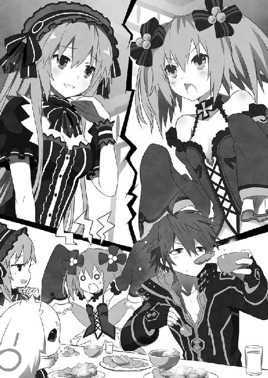

| フェアリーフェンサー エフ 砂塵のマントを纏う者たち（桜ノ杜ぶんこ） | |
| 鐘弘亜樹 | |
| (2014) | |
桜ノ杜ぶんこ
フェアリーフェンサーエフ
砂塵のマントを纏う者たち
鐘弘 亜樹
ファングはまどろみのなかで究極の選択を迫られていた。二つの選択はどちらも等しくファングを誘惑した。一方は春の朝霧のように優しく、一方は百合の花の香りのように激しく。
どちらを選んでもファングが完全に満たされることはない。どちらかを選ぶということは、どちらかを捨てるということ。ファングは両方を手に入れたかった。しかし、それは不可能だった。純白の布にその身を包み、ファングは非情な二択を迫られる。
肉の焼ける匂いが鼻腔をくすぐる。これは鳥の唐揚げに違いない。したたる肉汁、カリカリの衣、立ち上る湯気。完璧な唐揚げの条件を満たしたそれをイメージし、ファングの心は一方の選択肢に大きく傾いた。つまり、「ベッドから起き上がり朝食を摂りに行く」方へ。
ファングはあくびをして薄目を開いた。青い目にすっかり見慣れた焦げ茶色の天井が映る。この落ち着いた雰囲気の宿屋を拠点として、ファングたちは旅をしている。妖聖の宿る武器、フューリーを集める旅を。この世界に百本あるフューリーを集めれば、どんな願い事も叶う。そんな伝説を信じ、ファングは日々フューリーを探し歩いている......というより、半ば強制的に探し歩かされているのだった。
元々ファングには、わざわざ百本ものフューリーを集めてまで叶えたい願いなどない。もちろん、人並みに願望はある。楽をして生きたい、美味しいものが食べたい、ちやほやされたい、などなど。しかしそれらはフューリーを全て集める労力には釣り合わない願いだ。なにしろフューリーは、ほとんどが自然の要塞あるいは屈強な人間に守られ、手にするのが非常に困難なのだ。
一本一本に妖聖の宿るその武器は、持ち主に多大な力を与える。だからフューリーを所持している者は奪われないよう必死の努力をするし、またそれを狙うライバルは絶えない。ライバルを蹴散らしフューリーを集めることは元より、保持すること自体が命懸けなのだ。
目先の幸せが第一で、とりあえず今日食べるものと寝るところがそれで良しという、寡欲ともぐうたらとも言える思考のファングにとってそんな面倒事は極力避けたいところだった。しかし、二つの強制力がそれを許さない。
「ファングさん、アリンさーん！ いつまで寝ていらっしゃるんですか？ 早く起きて、私のために働いてください」
階下からよく通る声が飛んでくる。その声の主、ティアラこそ、ファングに不本意なフューリー集めをさせる強制力の一つだった。
ファングと同じく、フューリーを持つ者──すなわちフェンサーである彼女はファングの戦いぶりに目を付け共闘関係を申し込んできた。私を仲間にすれば、縁者の経営する宿屋を提供してあげますわ、というティアラの言葉にファングは素早く首を縦に振った。タダで飯にありつけ、タダで清潔なベッドで眠れる。これ以上望むことがどこにあろうか。面倒なフューリー探しはティアラに任せて、俺は優雅な宿屋暮らしだ！ ファングは密かに歓喜した。が、現実はそう甘くはない。ティアラは宿屋を提供する対価をきっちり払ってもらうつもりだった。朝は起きたこともないような早い時間に起こされ、多くのモンスターと戦わされ、一日中フューリー探しに付き合わされる。たまには休息も必要だと主張したところで聞き入れてもらえない。結果、夢見ていた食っちゃ寝食っちゃ寝の宿屋暮らしとは、だいぶかけ離れた生活を送っている。
（ああ、今日もあちこち歩き回ってフューリー探しに明け暮れるのか）
そう思った途端、ほとんど力を失っていたもう一方の選択肢「このまま二度寝を決め込む」が、にわかに勢いを取り戻した。睡魔が一度開いたファングの瞼を再び閉ざす。同時に空っぽの腹が、こっちの都合はどうなると抗議の声をあげた。
ファングは迷う。朝食を摂りに起きるか、二度寝をするか。
「うーん......」
悩めるファングは瞼を開け寝返りを打った。すると木製の扉が開き、ひとりの少女が入室した。十六、七歳と思わしき小柄な少女は、大き過ぎるスリッパを引きずるようにしてファングの元へ歩み寄った。
「ティアラが早く起きろってさ」
夢の余韻が色濃く残る声で少女は言った。ファングは薄目を開けそれに応える。
「いま何時だよ」
「うーんと......七時前」
「あり得ねえ。どうして俺が会社に入らずに、気ままなその日暮らしを選んだと思ってる」
「どこにも雇ってもらえなかったからじゃないの？」
「違う。朝早く起きるのが嫌だからだ。七時なんかに起きたら、俺のこれまでの生き方を否定することになんだよ」
「言ってる意味がよく分かんないけど......。とにかく、早く起きて今日もフューリー探しに行かなきゃ。こうしてる間にもどっかの誰かに先越されちゃうかもしれないし」
その言葉とは裏腹に、少女の目は眠気を帯びてとろんとしている。オレンジ色の長い髪は寝癖であちこちが跳ねているし、背中に生えた、髪と同色の羽もこころなしか元気がない。それを見たファングは、ある画期的なアイディアをひらめいた。それは現状のジレンマを解消する、素晴らしい方法だった。
「アリン、食堂から俺の朝食を持って来い」
「なんでよ。普通に食べに行きゃいいでしょ」
「俺はまだ、一歩たりともベッドから出たくない。だが腹は減った。このジレンマにさっきから悩まされていたんだが、いい解決策を思いついた。アリンが朝食をここまで持って来てくれれば、すべて丸くおさまる」
「つまり寝食いする気？ 呆れた。こんなヤツにあたしの初めてを奪われたなんて......信じられない。信じたくない」
アリンと呼ばれた少女はがっくり肩を落とした。
「ほら、さっさと持って来い。ご主人様の命令だぞ」
「もう！ 何度言ったら分かるのよ。あたしはあんたの召使いじゃない。パートナーよ。フェンサーと妖聖の関係は五分と五分。平等なものなの！」
アリンはきつい口調で言った。怒りで目が覚めたのか、その声は先ほどよりもはっきりしている。
アリンは人間ではない。ファングのフューリーに宿る妖聖だ。そしてファングにフューリー集めを強いる二つめの強制力でもある。
アリンとファングの出会いは夏の日の天気雨よりも突然だった。それは根無し草のファングが、たまたま訪れた街でのこと。ファングは街の片隅で奇妙な剣を発見した。やたらと大振りの、ごついデザイン。刃は通常の剣と比べ三倍ほどの幅で、一辺はノコギリ歯のように凹凸がある。特異な見た目だけでも充分人目を引いたが、更に奇妙なことに、その剣は岩に刺さっていた。いくら頑丈な剣でも、岩を貫くことはできない。これはいったいどうなっているのだろうとファングが首を傾げていたところ、近くにいた青年が言った。
──あの剣はこの街ができる前から、ああして岩に刺さっているらしい。剣を抜いた者はなんでも願いが叶うなんて言われてるよ。
そんな古典的な、とファングはツッコミを入れそうになったが、ひもじさを訴える腹の声を聞き思い返した。なんでも願いが叶うなら、たくさんのご馳走を出してもらえるかもしれない。ものは試しだ、やってみよう。ファングは藁にも縋る思いで剣に手をかけた。手持ちの金ではパンひとつ買えなかったのだ。
ファングが剣に手をかけ、上に引くと剣はあっさり岩から抜けた。その瞬間から、剣つまりフューリーに宿っていた妖聖アリンはファングのパートナーとなり、ファングはフェンサーとなった。
街の人々はざわめき、勇者の誕生だとファングを崇めた。が、ファングは不満だった。願いが叶うのはこの世にある全てのフューリーを揃えた時だという新事実が明らかになったからだ。話が違う。詐欺だ詐欺。そう文句を付けるファングの傍らで、アリンは意気揚々とフェンサーとしての心得を説いたのだった。
「それくらいしてくれたっていいだろ。お前の記憶を取り戻すため、俺はフューリー集めなんて七面倒くさいことに付き合ってんだ」
「あのねえ、フューリー集めを面倒くさいだなんていうフェンサー、あんたくらいなもんよ。フューリーを全て揃えれば、どんな願いだって叶うんだから。なんだっていいのよ？ この世界を我が手に、なんて手垢のついたセリフも実現されちゃうのよ？」
「別に、世界なんてもらっても困るしな。固定資産税大変そうだし」
「固定資産税って......。はあ、あんたってその辺ほんとずれてるよね」
なぜ大そうな願いのないファングが、フェンサーになったのか。フューリー集めを面倒だというのなら、アリンとフューリーを置きざりにし、それまでの生活を続ければ良かった。そうしなかったのは、アリンには記憶がないと分かったからだ。さすがに記憶のないいたいけな少女を放っておけるほど、ファングも鬼ではない。
フューリーを集めていけば、自然とたくさんの妖聖に出会える。その中には自分の過去と繋がりを持つ者がいるかもしれない。アリンにそう言われ、ファングはしぶしぶフェンサーとしての道を選ぶことに決めたのだった。
加えて、私の初めてを返せと喚くアリンを早く黙らせたかったというのもある。誰かのパートナーになるのが初めて、という文脈なのだが、おかしなところを省略するせいで非常に語弊のある言い方となり、道行く人に白い目で見られる。そのいたたまれなさも、フェンサーになる決意の後押しとなった。いま思えば、あれはアリンの作戦だったのかもしれない。記憶がなければ、ファングが初めてのパートナーかどうかも分からないはずなのだから。
「とにかくさっさと起きて、今日もフューリー集めに行こう！」
アリンは一向に起きる気配のないファングの体を両手で揺さぶった。
「んだよ、本当はお前だってまだ寝たいんじゃねえのか？ まだ羽がくたっとしてるぜ」
「やだ......こんなところ見ないでよ」
アリンは恥ずかしそうに羽をぴくりと震わせた。
「確かに私だって、こんな時間に起きなくたっていいんじゃないかなとは思うけど......」
「そうだ、俺の朝食を持って来るついでに自分の分も持って来いよ。そうしたらお前も寝食いできる。いいぞ、寝食いは。ふかふかの掛布団に包まれて、肉汁たっぷりの唐揚げを頬張る。腹が満たされれば、そのまま二度寝直行だ。な、天国だろ？ 天の差し伸べる手を振り払うなんて、罰当たりだと思わないか」
「寝食い......二度寝......！」
アリンはごくりと喉を鳴らした。もう一押しだとファングは思った。フューリーを頑張って集めようする意思は強いものの、アリンは結構誘惑に弱く、なにかと横道にそれやすいことをファングは知っている。
「でも、ティアラがうるさいし......」
「いいんだよあんなヤツ放っておけば。だいたいあいつは後から入って来たくせにリーダー気取りで、態度がでかいんだ。そろそろ自分の立場ってもんを教えてやらないとな」
「そうそう！ 何様って感じ」
「絶対、もてねえな。まったく可愛げってもんがない」
「ちょっとはあたしを見習ってほしいよね」
「いや、それはそれで問題が......」
それはどういう意味だとファングに詰め寄りかけた時、アリンは肩に僅かな重みを感じた。見ると、自分の肩に白い手が乗っている。その手首には、見慣れた青い布製のバングルが巻かれていた。
「......げ」
アリンが恐る恐る後ろを向くと、案の定不穏な笑みを浮かべたティアラが立っていた。
「永遠にベッドから起き上がれないようにして差し上げましょうか。そうすれば、好きなだけ二度寝ができますわよ」
ぐぐ、とアリンの肩を掴む手に力が入る。
「いたっ！ごめんなさいごめんなさいごめんなさいってばあー！」
アリンの悲鳴が響き渡り、ファングはついに究極の選択の答えを決めた。これ以上ティアラを怒らせないよう、迅速に起きるべし、と。
鳥の唐揚げ、レタスのスープ、トマトサラダ、ライス。宿屋のおかみさんでもあるミツボ・シィ料理長の料理は、その名の割に庶民的だが味はいい。ファングとアリンは、隙あらば互いの皿を侵してやろうという勢いで料理を貪り食う。
「ちょっとファング！ さっきからあたしの唐揚げをいやらしい目で見るのはやめてよね。絶対狙ってるでしょ？」
「見てないし狙ってねえよ。自意識過剰な女だな。つか、三つも残してんならひとつくらい寄越せ」
「やっぱ狙ってんじゃない！」
すっかりお馴染みとなった風景を尻目にティアラはため息をついた。
「あなた方、食事の時くらい静かにしたらどうですの？」
ティアラは上品に唐揚げをナイフとフォークで小さく切り、口へ運ぶ。食べ方や言葉遣いだけでなく、ティアラを構成するものはみな上品で、洗練されている。腰まで伸びた水色の長い髪はよく手入れされ、一分の乱れもない。フリルの付いた青いワンピース、太ももの半分までを覆う白いニーハイソックスは毎日過酷なフューリー集めに明け暮れているにもかかわらず、極めて清潔に保たれている。そしてそれらを難なく着こなせる甘い顔立ちは間違いなく美少女の部類に入る。しかしきれいな花には棘があるというように、ティアラもまた、立派な棘を隠し持っていた。
「アリンさんとファングさんは本当に怠惰ですわね。すぐに二度寝だ寝食いだなどと......。私がいなければ一日中寝てばかりいるのではないですか？ それ以前に、私がいなければとっくの昔におマヌケな罠にかかってお星様になっているでしょうね。私が何度おふたりをピンチから救ったか分かりませんもの。それなのに、まさかあんな悪口を言われようとは......」
「だから、ごめんって言ってるでしょ」
アリンはプチトマトを頬張りつつ、面倒くさそうに言った。口のなかの唐揚げを咀嚼する度、耳の上でふたつに結んだオレンジ色の髪が微かに揺れる。
「ものを食べながら喋るのはやめてください。お顔立ちが残念なら、せめて振る舞いで補おうとは思いませんの？」
「はあー!? あたしの顔のどこが残念だって言うわけ!?」
「どこが残念か、ですか。困りましたわね。ひとつひとつ残念な箇所をお教えしてもよろしいのですけど、そうすると日が暮れてしまいますわ」
「む、ムカつく......！ そんなんだからファングに態度がでかいとか可愛げがないとか、ファッションセンスが痛いとか言われんのよ」
「いや、最後のは言ってねえよ」
ファングは冷静に突っ込んだ。タイプの違うアリンとティアラがこうして言い合うのはしょっちゅうであり、今更慌てることではなかった。
「そんなことを......!? ひどい、私の前ではアリンさんのことを食欲大魔神とか、お調子者とか、幼児体型とか言っていましたのに！」
「それも最後のは言ってない」
再びファングは冷静に真実を述べる。が、逆上したアリンの耳にその声は届かない。
「み、見たこともないくせになんで分かるのよ。あたしはね、脱いだらすごいタイプなの。一見小柄で可憐なスレンダー体型だけど、脱いだらびっくりボンキュッボンなのよ！」
「脱いだらびっくりボンキュッボン？ 早口言葉ですか？ というか、おかしいですわね。以前一緒に入浴した時は、なんの意外性もないずん胴ボディーだったような気がしますけれど」
「うるさいなあ、あの時のあたしといまのあたしは違うの。あたしは成長期なんだから」
「ずいぶん遅い成長期ですこと」
このままではティアラを言い負かすことはできない。経験上そう悟ったアリンは視線の先をファングへ移した。
「で、ファングはどっちの味方なわけ？」
「それは私もお聞きしたいですわ。私とアリンさん、どっちを取るおつもりですの？」
目をギラつかせた女性ふたりに回答を迫られながらも、ファングはふてぶてしく唐揚げを食い千切った。
「おいおい、お前らこのおれ様にタダで味方になってもらおうってのか？ 味方になってほしかったら、それ相応の謝礼を払え。とりあえず、今晩あたりクリボッタホテルのスペシャルディナーコースをご馳走してもらおうか。そうしてくれた方の味方になってやる。どうだ、どっちがご馳走してくれんだ？ 俺はどっちでも構わないぞ」
ファングの返答に、アリンとティアラはげんなりとした表情を浮かべた。あんまりピント外れな発言に、怒りを通り越し呆れ果ててしまったらしい。

「もういい。あんたに話を振ったあたしがバカだった」
毒気を抜かれた様子で、アリンは大人しく食事を再開する。
「ファングさんに味方をしていただいたところで、なんの役にも立ちませんものね。私には、ファングさんなんかよりずっと頼りになるパートナーがいますし。ねえ、キュイ？」
ティアラは隣の席に話しかけた。四角いテーブルを挟んで向かい側に座っているファングとアリンからは見えないが、そこには小さな生き物がちょこんと座っている。
「キュイ、キューイ！」
小さな生き物はティアラに話し掛けられると、朝食の入った皿から顔を上げ嬉しそうに鳴いた。
「ふふ、ありがとう。私もキュイが大好きですわ」
ティアラは柔らかい笑みを湛え、小さな生き物──キュイを撫でた。キュイは大きな目を細め、うっとりとしている。
全身を白い毛に覆われた、うさぎともネコともつかないそれはティアラのパートナー妖聖だった。フューリーに宿る妖聖の姿は千差万別で、アリンのようなヒト型もいれば、キュイのような動物型もいる。動物型は多くの場合、人語を操ることはできないが、パートナーとのみ意思の疎通が可能だ。キュイとティアラもそのパターンで、よく会話をしている。一見するとペットを溺愛する飼い主が一方的に話し掛けているだけの図、なのだが当人同士では会話が成り立っているのである。
「アリンさんとファングさんも、キュイくらいしっかりしてくださるといいのですけどね」
「キュイ、キューイ！」
「まあ、キュイ。いくらなんでもそんなことを言っては失礼よ？ 一応は旅の仲間なんですから、言っていいことと悪いことが......」
「キューイ！」
「キュイったら、いけない子ねえ」
言葉とは裏腹に、ティアラは優しくキュイを撫で続けている。
「おい、そいつなんて言ったんだよ」
明らかに自分の悪口を言われたファングは、フォークでキュイを指し尋ねた。
「そんなこと、私の口からはとても言えませんわ」
ティアラがそう言うと、キュイはひょこっと後ろ足で立ち上がった。すると四本足で座っている時よりも顔の高さが二十センチほど高くなり、テーブルの向こう側にいるアリンとファングとも顔を合わすことができるようになる。キュイは赤みがかった、きらきらと輝く目でふたりを代わる代わる見つめる。そして鼻の下から見え隠れする、小さな口の片端を上げた。
「キュッキュッキュッ......」
その人を小馬鹿にしたような鳴き声に、アリンは頬を引きつらせた。
「いま、絶対バカにされた気がする......。ねえティアラ、キュイはあたしたちのことなんて言ってるのよ」
「ですから、私の口からは言えないと言っているでしょう。というか、アリンさんも聞かない方がよろしいですわよ。お怒りのあまり、宿屋を半壊して多額の賠償金を請求される、なんてことになりかねませんわ」
「要はそんだけのこと言われてるってことね。ああ、頭に来る。頭に来るけど......」
憤るアリンを気にも留めず、キュイは食後の毛づくろいを始めている。あるかなしかの前足をマゼンダ色の舌で舐め、くしくしと顔を洗う。続いて長い垂れ耳をきれいにしようとするのだが、前足が短すぎるためなかなか耳へ届かない。空振りを二回繰り返し三度めの正直でようやく耳を掴むと、両の前足で丁寧に梳き、また満足げに前足を舐める。
「か、可愛い......」
小動物型妖聖ならではの愛くるしい仕草に、アリンは完敗した。キュイの毛づくろい攻撃に耐え得る女性は滅多にいないのだ。
一方ファングはティアラの斜め後ろに向かって「よう」、というふうに手を上げた。そこには調理場から出てきたミツボ・シィ料理長がいた。
「おはよう、みなさん」
肉付きのいい体、後ろでひとつに束ねた白髪交じりの髪、人当たりのよさそうな丸顔。模範的な宿屋のおかみさん、ミツボは明るく挨拶をした。
「おはようございます。今日のごはんもおいしいですわ」
ティアラが後ろを振り向き、丁寧に挨拶を返す。
「そりゃあ良かった。はいこれ、頼まれてたもんだよ」
ミツボはそう言って、手に持っていた四角いタッパーをティアラに渡した。
「ありがとうございます。とても助かりますわ」
「本当にひとり分でいいのかい？ 全員分のお弁当を作ったっていいんだよ」
「いいえ。泊まる場所だけでなく、食事の面倒まで見ていただいているのですから、これ以上ご迷惑をかけるわけにはいきません」
「いいんだよ。アタシは昔からフェンサーに憧れててね。アンタ達の力になれるのが嬉しいのさ。それに、ティアラちゃんがたまに入れてくれるお金で充分食費は......」
賄えているよ。とミツボが言い終わる前に、ファングは「あっ！」と大きな声を出した。
ファングの手には先ほどミツボがティアラに渡したタッパーが握られている。その中身を見て、ファングはティアラを責めた。
「ティアラ！ てめえ自分だけこんな弁当作ってもらいやがって......あとでこっそりいただくつもりだな!?」
アリンもタッパーの中を覗き込み、非難の声をあげる。
「あ、ほんとだ！ ずるーい！」
そこには朝食の残りらしい唐揚げとサラダ、ライス、更に一品追加で玉子焼きが詰め込まれていた。
「違います！ それは私が食べるのではありません」
「じゃあ誰が食うってんだよ」
小さいことは気にしないファングだが、食べ物のこととなれば別だ。疑いの眼差しをじっとティアラに注ぐ。
「そ、それは......誰でもいいでしょう？ ファングさんに教える必要はありません」
ティアラは一瞬たじろぎ、追及から逃れるように下を向いた。そんなティアラの様子を見て、アリンはなるほどねと呟く。
「ははーん、なるほど。そういうことね。あたし分かっちゃった」
「なにが分かったっていうんです」
ティアラは、全てお見通しだとでも言いたげに腕を組むアリンを見返す。
「ティアラ、好きなひとでもいるんでしょ。そのひとにお弁当を渡して家庭的アピールをしたいところだけど、自分じゃ上手く作れない。だから代わりにミツボさんに作ってもらったってところじゃない？」
自信満々に言い放つアリンに、ティアラはやれやれと肩をすくめた。隣のキュイは毛づくろいの最終段階に入り、背中を舐めている。
「恋愛経験のない方は妄想力ばかり逞しくて嫌ですわ。いまの私は恋愛にいそしんでいる暇などありません。それにお料理の心得くらい多少はあります」
「な、なによ。あたしに恋愛経験が無いってどうして言えるのよ。だいたいそんなもんあんたにだって無いでしょうが！」
「それは私が私情よりもフェンサーとしての勤めを優先しているからです。私がその気になれば、恋人のひとりやふたりくらい、ちょっと道を歩いただけでできますわ。......というわけで、そのタッパーは返していただきます」
ティアラは素早くファングの手からタッパーを取り上げた。もたもたしていれば唐揚げが抜き取られ、サラダと玉子焼きとライスのみのシンプル過ぎる弁当が誕生すると知れていたからだ。
「てめえ......後でひっそり食ってたことが分かったら承知しないからな。そのプチトマト鼻に突っ込んで口から出す一発芸仕込んでやる」
「そ、そんな......なんて乱暴で下品なことをおっしゃるの......。でも、ああっ......なんだかとっても......」
ファングに暴言を吐かれたティアラは、これまでのように毅然とした態度で反撃するかと思いきや、意外な反応を示した。頬を染め、身を捩り、声を震わせる。まるで艶っぽい愛の言葉でも囁かれたかのように瞳を潤ませ、言った。
「新鮮......」
今日一番の甘い声で放たれた一言に、アリンは眉をひそめた。
「ちょっと、さわやかな朝にツンエム気質発揮しないでよ。ファングも、ティアラが喜ぶようなこと言わないで」
「相変わらず気持ち悪い性質だな」
気持ち悪い、と言われたティアラはまた扇情的に背をしならせる。
「気持ち悪いだんなんて......。私、言われたことありませんわ......」
ティアラの顔は恍惚と輝いている。
ティアラにはファングに罵られると、新鮮......と言って喜ぶ妙な癖があった。恐らく、見た目どおりお嬢様育ちである彼女の周りには、これまでファングのような口の悪い若者など存在しなかったのだろう。彼女にとって、あからさまな言葉で罵られることはとても面白く、新鮮な体験なのだ。宮廷で育ったお姫様が、庶民同士の馴れ馴れしさに憧れるようなものかもしれない。だから、ファングの暴言は怒りではなく喜びに変換される。つまりアリンの言うティアラのツンエム気質は、彼女の育ちの良さを証明するものであり、決してティアラに変な性癖があるのではない......ということにしておく。
「はっはっはっ。みんな元気そうだねえ」
三人のやり取りを眺めていたミツボは、どっしりとした調子で笑った。
「今日もフューリー探しに行くのかい？」
ミツボに問われると、ティアラは悦びに浸った顔をさっと元に戻して頷いた。
「ええ。ロロさんのところで情報を購入してから、フューリーを探しに行くつもりです」
「ロロっていうと、あの小さい女の子かい」
「そうですけれど......どうかしまして？」
ティアラはミツボの表情が珍しく曇ったのを認め尋ねた。
「いやね、ちょっと悪い噂を聞いたもんだから。なんでも最近、あそこの店で情報を買ったフェンサーが次々と失踪しているらしいんだよ。それであのロロっていう子は、フェンサーを騙してなにか悪いことをしてるんじゃないかって言われてるんだ」
「それはない」
ミツボの発言を間髪入れずに否定したのはファングだった。
「あいつは確かにどうしようもない金の亡者だが、ガセネタ売るほどバカじゃない。つか、あいつはこれから先もずっとフェンサーから金を搾り取って生きていくつもりだ。なにしろ金のことしか頭にない、がめつい女だからな。だからこそガセネタなんかを売って店の評判を落とすような真似はしないだろ」
ファングの言い分にアリンも首肯する。
「嫌な信頼のされ方ね......。でも、あたしもファングの意見に賛成。あの子の貪欲さは世界一だけど、情報の確かさも世界一。あの子のお店で情報を買ったフェンサーが失踪してるっていうのは、単なる偶然か、実力が足りなくてフューリーに辿り着けなかったかじゃない？ フェンサーなんていつも危険と隣り合わせなんだから、黙って姿を消すこともあるよ」
更にティアラとキュイも同意する。
「そうですわ。ロロさんは金銭至上主義の小憎たらしい子どもなだけで、そこまで悪質ではありません」
「キュイ、キュイ！」
ファングらの主張にミツボは目を丸くした。ロロへの疑惑を否定すると同時に、皆が口を揃えてロロを守銭奴呼ばわりするのに驚いたのだ。そんなにがめつい子どもがこの世にいるのか、と驚嘆すると共になにやらおかしさが込み上げてきて、ミツボはまた破顔した。
「ははっ。ずいぶんと信用されているようだね、そのロロって子は。あんた達がそう言うなら間違いないんだろう。今日もフューリー探し、頑張ってね」
ミツボは無骨な手でキュイの頭をごしごし撫でた。そして背を向け、さっそうと調理場に戻って行った。
「じゃ、俺たちも行くか」
朝食を終えた一行は立ち上がり、荷物を取りに二階へ行った。
食卓にはただひとり、キュイだけが残された。キュイはルビーのような瞳で虚空を見つめている。ほとんど表情筋のないその顔からは、なにも心境が読み取れない。ただぼうっと立ち尽くしているかのようだ。しかし本当のところ、キュイの心は荒れていた。せっかく完璧に整えた毛並みを、ミツボの気まぐれな一撃によって台無しにされてしまったからだ。キュイは誰にも知られない苛立ちを抱え、毛並みの修復作業に取りかかった。
円柱のガラスケースのなかに、お花畑が広がっている。直径二十センチほどの、小さなお花畑だ。シロツメクサ、ヒマワリ、薄紫のケシの花、赤いバラ。中央には桜の木が根を張っている。本来同じ季節に咲くはずのないそれらが一斉に咲き誇った風景は、美しいというよりアンバランスな印象だ。
見る者を落ち着かない気持ちにさせるそのお花畑には、不思議なものが住む。大人の小指ほどの大きさで、ひとの形をしているが背中には羽を生やしたものだ。昔話に出てくる精霊のようなそれが三体、ガラスケースのお花畑に住んでいて、ひっきりなしに走り回ったり、花を摘んだり、飛んだりする。精霊の姿は巧緻を極めており、とても作りものには見えない。しかし、一時間もすればその行動が一定のパターンに沿っていることが分かる。
精霊の花園と名付けられたこの商品は、ドルファという大手企業から発売された玩具の一種だった。初歩的な立体映像技術を用いた精霊の花園は、発売開始から一年が経った現在でも店頭に並べばすぐに売り切れてしまう人気ぶりである。三体の精霊は狭い店の片隅で、微塵も変わらぬ笑顔を振りまく。
ここは風変わりな店だった。精霊の花園をはじめとする不思議な置物、用途不明な実用品らしきもの、魔除けのお面、分厚い本などなど統一感のない品々が雑然と置かれている。ガラクタとも希少品とも言える商品に囲まれて、店の真ん中には幼い少女が椅子に座っていた。金色のウェーブのかかった長い髪、青い目、白い肌。不思議の国のヒロインさながら、水色のワンピースと白いエプロンを身に纏った姿は人形のようだ。微動だにしないでいれば、商品のうちのひとつかと勘違いする客がいてもおかしくはない。しかし、実際にそんな勘違いをする客はいままでひとりもいなかった。なぜなら少女は、客の前で黙っているなどというしおらしいことを絶対にしないからだ。
ドアに吊り下げられたベルが鳴り、客の来店を告げる。少女は勢いよく椅子から立ち上がり、お決まりのセリフを口にした。
「いらっしゃいませー！」
ロロの店へとやって来たファングらは店主の歓迎を受け、それぞれ簡単な挨拶を述べた。
「おう」
「おはよー」
「おはようございます」
毛づくろいをしていたせいで出遅れたキュイは、そこでようやく一行に追いつきティアラの肩に乗った。
「あらキュイ。あなたどこにいましたの？」
「キューイ！」
少女、ロロは愛想よく四人を迎える。彼女にとって、ファングたちは性質のいい上客だった。フェンサーのなかには、ロロが無力そうな子どもであるのをいいことに力づくで商品や情報を奪い取ろうとする者もいる。そういう場合、ロロはしかるべき対処をし、きっちり全額をお支払いいただくのだが、ファングたちとは余計な手間をかけることなく初めからクリーンな取引ができた。
「お兄ちゃん、お姉ちゃん。また情報を買いに来てくれたの？」
「ああ。いいもん入ってるか？」
「もっちろん！ お兄ちゃんとお姉ちゃんのために、とってのおきの情報ゲットしといたよ。まあ、その分こちらも高くついちゃう訳だけど......」
ロロは親指と人差し指で丸を作り、ちょいちょいと揺らして見せる。子どもらしからぬ仕草に、アリンは苦々しく言った。
「相変わらず、露骨ね」
一方、金の絡む話はさっさと進めたいタチのファングは単刀直入に問うた。
「で、いくらだ？」
ロロは満足げに頷く。商売をするには、こういうざっくばらんな物言いをする人物が最も信用できる。いつもと変わらぬファングの様子にロロは機嫌を良くし、満開の笑顔を咲かせた。見るからに柔らかそうな頬が隆起し、金のまつ毛に囲われた目の下にぷっくりと涙袋が現れる。お手本のようなエンジェルスマイルを浮かべたまま、ロロは九本の指を立てた。
「九十九万九千九百九十九Ｇになります！」
「高っ」
ファングは反射的に発声した。毎回毎回ロロは高額な情報料を提示してくるため、ロロがなにかの値段を言うと高いと返すのが条件反射になっているのだ。
「いつもどおりのぼったくり価格ね」
アリンがそう言うのも無理はない。これだけの金があればちょっとした世界一周旅行だってできる。
ロロの情報は高い。日々なにかしらの依頼が舞い込み、金儲けには苦労しないフェンサーにとってもさすがに高い。本当ならばロロに頼らず、聞き込みなどでフューリーのありかを調べたいのだが、そうして得た情報はどうしても正確さを欠く。数日をかけて足を伸ばした先にあったのは、フューリーではなくただのおもちゃの剣だった、という経験を二度三度しているファングたちにとって、ロロの情報の確かさは何物にも代え難かった。だから法外な値段を提示されても、こうしてまた店に来ざるを得ない。ロロもそのあたりの事情を飲み込んでいて、頑なに値段は下げない。要するに、ファングたちは幼いロロに足元を見られているのであった。
「もうそれ百万Ｇだろうが！ 指九本立てて実際よりも安く思わせようとしてんじゃねえ！」
ファングは唯一倒されていたロロの左手の親指をつまみ、立ち上げた。
「バレたか......」
ロロはやや悔しそうに呟く。
「バレるわよそんなもん。......で、どうすんのファング。買うの？」
アリンに決定権を委ねられたファングはうーんと唸った後、渋々頷いた。
「ま、買うっきゃねえだろ」
「まいどありー！ さすがお兄ちゃん、いつもながら賢い選択だね」
「お前に褒められてもいまいち素直に喜べないんだよな」
ファングがぼやきつつ財布の入ったポケットに手を伸ばした、その時。
「お待ちください」
それまで黙っていたティアラが制止をかけた。ティアラはファングを押し退け、ロロの前に出る。
「ロロさん、これをどうぞ」
ティアラは鞄の中から例のタッパーを取り出した。それをロロに差し出す。受け取ったロロは訝しげにタッパーとティアラを見比べた。
「なに？ これ」
「開けてみれば分かりますわ」
ティアラに促されロロは蓋を開けた。
「おべんとう......？」
中身を確認すると、ロロは意外そうに呟いた。頭上に疑問符を浮かべる少女に、ティアラは優しく説明をする。
「ロロさんは幼くていらっしゃいますのに、きちんとお店を切り盛りしてご立派ですわね。前に伺ったお話ですと、身のまわりの世話も全てご自分でしてらっしゃるとか。ロロさんはとても優秀ですから、その辺りもソツなくこなしてしまうのでしょうけれど、栄養バランスの取れた食事を作るのは大人でも大変なことですわ。ロロさんがきちんとしたものを食べていらっしゃるか、前々から心配をしていましたの。おせっかいかも知れませんが、それはほんの気持ちです。どうか私を安心させるためと思ってお食べになってください」
押し付けがましいほどのいいひとオーラを放出しつつティアラは言った。
アリンはティアラがひとり分の弁当を用意してもらったわけを納得すると共に、深く感心した。このタイミングで手作りのお弁当というキラーアイテムを出され、こんなにも優しい言葉を掛けられれば、さすがのロロも値引きを考えるはずだ。現に、ロロは目を潤ませてティアラを見上げている。
「あなたは確かに頭脳明晰ななんでも屋さんですが、それでもあなたがいたいけな子どもであることに変わりはありませんわ。少しは周りのひとを頼ってもよろしいのですわよ？ 私たちは、ロロさんを実の妹のように可愛く思っているのですから」
「お姉ちゃん......！」
いいぞ、ティアラ！ もうひと押し！ アリンは心の内でティアラに声援をおくり拳を握る。
「そう、私とロロさんは姉妹も同じなのです！ ......ところで、この世には身内割引という語がありまして」
「ありがとう！ お姉ちゃんって、とっても親切なんだね。それじゃあ九十九万九千九百
九十九Ｇ、お願いします！」
なんの戸惑いもなく言い放ったロロに、アリンは危うくずっこけるところだった。
「ちょっとお！ いまのは絶対、ティアラの親切にほだされて値引きをする流れだったでしょ!? どうしてそうなんのよ」
「流れ？ ほだされる？ ごめんね、あたし難しい言葉は分からないんだ。いたいけな子どもだから」
ロロはプチトマトを指でつまみ上げ、口に放り投げた。その顔は子どものものとは思えない余裕と貫録に満ちている。
「分かってるよね。その顔は分かってる顔だよね」
「なかなか手強いですわ......」
悔しがるアリンとティアラを尻目に、ファングは潔く財布を開けた。これだからフューリー集めは嫌なんだと思いながら。
金を受け取ったロロは慣れた手つきで勘定を始めた。弁当をもらった時よりも数百倍いい表情をしている。おままごとでもしているかのように無邪気な様子を見て、ファングは尋ねた。
「お前って、どうしてそんなに金を欲しがるんだ？ まさかその歳で借金でもあんのか？」
「失礼だなあ、借金なんかないよ。あたしはただ、純粋にお金が好きなだけ。この形とか、色とか大きさとか。見てるだけでヒャワーってなるの。チャリンチャリンいい音するし、日に当てるとキラキラ光るし。こんな素敵なもの、他にはないと思うんだ。だからいーっぱい欲しいの」
ロロは器用なことにしっかり金を数えながら質問に答える。
「まったくもって共感できねえ理由だな。かなり貯め込んでんだろ？ 家でも買って、ぱーっと使ったりしないのか」
「家!? 家なんか買ったら大変だよ！ せっかく集めたお金のほとんどが無くなっちゃうじゃない。日用品だって、なるべく安いのを選んで買ってるのに」
「だから、そんなに貯めてどうすんだ」
「貯めることに意味があるんだってば。あたしはこの、お金そのものが好きなの。お金に囲まれて暮らしたいの」
「......つまり、お金フェチってこと？」
アリンがロロの本質を言い当てたところで、ロロは勘定を終えた。使い古され、口の閉まらなくなったレジスターにジャラッと金を入れる。レジスターを買い換える金も惜しいらしい。
「はい、確かにお代頂戴しました！ では情報を提供するね。忘れないように、よーく聞いてね」
ティアラは素早くメモ帳と鉛筆を鞄から出した。アリンやファングに任せておくと、情報はどんどんあやふやになり原型を失いかねない。
「ここから五十キロくらい離れたジージバッカ村に、フューリーが安置されてるみたいだよ。お兄ちゃんたちなら問題ないと思うけど、途中には盗賊のうようよしてる砂漠地帯があるから気をつけてね。地図はこれ」
ロロは筒状に巻かれた紙をファングに渡した。
ジージバッカ村、フューリー安置、砂漠危険。ティアラのメモ帳にきれいな字が並ぶ。
「そのジージバッカ村で、フューリーはどのような状態にあるのですか？ 村の誰かの所有物であるのか、村のお守りとして祀られているのか、岩に刺さっているなど入手困難な状態にあるのか......。お分かりになりますか？」
「あ......えーと......。......ああ！ 村を守る神様として、祀られてるよ。でもそれを狙って村を襲う悪質なフェンサーが多いから、ふさわしい使い手に譲ったらどうかって動きになってるの」
「......？」
ティアラは一瞬言葉に迷ったロロを不審そうに見た。ロロの情報に関する記憶は常に完璧で、答えに窮することなど一度もなかったからだ。
しかしそれに気付いたのはティアラだけのようで、アリンとファングは素直に喜びの声をあげる。
「そりゃちょうどいいな。どっからどう見ても完全無欠なおれ様を見れば、向こうからフューリーを差し出してくるに決まってる」
「ファングが完全無欠かどうかは置いておくとしても、好都合なのは確かだよね。今回は楽にフューリーを手に入れられるかも！」
ふたりの気楽な様子に感化され、ティアラは僅かに覚えた違和感を放棄した。きっと自分の勘違いだろう。そう思うことにした。
「おふたりとも、油断は禁物ですわよ。いくら私がフェンサー界一美しく聡明で、フューリーを譲り受けるのにふさわしいと言っても、ジージバッカ村に辿りつけなくては意味がありません。途中には危険な砂漠地帯があるのを忘れないでくださいね」
ティアラがそう言うが早いか、ロロは電光石火のスピードで店の隅へと駆け、パンパンに膨れ上がった巨大な布袋を引きずってきた。
「お姉ちゃんの言うとおり砂漠地帯は危険なところだけど、備えあれば憂いなしだよ。寝袋、鍋、水、マッチ、簡易食料などなど、砂漠横断に欠かせない十アイテムが入ったサバイバルセット！ いまなら特別に真っ当な価格でのご案内！ たったの二万Ｇでどお？」
「すかさず商売盛り込んでくるわね。......そして普段は真っ当な価格じゃないって自覚してんのね」
隙あらば金を儲けようとするロロに、アリンはもはや諦念めいた視線を向けた。
ロロに言われるがまま更なる出費を重ねるのは釈だったが、手ぶらで砂漠を渡るわけにはいかない。仕方なくサバイバルセットを購入し、ファングは重い布袋を背負った。
「ついでにこれはいらない？」
ロロは先端に矢印のついた八十センチほどの棒をファングに差し出す。
「なんだこれ」
「運命の矢印だよ。どっちの道に進むべきか決められない時に使うの。使用方法は簡単。こうやって地面の上に立たせたら、パッと手を離すでしょ？ それで矢印の向いた方向に進めばオッケー！」
「よし、出発するか」
ファングはぱったりと倒れた運命の矢印をまたいで、店の扉を開けた。それにアリンとティアラも続く。ロロがマニアックな商品を紹介し始めたら要注意。まともに取り合っていると、いつの間にか余計ながらくたを売りつけられてしまう。
「気をつけて行ってきてね！ いつもご贔屓にしてくれてありがとう。あ、あとお弁当もありがとう」
運命の矢印についての説明をさっくりスルーされたロロも、機嫌を損なうことなくファングたちを見送る。ファングは軽く右手を上げ、アリンは手を振り外へ出る。ティアラだけは扉をくぐる直前で足を止め、ロロの方へ向き直った。
「ロロさん、私が先ほど申し上げたことは値引きを迫るための嘘などではありませんわ。お困りのことがあれば......いえ、なにもなくとも私たちを頼りにしてくださいね」
ティアラは腰を曲げ、ロロに目線を合わせて言った。いかなる時も奥底に秘めた冷静さを崩さないロロが、珍しく呆気に取られた表情を見せる。けれどそれはほんの瞬きの間だけで、すぐに余裕のある微笑を浮かべた。
「うん。そうさせてもらうよ。......本当に、気をつけて行ってきてね。フューリー集めはなにがあるか分からないから」
ティアラは小さく頷き、店の外へ消えた。
数分前は客の来店を告げたベルが、今度は客の帰りを知らせる。店内にひとり残されたロロはしばらくの間、木製の扉と向き合っていた。やがて涼やかなベルの音が限りなく無に近付いて、ロロの耳に届かなくなった時。ロロはレジスターの横にあるタッパーから、唐揚げを口に運んだ。
「......ひとに作ってもらったものって、おいしいんだ」
無味乾燥の砂漠の地。ここにあるのは、果てなく続く黄土色と広すぎる空のみ。木々がないため、強烈な日光からはどこへ行っても逃れられない。無風状態の、停滞した空気が肌にまとわりつく。
生を感じさせない、悪魔的な静けさを孕んだ土地だが、こんな場所にも命は存在する。いまも砂漠のあちこちで命が狩り狩られ、弱肉強食の世界が展開されている。ここにある四つの命もまた、一種の弱肉強食を体現していた。
前を歩くのはアリン、ティアラ。それから五歩遅れてキュイ。さらに五歩遅れてファングがついていく。
ティアラとアリンは日光から肌を守るため、普段の服の上にひらひらした薄い布をはおり、全身を覆っている。
薄布の下のアリンの服は特異な形状をしている。両腕は際立って袖口の広い、ゆったりとした長袖に覆われているにもかかわらず胴体には最低限の布しか使われていない。鎖骨はもちろん、いくらか窪んだ肩関節を越え胸のふくらみが始まるか始まらないかのギリギリなラインまで露出し、背面に至っては腰がのぞくほど大きくカットされている。アリンは歩きながら伸びをして、肩甲骨を波打たせた。それは成人男性が力一杯握れば壊れてしまいそうなくらい小さく、脆そうに見える。
首の付け根から肩甲骨の間まで、背骨はくりくり浮き上がっていて、そこから下は細長い溝になっている。その溝に一滴の汗が走る様子が紫色の薄布の奥に透けて見えた。
その隣のティアラも、いつもはむき出しになっている丸い二の腕や優しげな太ももを薄布に隠し、それらは白いシルエットになっている。ティアラの歩調に合わせて、ワンピースの裾についたレースがゆらゆら揺れる。
ファングはふたりの後ろ姿を眺めながら次々額に現れる玉のような汗を手の甲で拭った。とにかく、暑い。肌を焼く太陽と歩みを妨げる砂、それに加えて背負った重い布袋が、ファングの体に大きな負担をかけていた。
「ああ、もー疲れた」
砂漠地帯を歩き始めて約二時間。ファングはそう言って足を止めた。背中の布袋を下ろす。重量感のある音と共に砂煙が舞った。
「唯一の殿方が最初に音を上げるなんて、だらしないですわよ」
「俺とお前らじゃ条件が全然違うんだよ。このサバイバルセット、やったら重いんだからな」
ファングはその場にあぐらを掻き、布袋のから二リットルのペットボトルを出した。喉を鳴らしてそれを飲む。布袋のなかには同じものがもうひとつ入っている。それだけで袋は四キロになる。他にも寝袋や鍋、簡易食料などが入っており総量は七キロ以上になる。七キロの荷物を背負って砂漠を横断するのは、腕に覚えのあるファングといえども辛いものがあった。
「あっ！ ちょっと、ペットボトルに直接口を付けて飲まないでよ。あたしたちも飲むんだから」
アリンに文句を付けられてもファングはお構いなしに喉を鳴らし続ける。
「──ぷはっ！ あーうめえ」
「ねえ、聞いてるの？」
「文句があんならもう一本の方を開ければいいだろ。これは俺専用にする」
「そんなのずるい！ 不公平じゃない」
「だったら観念して俺の唾液が付いたペットボトルに口付けするんだな。そもそもコップなんて気のきいたもん無いんだから、直接飲むしかねえだろ」
「唾液って......。サイアク」
アリンはファングからペットボトルを受け取ると、飲み口を服の袖で拭いた。それから口を付けようとしたのだが、ファングと目が合うと気まずそうな顔をして後ろを向いた。間接キス現場を本人に見られるのが恥ずかしかったのだ。アリンは背を向けたまま喉を潤し、ティアラにそれを渡した。
「俺はもうそんな荷物持たねえぞ。交代だ、交代」
「あいにく私は箸より重いものを持てませんので。アリンさんに代わっていただいたらどうでしょう」
ティアラは右手をお椀にして、そこに水を注いだ。腰を屈め水の入った右手をキュイに差し出す。
「キュイ、キュイ」
キュイはマゼンダ色のきれいな舌を使い、必死に水を飲む。その小さな体をティアラは心配そうに眺める。うさぎほどの大きさしかなく、全身を毛に覆われているキュイにとって砂漠は地獄のような環境に違いない。人間が感じるよりももっと大きな負担に耐えているのだろう。
「キュイ、辛かったら私の肩に乗っていいのですわよ」
「キューイッ」
キュイはぷいっと顔を背けた。ティアラは砂漠地帯に突入してからいく度となく同じ誘いをかけているのだが、キュイは断固として自分の足で歩くことを譲らない。
「あたしだって、そんな荷物背負ったら羽がしわくちゃになっちゃう」
アリンは無理無理、と顔の前で手を振る。ふたりの非協力的な態度にファングは舌打ちをした。
「使えねえヤツらだな。ちょっとは協力しろよ。全員で使うものなら、全員で運ぶのが筋ってもんだろ」
「女性に重い荷物を押し付けようとするなんて、恥ずかしくはありませんの？ ファングさんには男のプライドというものが無いのでしょうか」
水分補給を終えたティアラは口元をそっとハンカチで抑えた。
「この間ステーキハウスに行った時、俺が男のプライドにかけて店で一番大きなステーキを食ってやるって言ったら、お前はそんなくだらないもの捨てろって言ったよな。都合のいい時だけ男のプライドをあてにしようとすんな」
「でしたら、都合のいい時だけそれを持ち出すのもやめてくださいね」
ファングはティアラからペットボトルを受け取り、袋のなかに突っ込んだ。すると入れ方が悪かったのか、袋はバランスを失って倒れた。中身が数点、砂の上に散らばる。
「もう。汚れてしまいますわよ」
ティアラが布袋を立て、中身を戻していく。
「これは......？」
ティアラは散らばったもののひとつを手にして、訝しげな声を上げた。アリンとファングもティアラの手のなかのものを覗き込む。
「惚れ薬......？」
ティアラが握っていたのは茶色い小瓶だった。古ぼけたラベルが貼ってあり、そこには毒々しい赤い字で惚れ薬と書いてある。それを読み上げたアリンは一拍置いた後、もう一度同じ単語を口にした。
「惚れ薬!? なにそれ、なんでそんなもんが入ってんの!?」
「ロロの店で他の商品が混ざっちまったんじゃないのか？ あいつの店、いつもごちゃごちゃしてるからな」
「ほ、本物なの？」
アリンは興味深々といった様子でティアラに問う。
「さあ......。名称や原材料名などなにも記されていませんわ。惚れ薬、とここに書いてあるのみです」
ティアラは小瓶の全体を見回して言った。
「どうせガラクタだろ。ロロの店は情報以外、ろくなもん売ってねえからな」
ファングはティアラの手から小瓶を取り上げ、耳の横で振ってみた。しゃらしゃらという音が鳴り、惚れ薬は液体でなく粒状であることが分かる。しかしそれをただのガラクタと信じきっているファングはフタを開けようともせず、さっさと小瓶を布袋のなかに放り投げた。
「それより誰がこの荷物を持つかだが......俺は潔く、じゃんけんで決めようと思う」
「えー、本気なの？ 本気でもう持ってくれないつもりなの？」
名残り惜しそうに惚れ薬の入った布袋を見ていたアリンも、ファングの提案を受けるとそこから視線を逸らした。
「紳士が聞いて呆れますわね。ファングさんの辞書にレディーファーストの文字は無いんですの？」
「そういうことはレディーファーストを受けるにふさわしい女になってから言え。いくぞ、じゃんけんぽん！」
アリンとティアラは慌てて右手を動かした。結果、アリンとファングはグー。ティアラはチョキ。そして、なんだか分からないキュイの手が出されている。
「おい」
ファングは人差し指でキュイのちんまりした手をつつき、言った。
「これはなんだ。グーか？ パーか？ まさかチョキじゃねえだろうな」
「キューイ」
キュイが答え、ティアラがそれを訳す。
「パ、パーですわ」
その表情はどこかぎこちない。
「本当か？ つーかキュイも勘定に入れんのか？」
「ほ、本当に決まっていますわ。これはパーです。ですから、あいこになりますわね」
「......まあいいか。んじゃ続けていくぜ。じゃんけんぽんっ」
ファングの掛け声に合わせてまた四つの手が動く。今度はティアラとファングがチョキ。アリンがパーだった。
「キュイのそれは、なに？」
アリンが希望を託してティアラに尋ねる。キュイがグーならば、あいこになりここは切り抜けられる。しかし返ってきたのは非情な答えだった。
「キュイ」
「チョキだ、と言っていますわ」
アリンは地面に崩れ落ちた。
「なんか、すっごい納得いかないんだけど......」
「負けは負けだ。せいぜい頑張れよ」
ファングに布袋を渡され、アリンは渋々頷いた。しゃがんだ状態で袋の紐に腕を通し、立ち上がろうと試みる。が、それは予想以上の力強さでアリンの肩を押さえつける。二本足で立つことはかなわない。
「ふぬぬぬ......！ ふうっ......！ おりゃあっ！ たいがあ......ますく......！」
何度か勢いよく反動をつけた後、アリンはどうにか立ち上がることができた。
アリンの両足はまさに生まれたての仔鹿状態だった。不安定にガクガクと震え、ちょっとした衝撃でバランスを崩してしまいそうだ。巨大な布袋に華奢なアリンの体は半分以上を覆い隠されている。アリンが布袋を背負っているというより、布袋がアリンにのしかかっていると言った方が正しい光景だ。
「ううっ......お、重い！」
アリンは背中を丸め、どうにか最初の一歩を踏み出した。それだけで体は右に傾き、バランスを取り戻そうとする両腕が宙を掻いた。
悪戯心を刺激されたファングは、アリンの膝の裏に手刀をくらわせた。その一撃でアリンはバランスを失い、見事にすっ転んだ。
「ぎゃあっ」
アリンはうつ伏せに倒れ、布袋の下敷きになった。体勢を立て直そうとして手足をバタつかせる。砂の海に溺れているかのような動きだ。
「......ファング、これどかしなさいよ」
自力で現状を打破するのは不可能と悟ったアリンは動きを止め、棘のある調子で言った。はいはい、とファングは面倒くさそうにアリンの上から布袋をどかしてやる。
体の自由を奪っていたそれがなくなると、アリンは起き上がりファングの頭を殴った。
「なんてことすんのよ」
「あんなプルプル震えてる足見たら、どつきたくもなるだろ」
「ならない！ ケガしたらどうしてくれるの」
息巻くアリンにティアラが言う。
「アリンさんはなにをやってもコントのようになって羨ましいですわ。私でしたらそうはなりませんもの」
「だったらどうなるのか見せてもらおうじゃない。いま、ここで」
「嫌ですわ。私はじゃんけんに負けていませんし」
「そもそもそのじゃんけんに納得できないのよ。一回目の時、キュイは本当にパーだったわけ？ なんか怪しかったのよね。っていうか、ティアラとしか会話できないキュイがじゃんけんに参加すること自体おかしい。不正し放題じゃない」
ティアラはアリンの不服申し立てを受け、それにしても......と呟いた。痛いところを突かれたので話題を変える作戦らしい。
「それにしても、どうしましょう。あの様子では、アリンさんが荷物を持って砂漠を横断するのは無理ですわね。力のそう変わらない私も同様です。唯一荷物を持てるのはファングさんですが......」
「俺はもう疲れた」
「という具合です。砂漠での旅を甘く見ていたかもしれませんわね」
ティアラは指を顎に添えた。
「ラクダを一頭、借りてくれば良かったですわ」
砂漠の入り口にはラクダを貸し出す店が何軒か並んでいた。そこを通りかかった時にラクダを借りようかという話も出たのだが、なにしろロロに大金を巻き上げられた直後だったため、少しでも節約したい気持ちが勝ってしまったのだった。
「そうだよ、砂漠の荷物持ちっつったらラクダだろ。あーあ、なんであそこで借りなかったかな」
ファングは両腕を広げ寝転んだ。高熱の砂が首筋から背中へ侵入する。太陽が眩しく、目は開けていられない。上を向いたことで直に日差しが当たり、肌の焼ける感覚がする。
トイレでも馬小屋でも寝れる自信はあるが、さすがにここじゃ眠れねえな。ファングはそう思い、倒したばかりの上半身を起こした。すると背後で小動物が跳ねるような軽い物音がした。
振り返ると、直前までファングが寝ていた場所に矢が突き刺さっていた。
「ファング！」
アリンは警戒を促すようにファングの名を呼んだ。その視線の先にある岩陰から、三人の男が姿を現す。
「俺の矢をかわすとは運がいいな。だが、二度目はないぜ」
弓矢を携えた男が言った。もうふたりの男は手に刀を持ち、ファングらと対峙する。炎天下、ぎらつく抜き身の刀が彼らの攻撃の意識を告げる。
「ロロさんが砂漠に出没すると言っていた、盗賊ですわね」
ティアラが言った。小汚い身なりに卑劣な印象の薄笑い。判で押したようなお決まりの台詞。どこからどう見ても盗賊その一、その二、その三に違いない。
「ああ。まったく俺は運がいい。こんなところで三頭のラクダを捕まえられたんだからな」
ファングは黒い笑みを浮かべアリンに視線を送った。アリンが頷くのを確認し、フューリーを構える。
「フェアライズ！」
ファングは叫んだ。ファングに呼応して、剣のような形をしたフューリーが天高く舞う。自発的に飛翔したそれは刃を下に向けて急降下し、ファングの腹を貫いた。貫かれた箇所を始点として、ファングの全身に力が巡る。強烈なエネルギーを込められた、特殊な血液が輸血されるような感覚。慣れきったその感覚にファングは身を委ねた。
するとこれまで布一枚しか纏っていなかったファングの右腕と上半身は、頑強な鎧に包まれた。ところどころ出っ張り、曲がりくねったそれは生物の骨を彷彿とさせる。奇妙な鎧だ。鎧が出現すると同時にフューリーはファングの腹から抜け、彼の手に収まった。
フェアライズ。それはフューリーに宿る妖聖との共鳴指数を高めた武装。つまりいま、アリンとファングは文字どおり一心同体と化している。鎧、フューリー、体内を駆け巡る膨大なパワー。それらは全てアリンの存在が形を変えたものなのだ。
「手加減してあげてよね、ファング。せっかく見つけた荷物持ちなんだから」
アリンが脳内に直接響く声でファングに言った。
「分かってるって」
ファングはすっかり軽くなった体を楽しむように、その場でジャンプしてみせる。この世のものとも思えないファングの変身に、盗賊たちは言葉を失っている。フューリーの切っ先が、彼らに向けられた。
「で？ 誰から俺のラクダになるんだ？」
「う......うおおおーっ！」
盗賊その一～三は雄叫びによって萎えかけた闘志をたぎらせ、ファングに突撃した。盗賊たちのデタラメなフォームを見て、ティアラは呟いた。
「どうやら私たちの出番はなさそうですわね」
「キュイ、キュイ」
キュイの同意を得て、ティアラは傍観に徹することを決めた。
砂漠を歩き続けて数時間。砂漠の黄と空の青で構成されていた世界は、群青と黒に塗り替えられている。太陽が沈んでしばらく経つが、足元に迷わない程度の明るさは残っている。頭上を遮るものがないため、月明かりがここまで届くのだ。群青色の空では、半月と無数の星々が冷たい光を放っている。
「そろそろ野営地を決めましょうか」
ティアラは白い息を吐いて言った。砂漠は昼と夜の温度差が五十度以上にもなる過酷な環境だ。日々フューリー集めに勤しむことで人並み以上の体力は持ち合わせているティアラだが、この温度差はさすがにこたえた。布袋のなかに入っていた織物を体に巻きつかせていなければ、今ごろ凍え死んでいたかもしれない。
「そうしましょう、そうしましょうアニキ」
「砂漠を舐めちゃいけませんぜ。早く休んで、体力を蓄えておかねえと」
「あ、あの岩場なんてどうです？」
ティアラの提案に三人の盗賊は続々と賛同した。ファングに敗れ、ラクダの代わりとして荷物持ちをやらされていた彼らの声には、早くこいつらから解放されたいという思いが滲んでいる。ファングは盗賊のひとりが指差した岩場を確認し、ティアラに尋ねた。
「あそこでいいか？」
「はい。よろしいと思いますわ」
一行は巨大な岩と岩に挟まれた僅かなスペースで一晩を過ごすことに決めた。
砂漠に慣れている盗賊たちは、近くに生えていた低木を使って火を起こしてくれた。それを囲んで乾パンとドライフルーツを食べる。いつもは衝突することの多いアリンとティアラも、この時ばかりは肩を寄せ合い互いの体温を共有している。キュイはティアラの太ももとお腹の間に挟まれて丸くなり、ファングはぼうっと火を見つめる。火はそれぞれの顔を橙色に染め上げ、砂に濃い影を落とす。
「アニキたちは、こんな砂漠を渡ってどこへ行くつもりなんで？」
チューブに入ったゼリー状の簡易食糧を食べながら、盗賊のひとりが口を開いた。
「フューリーを探しに、えーと......なんだっかな。ナントカ村に行くんだよ」
「ジージバッカ村です」
ティアラが訂正した。
ジージバッカ村と聞くと盗賊たちは小さく笑った。
「ああ、あの変な村」
「変、なのか？」
ファングには盗賊たちの見せた笑いの意味が掴めなかった。それは単純になにかをおもしろがっている時の笑みだった。ジージバッカ村が危険な場所で、ファングたちがそこへ行こうとしていることを知りほくそ笑んでいる......そういう類いのものではなかった。
「住んでるヤツらがね、変わってるんですよ。浮世離れしてるというか」
「ああいうの、浮世離れしてるっていうのか？」
もうひとりの盗賊が突っ込む。
「浮世離れっつうより......癒し系だな。おもちゃ屋さんが似合う」
「俺はあいつらが歩いてるのを見るだけで顔がにやけちまうよ。ある意味最強の存在だな。あんな体でお願いされたら、なんでも聞いてやりたくなる」
「外見の割に頭はかなりいいらしいぞ」
「ミステリアスな雰囲気が漂ってると言えなくもないよな」
「俺たちとは違う次元の人々って感じだ」
盗賊たちは口々にジージバッカ村の住人の印象を語った。ファングは彼らの話を総合して、癒し系かつミステリアスで知的な、スタイルのいい美女を思い浮かべた。
悪くない。ファングは内心呟いた。いま気付いたが俺に足りないのは癒しかもしれない。なにかと文句の多いティアラに、気の強いアリン。ふたりに囲まれていると退屈しない代わり、疲れを感じる時も多くある。たまには勇者らしく癒し系美女に肩を揉まれながら盃を傾けるのも悪くない。勇者に対して偏ったイメージを持つファングは人知れずそんなことを思った。
「ま、行ってみれば分かりますよ。俺たちも獲物がかからない時はあの村でアルバイトをさせてもらったりして、お世話になりましてね。基本的には悪いヤツらじゃねえんで、手荒なマネはしないでやってください」
盗賊その二は無精髭の生えた四角い顔をさすりながら言った。
「あなた方はどうして盗賊などをしているのですか」
唐突にティアラが尋ねた。青の瞳が、たき火の光を受け橙色に染まっている。そのせいかいつもは楚々としたティアラの雰囲気が、得体の知れない獰猛さを孕んだような、不穏なものへと変わって見える。
「緊急時にアルバイトをするくらいなら、普段から真っ当に働けばよろしいのでは？ その方が収入も安定しますし、体力的にもこんな環境で盗賊をするより楽かと思うのですけど」
ティアラに質問されると、盗賊たちは一様に不可解な面持ちを見せた。的外れなことを言われて困ったように茶こけた頬を掻く。
「そんなこと言われてもなあ。俺たちはこういう生き方しか知らねえからなあ」
盗賊はちらりとティアラに目をやった。ティアラは無言で言葉の続きを促している。バキ、と焚き木の爆ぜる音が一際大きく鳴って盗賊はそちらに視線の先を移した。
「俺たちは三人とも、ここから南へずっと行った先にある小さな町の出身なんです。そこは治安の悪さが有名な地域で、日の当たる場所を歩けないような連中が行き着く町です。俺たちの親もそんな人種で、生まれた時から物は奪うのが、他人は騙すのが当たり前でしてね。だからたとえまともな職についた方が楽でも、俺たちにはこの生き方が一番落ち着くんですよ」
「汚ねえ町だったが、なかなか楽しかったよな。普通の子どもはプラスチックの剣に爆竹で遊ぶところを、俺たちは真剣と爆弾で遊べたんだ。あんな贅沢なことはねえ」
「久しぶりに里帰りでもするか？ 知り合いのほとんどは死んでるだろうが」
「なあ、覚えてるか？ 俺らが十歳くらいの頃、町の港に迷い込んできた船をジャックして宝島を探しに行ったの」
「覚えてる覚えてる。ありゃあ楽しかったな」
盗賊たちは物騒な思い出話に花を咲かせる。ひとりがなにかを言えば、他のふたりがげらげら笑う。そこには己の境遇に対する悲哀など欠片もない。
ティアラはその会話を聞くとまぶたを伏せて、キュイを地面の上に下ろした。そして無表情のままおもむろに立ち上がった。
「どこ行くの？」
そのままどこかへ歩いて行くティアラにアリンが声を掛ける。
「女性が席を立つ理由を尋ねるなんて、デリカシーがありませんわね。......お花摘みに行くだけですから、ついて来ないでください」
そう言い残してティアラはその場を去った。
アリンとファングは顔を見合わせて眉をひそめた。
「こんなところにお花なんか咲いてるはずないよね？」
「ああ。あいつ、暑さと寒さにやられて頭がおかしくなったんじゃないだろうな」
薄闇に消えていくティアラの背を、ふたりは心配そうに見守る。キュイは困ったように頼りなげな声を上げた。
ティアラはファングたちから二十メートルほど離れた岩の裏にしゃがんで膝を抱いた。ここなら焚き火の灯りを見失うこともないし、かと言って大声を出さない限り互いの声が届くこともない。
ティアラはひとりになりたかった。ひとりになって、天に問いかけたいことがあった。
濃紺の夜空に輝く冷やかな月星をティアラは見上げる。
「女神様、どうしてこの世界は争いにまみれているのですか」
それはこれまでも繰り返しティアラが問いかけてきたことだった。どうして平和は訪れないのですか。どうしてひとは争ってばかりいるのですか。誰もが一度は子どもの時に覚え、やがて手放していく疑問をティアラはずっと手放せずにいた。むしろ成長と共にその疑問は切実さを増していった。悲惨なニュースを見聞きするたび、ティアラは途方もないやるせなさに襲われる。
盗賊の話はティアラの心を痛ませた。物を奪い、人を騙す生き方しか教えられなかった彼らが不憫でならなかった。彼らだって違う環境で育っていたなら、きっと盗賊などに身を堕とすこともなく普通の幸せを手に入れることができただろう。それを許さなかったこの世界が、ティアラは悲しくてたまらない。
「女神様、わたしの......わたしのせいなのですか？ この世に悪意が満ちているのは......」
ティアラの吐く白い息がヴェールのように彼女の顔を隠しては消えていく。吐息のヴェール以外、ティアラの周りにあるものは全て薄闇に沈んでいる。背後にそびえる岩は黒いシルエットになり、ティアラに襲い掛からんとする魔物のようだ。
「ティアラ、落ち着いて聞け」
降って湧いたひとの声にティアラは肩を震わせた。物思いに浸っていたせいで、気配を察知できなかった。
「そこに花が見えてるとしたら、それは幻だ。そりゃあ砂漠は辛い。だが正気を失うな。しっかり現実を見つめないと、帰ってこれなくなるぞ。気を確かに持て。明後日には砂漠も抜けられるだろう。それまでは俺が全力でお前をサポートしてやる。絶対にお前を砂漠から出してやると約束する。だから──」
「あ、あの、ファングさん？ いったいなにを仰っているのですか？」
突然現れ意味不明なことを喋り出したファングに、ティアラは慌てて制止をかけた。
「お前に正気を取り戻すよう説得してんだろうが。こんなからっからに干からびた場所に花なんか咲いてるはずがない。疲れで頭がおかしくなったんだろ？」
「......まさか、私が本当にお花を摘みに行くのかと思ったのですか」
「本当もなにも、お前が自分でそう言ったんだ」
ティアラはファングの言動の意味を理解すると同時に深くため息をついた。粗雑なファングといえども、これくらいのことは知っているだろうと思った。
「お花摘みに行く、というのはお手洗いに行くことの婉曲表現です。これくらい知っていて当然ですわ」
「はあ？ トイレに行くならそう言えばいい。なんでわざわざお花がどうとか嘘つくんだよ」
「ですからそれは嘘ではなくて......いえ、もう結構ですわ。ファングさんに説明しても時間の無駄です。そもそも私はヒロインなので、お手洗いに行くこともありませんし」
「ますます分かんねえな。トイレにも行かないなら、なんでお花摘みにとかなんとか言って席を立ったんだよ」
「ひとりになりたかったからに決まっているでしょう。それくらい察してください」
ティアラは言い終えてすぐに自分の発言を後悔した。ひとりになりたかったと口に出すなんて、心配を強要しているようなものだ。ファングはふん、と小ばかにしたように鼻を鳴らした。
「なに考えてたんだよ」
ファングが隣に座ると、ティアラはかすかに人の体の匂いを嗅いだ。汗と、皮脂と、動物的なぬくい生命の匂いだ。お世辞にもいい香りとは言えないが、不思議に不快ではなかった。どこかほっとする匂いに、ティアラは体の力を抜いて背を冷たい岩に預けた。
「ふうん。どうせお前のことだから、またくだらないことをうじうじ考え込んでたんだろ？ 意外と根暗だもんな」
「ファングさんのような能天気な方にお話ししても無駄ですわ。わたしの気持ちなど、絶対に理解していただけませんもの」
ふたりの間は二十センチほど離れている。手を伸ばせば簡単に触れられるが、ただ座っているだけでは決して肩が触れ合うことのない距離だ。
「女はすぐに安っぽい共感を求めんだよなあ。分かり合えないヤツと話をするのも悪くねえぞ。自分と考え方が全然違って、思いがけない解決策が浮かんできたりする」
ティアラは再び夜空を見上げた。ティアラは本来、胸中を簡単に明かすタイプではない。けれどいまは疲れのせいか、眩し過ぎる月明かりのせいか、頭がぼうっとしてファングの言うことにも一理あるかもしれないなと単純に思えた。
「......別に大したことを考えていたのではありません。早くフューリーを集めて女神様を復活させなければならないと、改めて感じていただけです」
「むかーし昔に女神と邪神が対決して、お互いを封印し合ったっていうアレか。伝説みたいなもんだけど、女神なんて本当にいんのかね」
「いますわ。絶対に」
ティアラは確信に満ちた声で言った。
この世界には、女神と邪神の言い伝えがある。はるか昔、人間が夜空に星座を描くよりも前のこと。両者は激しい争いを繰り広げていた。戦いは拮抗していたが、両者はともに自分の力と、極めて原始的な生命である妖聖を憑依させた武器を大量に打ち合った。それによって互いを封印し合い、ここではないどこかへ消え去った。
女神と邪神が打ち合った武器のなかで、どちらにも命中せず大地に落ちたもの。それが現在、フューリーと呼ばれている妖聖武器であるという一説はフェンサーならば誰もが知っている。
ティアラがフェンサーとしてフューリーを集める目的は、女神を復活させることだ。フューリーが一箇所に集まれば、強大な力となり様々な不可能は可能に変わる。ティアラはその力で女神の封印を解き、世界平和を実現するためフェンサーになったのだった。
「どうしてそんなにはっきり言い切れるんだよ。女神も邪神も、誰も見たことないんだろ？」
「それは......」
ティアラは言い淀んだ。女神が実在すると確信する理由は簡単に説明できる。が、それをファングに言うわけにはいかなかった。
ティアラには邪神の血が流れている。その事実は誰にも知られてはいけないことだった。
──この血について誰にも話してはいけない。もし邪神の血が流れていることを知られれば、人々はあなたを異端と見なし迫害する。
それはティアラが子どもの頃から、母に口を酸っぱくして言われ続けてきたことだった。実際、ティアラが邪神の末裔であることを知られ住処を追われたこともある。「邪神の血は災いをもたらす」「お前は穢れている」「私が不幸なのはお前がこの街にいるせいだ」ティアラの秘密を知った街の人々はそう罵って石を投げた。
邪神の血を引く者に凶悪な人間が多いのは本当だ。倫理的抑制が効かず他人を傷付ける者、邪神の力に飲み込まれ自我を失い獣のようになる者もいる。そのため邪神の末裔はみな悪であると一括りにされ、世間から蔑まれている。ティアラの母も、夫が邪神の眷族だと知ると彼の元を離れひとりでティアラを育てた。
しかし邪神の眷族に当たる者が全員悪しき心を持っているわけではない。事実、ティアラは少々物事をはっきり言い過ぎるきらいはあるものの、思いやりと理性のある人間に育った。だからこそティアラは自分の血が恐ろしい。惨たらしい事件を目の当たりにするたび、それは未だこの世にはびこる邪神の血のせいなのではと自責の念に駆られる。ティアラが人一倍正義感の強い、世界平和を願うフェンサーとなったのは必然だ。邪神の血に抗い続けなければ、ティアラは自分を保てない。邪神の末裔であることを知りながらいまの世界と自分を受け入れ安穏と生きていけるほど、したたかではなかった。
ティアラが世界平和を願うのは、彼女の強さの現れとも弱さの現れとも言える。
「だって女神様がいなければ、これまで私のしてきたことが全て無駄になってしまいますわ。だから女神様の存在を信じるしかありません」
邪神がいるのだから女神も実在する。そう考えつつも、それを言葉にすることはなかった。
「私は一刻も早く女神様を復活させて世界に平和をもたらさなくてはなりません。あの盗賊さんたちのように気の毒な方たちが、これ以上生まれないようにするためにも」
「気の毒？」
なにが？ と言うようにファングは聞き返した。
「気の毒でしょう？ 彼らは劣悪な環境で育ったために、正しい道を歩むことができずたくさんのひとを傷付け、また自分自身も傷付けていくんです」
そしてその根本的な原因は、人心に憎しみを植えつけ紛争を招く邪神にある。ティアラは感じる必要のない自責の念に駆り立てられる。
「俺はあいつらを気の毒だなんて思わねえけどな。あいつらは自分の境遇を恨んでないどころか、楽しんでるみたいだった。お前は真面目だから、世のためひとのためになる仕事をして、きちっとした生活を送らなければ幸せになれないと思うんだろうが、そうでもないんじゃねえか。だからと言って盗賊なんて生き方は褒められたもんじゃねえけどさ。でもそれとこれとは別っつーか......あいつらはあいつらで人生楽しんでんだから、ほっときゃいいんだよ。お前が思い悩む必要なんか、どこにもない」
「彼らが幸せだとしても、女神様を復活させ邪神を消し去らなければ、この世のいたるところで悲劇は生まれ続けますわ。流れる涙は少なければ少ないほどいい。それは確かでしょう？」
涙がひとを強くするなんていうけれど、笑顔だけで生きていければそれが一番いいに決まってる。幼稚な考えだと一蹴されるのを覚悟でティアラは言ったが、ファングから返って来た言葉は意外なものだった。
「仮に女神と邪神が本当にいたとして、女神を復活させたとしても、邪神を完全に滅ぼすのは無理な気がするな」
「え......？ どうして、そう思うのですか？」
ティアラは大きな嘘がばれた時のように、頭の血がさっと足元まで引くのを感じた。
「女神と邪神はふたつでひとつみたいなもんじゃねえかと思う。昼と夜が合わさって一日になるみてえにさ。もしずっと昼が続けば、きっと困るだろ？ それと同じで邪神が消えればいろいろ不都合が出てくるんじゃないかと思うわけだ。仮にも神だしな」
ドクドクと、足元まで下がった血液が異様な早さで循環し始める。ティアラは無意識のうちに膝を強く抱え、体を縮こませた。まるでこの世界そのものから身を守ろうとする幼い子どものように。
ファングの示した可能性はティアラにとって恐怖だった。邪神を滅ぼせなければ、自分は一生この呪縛から逃れられない。それならばフェンサーになった意味がない。
「酷いですわ......。私は邪神を殺さなくてはならないのに。そのためにフェンサーになったのです。そんなことを仰られては、私は明日からなにを思って生きて行けばいいのか分からなくなってしまいます。ファングさんは、残酷ですわ」
ティアラは責めるように言った。しかしファングは怯むことなく淡々と自らの考えを述べた。
「それでも邪神は邪悪なだけのもんじゃないし、存在するべくして存在するんだと思うね。そんなに怖いもんじゃねえんだよ。だからお前は女神を復活させることだけを考えればいい。お前は世界平和とかいうこっ恥ずかしい目的でフェンサーになったんだろ。邪神を殺すためじゃないはずだ」
ティアラはハッとして我にかえった。いつの間にかフェンサーとして達成すべきことがすり替わっていたことに気付く。ファングの言うとおり、ティアラがフェンサーとなった目的は邪神を滅ぼすためではなく女神を復活させ世界平和をもたらすためだった。自分が世界平和を求める気持ちは、邪神の血から逃れたいという個人レベルの欲求に裏付けされていることを突きつけられティアラは自身を恥じた。
もっと純粋に世界平和を祈れるようになりたい。損得勘定抜きにして、自分のことはどうなってもいいという心構えで。そうしなければ、世界平和だなんて偉業は実現できない。生真面目なティアラはそう思った。
「......やっぱり能天気な方ですわね。邪神を怖くないなんて言うのはファングさんくらいなものです」
憑き物が落ちたかのようにすっきりとした声で、ティアラは言った。
「俺くらいになると、恐怖っつう感情そのものを克服しちまってるからな。あえて怖いものを挙げるとすれば、強さと人望とルックスを兼ね備えた完璧過ぎる自分自身か」
ティアラの変化を感じ取ったのか、ファングもおちゃらけた調子で返す。ティアラは困ったように笑って頷いた。
「ええ、そうですわね。優しくて紳士で機知に富む、最高の正義の味方ですものね」
「おい、ここは突っ込むところだ。肯定されたら反応に困るだろう」
「反応に困るなら最初から言わないでください。......私は本心から言っていますわよ。理想のフェンサーであるファングさんのことですから、明日は疲れの溜まった私をおんぶして砂漠を渡ってくれるのでしょう？」
「はあ？ なんでそうなんだよ」
「さっき仰いましたわよね。私を全力でサポートして砂漠から出してくださると。荷物は盗賊さんたちが持ってくださいますから、ファングさんは私を砂漠の出口まで運んでくださいね」
ファングはティアラを追いかけてきて最初にかけた台詞を思い出した。そう言われてみればそんなことを口走った気もする。
「あ、あれはティアラの頭んなかが茹で上がってると思ったから言ったことで......。お前はピンピンしてるみたいだし、俺の助けなんかいらないだろ」
「いえ、せっかくのお申し出を断ってはファングさんに失礼ですわ。さあ、明日に向けておんぶの練習をしてみますか？」
「断る。余計な体力使いたくない。つか歩きたくないなら盗賊の誰かにおぶってもらえ。せっかく三人もいるんだからよ」
「あんな不潔そうな方々は嫌です。それに、出会ったばかりの殿方の背中に密着し足を触られるなんて考えられません」
「不潔なら俺も同じだ。今日一日、これでもかってほど汗をかいたのに水浴びもしてないから、かなり酸っぱい臭いがしてる。脇なんか特に......」
ファングは襟元から右手を突っ込み左脇を擦った。
「あの、そういう仕草を乙女の前でなさらないでください」
どん引きしているティアラを無視し、ファングは自身の右手を鼻の前に持ってきた。その臭いを嗅ぐとオーバーな素振りで体をくの字に曲げる。
「おえ、くっさ。間違いない、俺は不潔だ。超不潔な男だ。俺におぶさったら臭いが移るぜ。梅雨に一週間放置されたコーンスープみたいな臭いがな。試しに嗅いでみるか」
ファングの右手がティアラの目の前に差し出される。ティアラは慌てて立ち上がり不潔宣言をした男の手から逃げる。
「や、やめてください。その右手を下ろしてください！」
「遠慮すんなって。ほらほら。案外クセになるかもしれないぞ」
ファングも腰を上げ右手を突き出したままティアラを追いかける。
「いやーっ！」
月光に照らされた砂の海をティアラは駆け回る。嫌だ、来ないでと言いつつもその表情は天真爛漫に輝き楽しげだ。砂を蹴るすらりとした脚、水色の長い豊かな髪、そして無邪気な笑顔。第三者がいまのティアラを見たなら、こう思うかもしれない。きっと女神はこんな容姿をしているに違いないと。
ファングたちは焚き火を囲んで横になった。ファング、アリン、ティアラはサバイバルセットに入っていた寝袋に、盗賊は厚手の毛織物に包まっている。寝袋はビッグサイズの三人用で、ファングとアリン、ティアラおまけにキュイは互いの体温でひとつの寝袋を温め合っている。寝袋は厚みに欠け、寝心地さえ良いとは言い難かったが、砂漠に巨大な布団を敷いて寝ているようなこの状況は胸をときめかせるものがあった。
「ファング、起きてる？」
真ん中に寝ているアリンが小声で言った。まだ寝袋に入って十分程度しか経っていないが、左端に寝ているティアラからは規則正しい寝息があがっている。先ほどファングと追いかけっこをして疲労に拍車がかかったのかもしれない。
「起きてない」
ファングは手短かに返事をした。
「なんかさ、こういうのすっごくワクワクしない？ 屋根のないところで、みんな一緒に寝袋に入って寝るなんて。しかもこんなに星がぶわーって出てるの、初めて見るし。さっきまで早く寝たいと思ってたけど、楽しくなってきちゃって眠れないよ」
「お前はいっつも元気だな。眠れないなら勝手にひとりで起きてればいい。俺は寝る」
「まあまあそう言わずに、ちょっとお話ししようよ」
アリンは寝袋のなかで手を動かしファングの脇腹をつついた。ファングは面倒くさそうに眠気を帯びた唸り声を上げる。
「明日も歩き通しなんだから、そん時に話せばいいだろ」
「明日じゃダメなの！ 星空を見ながら寝袋に包まれてるこの状況で、ただ眠るだけなんかもったいないでしょ。なんか楽しいお話ししようよ」
アリンは初めてテントでキャンプをする子どものようにはしゃぎきっている。ファンタジックな冒険への鍵を手に入れた気分で、胸が高鳴る。顔立ちにもあどけなさを残すアリンの心は瑞々しく、非日常に触れると未知なるものへの期待で気分が高揚してしまうのだった。
「知らねえのか。砂漠で最後まで起きてたヤツは妖怪砂かけ娘に砂をかけられるんだぜ。だから早く寝ろ」
「そんな作り話が通用するほど子どもじゃありません。っていうか砂かけ娘ってなによ」
「砂漠を越えられずに死んだ人間の無念が集まり形をとった妖怪だ。目や鼻、口、体中の穴という穴から砂を垂れ流してる。砂かけ娘の体から零れる砂をかけられた者は、全身のお肌が砂漠状態になっちまうんだ」
砂かけ娘の意外な能力に、アリンは若干怯んだ。
「そ、それは怖い。けど騙されないわよ。あたしとお喋りして」
「はーあ。じゃ、お前がなんか話せ。適当に聞いててやるから」
基本的に無気力で、食べ物以外に強く興味をそそられることのないファングはアリンのはしゃぎ様が理解できない。食い意地が張っていて細かいことを気にしない面では似たもの同士のファングとアリンだが、こういうところでは正反対のふたりだ。
「あのね、落語じゃないんだからあたしひとりで楽しくお話しできるわけないでしょ。そんなことしてたら恐怖よ」
「じゃあお前の半生を聞かせてくれ。生まれてから今日まで、なにを思って生きてきたか。アリン物語の始まり始まりー」
「残念でした。記憶がないからそれは無理です」
アリンが記憶喪失であることは忘れられがちだ。日常でのアリンの振る舞いが、あんまり自然で明るいせいだろう。ティアラとファングで自分はこういう子どもだったという話に花を咲かせ、アリンはどうだったか話を振ってしまったこともある。いまもファングはアリンに喋らせているうちに眠ってしまいたい一心で、つい無神経なことを言ってしまった。
「......記憶はどうなんだよ。ちょっとも戻らねえのか？」
「うーん、戻らないんだよねえ。記憶喪失って言っても、一般常識みたいなことは覚えてるから生活に支障はないんだけど」
「そういうことまで忘れてたら、俺にとって都合のいいように世間のことを教えてやったんだけどな。妖聖はパートナーに絶対服従、ご主人様の好きなおかずを毎食一品差し出すべし、とか」
「せこっ！ やることがせこいわよ」
アリンは笑い混じりに言った。吐息がファングの耳にかかり、くすぐったい。
「あたし、もしこのまま記憶が戻らなくてもそれはそれでいいかなって思うんだよね」
「出会った頃と言ってることが違わねえか。前は記憶を取り戻すために色んな妖聖と会うんだって張り切ってただろ」
「うん......」
アリンは躊躇うように一拍置いた。寝袋のなかで動かした脚がファングに触れる。頭の高さを揃えると、アリンのつま先はファングのすねに当たった。
「もちろんその気持ちは変わってないよ。でも、もうあたしにはファングとの思い出があるから。ファングやティアラとの毎日は賑やかで面白くて、嫌なことひとつもないんだよね。ファングと出会ってからのあたしの人生、百点なの。ま、ムカつくことはいっぱいあるけど？ でも記憶を取り戻したら、あたしの人生百点満点ですなんて言えなくなる気がする。記憶を取り戻してもいまと同じように毎日を楽しめるかどうか、少し不安なんだよね」
記憶を失った者がなにを思うのか、ファングには知ることができない。しかし自分が何者か分からない状態は、大変な不安をもたらすであろうことは想像に容易い。そんな不安を跳ね除けて、ファングと出会ってからの人生を百点だと言ってのけるアリンはなんて強いのだろう。ファングはそう思い僅かに首を傾けてアリンを見た。
アリンの顔はすぐ目の前にある。丸い頬がドアップに映る。丸く、見るからに柔らかで、つねってみたくなるような愛らしい頬だ。
「いつもは言えないけどさ、ファングには感謝してるよ。記憶ゼロの時に出会ったのがろくでもないヤツだったら、あたしは人間全体が嫌いになってたかもしれない。あたしがいま、人間や街、空に対していいなあ、素敵だなあって思えるのはファングのおかげで......あでっ！」
ファングはアリンの頬を軽くつねっていた。冷たい外気にさらされた頬は絹のようにきめ細やかな手触りがした。
「ひとがいい話してる時にあにすんのよ」
「お前のここに、つねってみてって言われた気がして」
「言ってないわよ。いいから離しなさい」
ファングはアリンの頬を離し、手を寝袋のなかに戻した。一瞬外に出しただけで手は指先まで冷えた。それが三人と一匹の熱でじわじわ温めなおされていく。
「まったく雰囲気のない男ね。......あ、妖聖座だ」
アリンは紺碧の天井を眺めて呟いた。
「妖聖座？」
ファングが同じ単語をオウム返しすると、今度はアリンが寝袋から腕を出した。
「ほら、あれとあれとあれを結ぶと羽の生えた妖聖に見えるの。だから妖聖座」
アリンはまっすぐ腕を上げ、人差し指で星を示す。だが空には無数の星々がところ狭しと並んでいるため、どの星を指しているのかファングに伝わらない。
「どれだよ。あれじゃ見つかんねえよ」
「あれだってば。ほら、あの一際キラキラしてるの」
「どれもキラキラしてるだろ」
「そうだけど、特に光ってるのがあるでしょ？ ほら、あれだってば。あれとあれとあれ」
「だから、あれじゃ分からねえって」
「あれ以外になんて言えばいいのよ。目立つ星だから絶対見つかるって」
アリンは根気強く右腕を動かし続けたが、そもそもファングに見つける気がないのを悟ると諦めて動きを止めた。
「もういいわ。どうせあんたはどの星か分かったところで、あんなの全然妖聖の形に見えないとかロマンのないこと言っちゃうクチよ」
「お前も一緒だろ。小松菜とほうれん草の区別がつかないヤツに、星が見分けられんのか」
アリンはむっとして唇を尖らせた。以前小松菜とほうれん草を間違えた際、ファングとティアラに散々からかわれたのだ。
「うるさいわね。葉っぱと星はまったくの別モノよ。あたしは空を見るのが好きだから、星座にも結構詳しいの」
「へーえ。アリンがねえ」
「なによその疑わしげな声は。ちゃんと星座のお話だって知ってるんだから」
「はあ、星座のお話ね......」
ファングは自分と縁遠そうなその響きにあくびを漏らした。
「たとえばあの妖聖座にはね、こんな話があるんだよ。昔々、ひとりの妖聖がパートナーである人間のフェンサーに恋をしていた。けど、そのフェンサーには好きな人間の女の子がいたの。ある時、フェンサーの恋する女の子は邪神のしもべに拐われてしまった。フェンサーは彼女を取り戻すため、妖聖と一緒にたくさんの敵と戦った。そして最後には女の子を助け出すことができたの。けれどフェンサーと一心同体に融合して戦っていた妖聖は力を使い果たして消滅してしまった。最後まで自分の恋心を明かせないまま、恋敵を救うために戦って......。それを憐れんだ神様が、その妖聖を天に引き上げて星座のひとつになったんだって」
ファングは眠気を帯びた声でふうん、と呟いた。興味の持てないアリンの話はファングのまぶたを押さえつけた。頭のてっぺんからつま先まで、疲れた体は鉛のように重く、ここではないどこかへ沈んでいく感覚がする。
「悲しい話よね。恋敵を助けて消滅しちゃうなんてさ。ああ、あたしのパートナーは恋が芽生えるようなカッコいいひとじゃなくて良かったわ」
「ああ」
「ところでファング、ティアラとはどうなの？ 若い人間の男女が長い間同じ時を過ごせば、どうにかなっちゃうのが普通でしょ？」
「さあ」
「教えてよ。ティアラのことどう思ってるの？ もちろんティアラには内緒にしとくし、いろいろ協力してあげてもいいよ。フェアライズでひとつに溶け合う以上、あたしとファングは一番近い他人じゃない。ファングの体はあたしのものでもあるし、逆もまた然り。だからファングには幸せになってほしいんだよね」
「ほお」
「......さっきから、二文字以上の返事をしてなくない？」
アリンは左を向いてファングの様子を窺った。ファングのまぶたは完全に閉ざされている。鼻からは安らかな寝息が漏れ、だらしなく緩んだ口元からたまにうん、はあ、と唸り声が上がる。
「もう。起きてよお」
アリンはファングの鼻を摘んだり、頬をツンツンしたりするものの固く閉じたまぶたを開けることはできない。
ファングがティアラをどう思ってるのか、知りたかったのにな。アリンがそうひとりごちた時だった。どこか遠いところから物騒な言葉が聞こえてきた。
「殺殺殺......」
それは恨めしげな女の声だった。アリンは飛び起きて周囲を見回す。視界が悪いためあたりを完全に確認するのは不可能だが、ひとの気配は感じられない。
妖怪砂かけ娘。アリンの頭に、目や口から砂を垂れ流す恐ろしい妖怪の姿が浮かんだ。
「......！」
アリンは寝袋に潜り、目を瞑った。精一杯の寝たふりを決め込む。
砂かけ娘さん、あたしはもう寝ています。最後まで起きていたのはあたしじゃありません。ファングです。あたしのお喋りは全部、寝言です。お願いですから、あたしのお肌を砂漠状態にしないでください。
アリンは必死に砂かけ娘への言い訳を脳内で繰り返し、眠れぬ夜を明かした。
「ねむ......」
代わり映えしない黄と青の空間で、ファングたちは今日も歩みを進める。灼熱の太陽、停滞した空気、不快な砂。歩いても歩いても風景は変わらない。昨日からずっと同じ舞台の上にいると、目的地に近付けているのかどうかだんだん不安になってくる。
昨日と違う点は、最後尾を行くのがファングではなくアリンだということ。アリンは睡眠不足な目をしばたかせ、ファングとティアラ、キュイの背を追う。
「まだ歩き始めたばかりなのに、ずいぶん眠そうですわね。昨夜は眠れなかったのですか？」
ティアラは丸めた毛織物を背負い直して言った。
三人の盗賊はファングたちが起きると跡形もなく姿を消していた。荷物持ちを失った一行は手分けして荷を運ぶことに決めた。ティアラは防寒の毛織物を、アリンは鍋を、ファングはその他を担当している。水が減ったことも手伝い、ファングの歩調は昨日よりだいぶ軽やかだ。
「ティアラは最初にぐーすか寝てたもんね。いいよね図太いひとはどこでも寝られて」
「あら、図太いのはアリンさんの唯一の長所でしょう。私は本来ならばラベンダーのルームコロンをひと吹きした清潔な部屋で、最高級の羽毛布団に包まれていないと眠れませんわ。でも昨晩はキュイがしっぽを触らせてくれたので眠れたのです。私は眠れない時も、キュイのふわふわなしっぽを触っているといつの間にか寝てしまうんですの」
「キュイキューイ！」
キュイはティアラの役に立てたことが嬉しいのか、ティアラの足元をくるくる回った。
「要はおしゃぶりみてえなもんか」
ファングは納得したように頷く。
「妙なたとえはやめてください。で、アリンさんはどうして眠れなかったのですか？ 日中あれだけ歩いたのですから、少々寝心地が悪くてもすぐに眠れそうなものですが」
「ちょっと、砂かけ娘がね......」
聞き慣れない単語にティアラは小首を傾げる。それはなんだと無言のうちに問うた。しかしアリンはそれに答えず、自分の両頬を指して言った。
「それより、あたしのここ触ってみてくれない」
ティアラとファングは足を止めて顔を見合わせた。アリンの意図が掴めない。どういうつもりだろうと思いつつ、ふたりは言われたとおり片方ずつアリンの頬を触った。
「どお？」
アリンはティアラとファングを交替に見て尋ねる。
「どうって、なにがですか？」
「あたしのお肌、砂漠状態になってない？」
「......なにを仰っているのですか」
砂かけ娘の話を聞いていないティアラは、ますます合点のいかない様子だ。
「いいからいいから。どうなのかはっきり言ってよ」
「汗でペタペタしていますけど、砂漠状態と言うような酷い状態ではないと思いますわよ」
「よかったあ。必死に寝たふりをしたかいがあったよ。砂かけ娘も騙されてくれたのかな」
アリンはほっとして肩の力を抜いた。腰から生えている羽も脱力して、先端がいくらか下へ垂れたようだ。
「ですから、その砂かけ娘とはなんですの？」
「あ、そっか。ティアラは聞いてないんだっけ。ファング、ティアラにも教えてあげなよ」
「あ？ なんだっけ」
「昨日の夜あんたが言ったあれよ。ほら、砂漠で一番最後まで起きてるひとに砂をかける妖怪」
「......お前、大丈夫か。悩みがあるなら言えよ」
ファングは憐れみのこもった視線をアリンに向けた。砂かけ娘の話はその場の思いつきで、しかも眠る前の霧がかかった頭でしたものだったから、ファングの記憶には残っていないのだった。昨日お花摘みに行くと言い出したティアラ同様、ヘンテコな妖怪の話を持ち出したアリンは暑さで頭のネジが外れたようにしか見えない。
「あんたが言ったんでしょ！ っていうか、いつまで触ってんのよ」
一度は力の抜けた羽をまたピンとさせ、外側に開く。ティアラとファングはまだアリンの頬をつついていた。
「すみません。クセになる感触だったので」
ティアラがようやくアリンの頬から手を引く。
アリンの頬は太陽の下で見ると余計に愛らしく、つついたりつねったりせざるを得ない魅力を放っている。柔らかいなかにも張りのある手触りはもちろん、血が薄く透けた健康的な色つやは化粧の必要がないほど美しく、微笑ましい。そこを一口齧ったなら、どんな果実よりも甘く清々しい味がするに違いないだろうという想像を掻き立てるような頬だ。
「こいつの頬って、ほんといじり倒したくなるよな」
「猫の肉球じゃないんだから、いじり倒さないで。赤くなっちゃうじゃない」
アリンは頭を振って、なおも頬を刺激してくるファングの指から逃れた。ファングの目から隠すようにてのひらでそこを覆う。
「さ、こんなところで止まっている場合ではありませんわよ。急げば今夜中に砂漠を抜けられるかもしれません」
「急ご急ご！ もう砂漠で寝るのはこりごり。早くお風呂にも入りたいし」
「俺は湯気の立ってるものを食いてえ。今晩もカンパンとドライフルーツを食うのかと思うと、俺はなんのために生きているのか分からなくなってくる」
「キュイキュイ！」
ファングらはそれぞれの希望を口にして歩行を再開する。一刻も早く砂漠を抜けたいのはみな同じだった。
「ジージバッカ村のみなさんが親切な方だといいですけどね。砂漠に囲まれた小さな村ですから、恐らくよそ者に対しての警戒心は強いと思われます。彼らの不興を買えば、宿屋にも宿泊を断られるでしょう。ファングさん、アリンさん。そうならないよう、言動にはくれぐれもお気を付けください。村に着くなり肉を食わせろ、とか仰るのは論外ですわよ」
「ファングはともかく、あたしはそんなこと言わないわよ。ティアラこそ、高飛車なこと言って村のひとたちを怒らせないでよね」
「私の外ヅラの良さを舐めないでくださいませ。子どもの頃、あまりの外ヅラの良さにティアラちゃんは天使だと言われ町のお年寄りから拝まれる日々を送っていましたのよ」
それ詐欺っていうんじゃない、とアリンは呟きティアラが反撃する。ファングは我関せずといった感じであさっての方を向いている。パターン化した流れに身を任せ、アリンが砂かけ娘の四文字を忘れかけた時だった。
それは悪夢のようにするりと、アリンの日常に忍び込んで来た。
「殺殺殺殺殺......」
昨夜寝袋で聞いた、湿っぽい女の声だった。アリンは体を硬直させた。あれほど健康的に輝いていた頬が、一瞬にして血の気を失う。
「いま、誰かの声がしなかったか？」
ファングがそう言ってティアラも再び足を止めた。声の出処を探って周囲を見回す。
「砂かけ娘だ......。砂かけ娘が来たんだ......。騙されたことに気付いて、あたしを追いかけて来たんだ......」
アリンはこの世の終わりといった顔で言った。そのただならぬ様子をファングとティアラは怪しむが、それもつかの間、アリンに追い打ちをかけるようにまた女の声があがる。
「殺殺殺殺殺......」
「ひいいいっ！」
アリンはとうとう飛び上がり、ファングの背に隠れた。
「成仏！ 成仏してください！ 成仏はいいわよ、体が楽～になるわよ。なにしろ体がなくなるんだから、タンスの角に足の指ぶつけてのたうちまわることもないし、冬の夜中トイレに起きて、戻ってきたら布団が冷え冷えになってるなんてこともなくなるのよ。あっ、それに成仏すると女神様に会えるって噂もあるわよ。いいなあ、女神様の素顔なんてどこのゴシップ雑誌の袋とじにも載ってないわよ。女神様っていうくらいだから、すごい美人なんだろうなあ。気になるなあ～見てみたいなあ～」
「......おい、あれが砂かけ娘ってやつなのか？」
一気に適当なことをまくし立てたアリンは恐る恐るファングの背から顔を出した。目、鼻、口、耳。穴という穴から砂を垂れ流す、おぞましい妖怪の姿を想像してファングが顎で示す方を見た。
「女の子と、妖聖......？」
そこにいたのは意外な二人組だった。大きな岩の影に立っていたのはアリンやティアラよりも年下と思われる少女と、白狐のような耳をはやした妖聖だ。少女の方は短いプリーツスカートにニーハイソックス、それにうさぎ耳のついたフードを被っている。隣のパートナー妖聖らしき女性は、白い長髪に狐耳、青い着物の上に白い割烹着という格好のせいで、うさぎ耳フードの少女よりもお姉さんに見える。
見覚えのない人物だが、どの穴からも砂を零している様子はない。
「......殺」
うさ耳フードの少女が感情の見えない顔で呟いた。すると狐耳妖聖がにこやかに少女の言葉を訳した。
「出会い頭に成仏しろとはいいケンカの売り方だ。望みどおりぶっ潰してあげる。とエフォールは申しております」
妖聖が言い終わると、エフォールと呼ばれた少女は黒い鎌のような武器を構えた。
「あーあ。アリンのせいで怒っちまってるぞ」
「アリンさん、なにか勘違いをしているのではなくて？ 彼女に失礼なことを言ったのですから、謝罪すべきですわ」
どうやら「殺殺殺殺」という声の主は砂かけ娘ではなかったらしい。アリンは安堵の笑みを浮かべ、気安い仕草で両手を頭の前で合わせた。
「ごめん。すっごいバカバカしい勘違いしてたみたい。でもファングが悪いのよ。あんなデタラメ言うから。えっと、エフォールちゃんっていうの？ こんなところでなにして──」
空気を切り裂く鋭い音がアリンのセリフを遮った。続けてアリンの足元でザクッと砂が鳴る。アリンは安堵の笑みを貼り付けたまま、自分の足元を見下ろした。アリンの足から一センチと離れていないところに、漆黒の鎌が深々と刺さっていた。
「え......ええええ!? なに、そんなに怒んなくてもいいじゃん！ 変なこと言って悪かったけど、謝ってるでしょ!?」
「殺殺」
「問答無用。私はあんたたちみたいな男女でチャラチャラつるんでるリア充集団が大っ嫌いです。さっさと死んで。と申しております」
エフォールのパートナー妖聖はあくまで柔和な物腰でエフォールの通訳をする。
「いやいやいや、あんたものほほんと通訳してんじゃないわよ！」
「これは失礼をしました。私はエフォールのパートナー妖聖、果林と申します。趣味は折り紙です。よろしくお願いしますね」
「そうじゃない！」
ゆったりとした口調で自己紹介をする割烹着姿の妖聖、果林にアリンは勢いよくツッコミを入れる。
その間にエフォールは砂から鎌を抜いた。それを両手で構え、宙を凪ぐ。物凄いスピードで繰り出された一振りは見る者の目に残像を映す。三日月型の残像はしかし、消えることなく宙に留まり続ける。同じ時間に、青空に浮かぶ太陽と地上に現れた月が共存する。神々しいほど冷たく、静謐な光を発していた三日月は、エフォールが鎌の柄で地面を突くと形を変えた。曲線が歪み、氷の礫となって四方に弾け飛ぶ。
アリンはとっさに顔を背けて目を瞑った。凍える風が吹きすさび、アリンの頬や足を撫でる。しかし痛みはない。氷の礫はひとつたりともぶつからなかった。
目を開く。そこにはファングの背があった。
「このクソ暑いなか氷の差し入れとは気が効いてるな。俺はいちごシロップで頼む」
ふざけたことを真面目な口調で述べ、ファングはフューリーを払った。フューリーからは大量の氷が落ちる。ファングがフューリーを盾として自らとアリンを氷の礫から守ったようだった。
「いきなり攻撃を仕掛けてくるなんて、お行儀が悪いですわよ。アリンさんも謝っているのですから、そんなに怒らなくてもいいでしょう」
ティアラはアリンが目を瞑っている間にフェアライズを完了させ、フューリーフォームへとチェンジしていた。キュイとの共鳴指数を高め武装をしたティアラの体は鎧に守られている。鎧といっても一般的なそれとは遠くかけ離れ、足首や手首、背中を翼のような形状の盾が覆っている形だ。手には薙刀型のフューリーが握られている。
「必殺。滅殺。劇殺」
「そんなのどうでもいい。私はあんたを殺したい。ただそれだけ。と、エフォールは申しております」
エフォールは赤い瞳をぎらつかせ、死神を彷彿とさせる武器をファングたちに向けた。
「どうやら話して分かる相手じゃなさそうだ。いくぜアリン。フェアライズだ！」
ファングの意思に呼応してフューリーが舞い上がり、ファングの腹を刺す。アリンとファングの魂が共鳴し合い、ひとつになる。ふたりの意識は境界が曖昧になり、互いを浸食し合う。自分の存在がまったく異質なものへと変化していく感覚がアリンを襲った。恐ろしくも愉しい感覚に呑まれ、アリンは自らの奥深くにファングが介入してくるのを察した。
「でやあっ！」
フューリーフォームとなったファングは軽くなった体を踊らせ、エフォールへ飛び掛かった。
煮えたぎる太陽。エフォールの武器から出現する凍えた月。激しい熱と冷に代わる代わる肌を焼かれ、ファングとティアラは体力を消耗していった。
エフォールとの勝負はなかなか決着がつかなかった。力ではファングとティアラに分があるものの、ふたりの武器は剣と薙刀を模したフューリーであり、近中距離型の攻撃を得意としている。一方フェアライズしたエフォールは遠距離専門の使い手だった。その背には果林の力で生成されたキャノンを負っている。フェアライズ前、鎌の形をしていた手持ちの武器は弓へと形態を変えた。二段の遠距離攻撃を前にファングとティアラはエフォールの懐へ潜り込めずにいた。
加えてエフォールはファングたちにとってなんの恨みもない相手だ。突然襲いかかってきたとはいえ、見ず知らずの少女に容赦無い攻撃をふたり掛かりで浴びせるのは躊躇いがある。しかし中途半端に手加減をして勝てるほど、エフォールは弱くなかった。従って勝負はずるずる長引き、体力と時間が削られていく。
「お前に俺たちは倒せない。もう諦めて大人しくフューリーを寄越しな」
ファングは間合いを保ったままエフォールに言った。今日中に砂漠を越えたいファングたちにとって、体力も時間もこれ以上の消費は許されない。ファングの呼びかけは最終警告だった。
「殺殺殺殺殺」
「勝ち負けなんかどうでもいい。私は命が消えるまであんたたちを殺すために動き続ける。その結果、自分を殺すことになっても構わない。と、エフォールは申しております」
エフォールのフューリーに宿った果林が穏やかに通訳する。妖聖は口がなくとも喋ることができるのだ。
「ちっ、強情なヤツだ」
ファングは覚悟を決めた。多少痛いめを見せないと、エフォールはファングの前から退きそうにない。
次の一撃でこの膠着状態を終わらせる。そう意思を持ってファングはティアラに目配せをした。ティアラも視線でファングの考えに同意する。
「行きますわよ！」
ティアラはわざと声を出してエフォールの注意を引き、正面から突っ込んだ。エフォールはキャノン砲の照準をティアラに合わせる。鎌から生まれた三日月と同じ、凍えた白銀の粒子がキャノン砲の周りに集まる。強い殺傷能力を秘めた光が、ティアラをターゲットにして放出された。
ティアラは優れた動体視力でその攻撃を捉え、飛び上がって避けた。エフォールは流れるような連続技で弓を構える。空中では動きが取れないはず。仕留めた、エフォールが確信と共に矢を引く。が、エフォールの指が矢から離れようとした刹那、ティアラの薙刀が一直線に飛んできた。予想外の攻撃に動揺したエフォールは狙いを外し、放たれた矢はティアラから大きく逸れる。エフォールは自分に向ってくる薙刀から逃げ、数歩下がった。そこに死角から忍び寄っていたファングの拳が入った。一発、二発。精神と肉体が分離するような衝撃を腹に受け、エフォールは倒れた。フューリーフォームを保っていられなくなり、果林は元のヒト型に戻る。
ファングは無防備になったエフォールの細腰に跨り、首筋にフューリーの切っ先を突き付けた。
「エフォール、とか言ったか。どうして俺たちを襲う？ 盗賊って訳でもないようだし、まさかアリンに妖怪と間違われてキレたんでもねえだろ？」
組み敷かれたエフォールは反抗的な目つきでファングを睨む。うさ耳フードのなかで、艶のある黒い髪が下へ流れた。
「殺殺殺......」
「何度も言わせるな。殺しこそ私の目的。殺すためだけに私は生きている。と、エフォールは申しております」
果林は初めてにこやかな表情を崩し、どこか寂しげな声色で言った。
「殺しが目的だなんて......。なにがあったのかは知りませんが、そんな悲しいことを仰らないでください。他者を傷付ければ同じだけ自分も傷付く。他者に向ける刃は自分に向ける刃でもあるんです。あなたはひとを傷付けたいのですか？ 自分を傷付けたいのですか？ 闇雲にフューリーを振るうあなたは、自分を殺したがっているように見えます......」
ティアラはフューリーフォームを解除し、ファングとエフォールの隣に来て言った。
「殺殺殺殺殺」
「ありふれた説教を聞かせんな。そう思うなら私を殺せ。どうせ私はあんたらを殺れない。殺せないなら生きてる意味がない。私を殺せ。......エフォールは、そう申しております」
果林は地面に押さえつけられたパートナーを見つつ、淡々と通訳する。エフォールを見る果林の目は憂いを帯びているものの、彼女を助け出そうとする動きは見られない。
「言ってることめちゃくちゃだな。俺にお前を殺してやる義理なんかねえよ。なんでお前なんかのために毎朝目覚めの悪い思いをして、役人から逃げ回らなきゃならないんだ。土下座されたって殺してやんねーよ。バーカ」
ファングはエフォールの上に乗ったまま、フューリーを白い首筋から退かした。
「殺殺殺殺殺殺殺」
「殺せ。殺さないなら地の果てまで追いかけてお前を殺す。と、エフォールは申しております」
ファングはため息をついてティアラを見上げた。
「どうする。面倒なのに捕まったもんだな」
そう言ったファングの手首に痛みが走った。ティアラが驚きの悲鳴を上げる。
エフォールが僅かな隙を突いてファングの手首に噛み付いていた。歯が立てられた箇所から赤い血が筋になって滴る。
「痛っ......。こら離せ。離せ！」
ファングは噛まれた方の腕を揺さぶってエフォールを振り払おうとするが、エフォールは野生動物のように喰いついて離れない。エフォールの唾液が血と共にファングの手首に絡む。
「離せって」
ファングはもう片方の手でエフォールの頭を掴み、引き剥がそうとする。ティアラもそれに加勢した。うさ耳フードが外れ、小さな耳と上質な黒髪が露わになる。それでもエフォールの唇はファングの手首を咥えたまま微動だにしない。出血は量を増し、鉄の匂いが鼻を突く。
フューリーで攻撃するしかない。ファングがそう思いフューリーに手を伸ばすと、通訳に徹していた果林が自発的に声を発した。
「ていやあああっ！」
勇ましい掛け声と同時に割烹着の袖が舞い、手刀が打たれる。果林の手刀はファングでもティアラでもなく、パートナーであるエフォールの後頭部に直撃した。すこんっと小気味いい音がして、エフォールは砂に埋まった。完全に気を失っている。
「......なんちゃって～」
果林は穏やかに笑った。
沈黙が流れる。ファングの手首から流れる血だけが動き、砂へ落ちていく。ファングのフューリーフォームが解かれた。フェアライズの必要は無くなったと判断したアリンが、フューリーフォームを解いたのだ。
いま必要なのはフェアライズではない。ツッコミだ。ヒト型にかえり柔らかな肉体、豊富な表情を取り戻したアリンは開口一番言った。
「なんでやねんっ」
アリンは仁王立ちになり果林を指差す。
「なんちゃって～じゃないわよ！ どういうつもり？ パートナー気絶させてどうすんのよ。あの場面なら普通、エフォールの噛み付き攻撃に気を取られたファングかティアラを後ろから一撃、でしょ!?」
「あの、私なにかまずいことをしてしまったのでしょうか」
しとやかそうな果林はアリンの迫力に気圧されている。
「あたしたちにとってはちっともまずくないわよ。でもこの子のパートナーとしては相当まずいに決まってるわ。あんた、エフォールに恨みでもあるの？」
果林は狐耳の付いた頭を振った。
「とんでもありません。私、エフォールが大好きです。ちょっと変わった子ですけど、可愛いところもあるんですよ」
「なら、どうしてチョップを食らわせたんだよ」
ファングが尋ねた。エフォールの上からおりて、手首を伝う血を服の裾で拭う。
「ファングさん、大丈夫ですか？ 私に見せてください」
ティアラがファングに寄り添うようにして腰を下ろし、傷口を見た。傷は深く、出血は徐々に収まりつつあるもののまだ止まらない。ティアラは腰に下げた鞄からガーゼのハンカチを出し、ファングの手首にきつく巻いた。
「すぐに出血が止まるといいのですけど......。ジージバッカ村に行くのは諦めて、街へ引き返しましょう。現時点では街の方が近いですし、村にはきちんとした病院があるかも定かではありません」
ティアラは心配そうな顔でファングの背にてのひらを当てる。
「大袈裟だな。このくらいなんともねえよ」
ファングはぞんざいな口調で言い、歯を使ってハンカチを更にきつく縛った。
「私は、みなさんにお願いがあるんです」
果林はそう呟いて、ファングの手を握った。青い着物がよく似合う、柔和な印象の目がファングを射抜く。
「エフォールを、女にしてください！」
再びの沈黙が訪れる。場の空気が凍った。ファング、ティアラ、アリン、キュイまでもが口を半開きにして果林を凝視する。居心地の悪い空気を肌で感じ取り、果林は自らの過ちに気付いた。
「あっ、間違えました！ エフォールを女の子らしくしてください！」
ファングの手を握ったまま、果林は前の言葉を訂正した。
「......空気を凍らせる天才だな、お前は。で、女の子らしくするっていうのはどういう意味だ」
ファングに問われ、果林はうつむいた。そして視線を彷徨わせながら慎重に言葉を選び、エフォールの正体について説明を始めた。
「エフォールは幼少期を孤児院で過ごした後、フェンサーを養成する組織に引き渡されました。妖聖の力を自在に操ることのできるフェンサーは、いわば特殊能力者。フェンサーを育て大手企業や国家に売りつける闇の組織があるんです。詳しいことは私も知りませんが、そこでは非人道的な実験が繰り返されているらしく、エフォールもそうした実験のなかでフェンサーとしての能力を開花させました。けれど、長い間苦痛だけを与えられひとの愛情を注がれずに育ったエフォールは、他人に対しても苦痛しか与えられない子になってしまったんです。組織を逃げ出した後も、エフォールの心は自由になっていません。傷付け合う以外のコミュニケーションをエフォールは知らないんです。......こちらの方の言うとおり、私にも時々エフォールの刃が自分自身に向けられたもののように感じることがあります」
果林は丁寧な仕草でティアラを指した。ティアラは昨夜、盗賊の生い立ちを聞いた時よりも更に沈痛な面持ちで果林の話に耳を傾けている。
「エフォールはこの世界に怯えています。フェアライズしてエフォールと溶け合うと、彼女の怯えが私のなかに流れ込んでくる。エフォールはこんなにも若くて可愛い女の子なのに......。普通なら、それだけで充分幸せでいられるはずなのに。私はエフォールに女の子として生きる楽しみを知ってほしいんです。いまもエフォールの自暴自棄な言葉に耐えきれず、ついチョップを食らわせてしまいました」
「ふうん。それで女の子らしくしてくださいってワケか」
両手を果林に握られたまま、ファングが言った。
「はい。普通の女の子らしく、恋をしたり、きれいなものに憧れたり、素敵なお洋服を着たりする喜びを知ればエフォールも誰かを傷付けようとはしなくなるはずです」
「んなこと言われてもなあ」
「どうかお願いします。こんなお怪我を負わせた後に無理なお願いをして、非常識この上ないことは承知していますが......。私ではどうにもしてやれないんです。うさ耳フードを被せたり、エフォールの女の子心を刺激する努力はしてきましたけど、力不足のようでエフォールが変わってくれる様子はありません」
これ、果林の趣味なんだ......と一行はエフォールの被っている派手なフードを見る。
「なによりみなさんはとてもお強い。私はみなさんのような真のフェンサーを探し求めていました。フェンサーとしての実力が乏しければ、エフォールを女の子らしくする前にザクッとやられちゃいますからね。その点みなさんなら、エフォールに攻撃されたとしても受け流せるでしょう。美男美女美獣勢ぞろいで、一目見た時からオーラの違いに圧倒されました。強さ、容姿、そしてファングさんに怪我を負わせた張本人であるエフォールを救済しようとする器の大きさ。それらを持ち合わせたみなさんはフェンサーの鑑です。ありがたや～」
果林はようやくファングの手を離し、全員を拝んだ。単純なファングは気を良くして「お前はひとを見る目があるな」と図々しく言ってのける。果林のペースに巻き込まれそうな気配に、アリンは慌てて口を挟んだ。
「ちょっと、まだエフォールをどうするか決めてないんだからね」
「そうだった。そもそも引き受けたところで、俺にはこいつを女の子らしく方法なんか思いつかねえよ」
ここで気安く果林の要求を請け負えば、後でどんな面倒事になるか知れない。気絶する前のエフォールの調子では、ファングらとの同行を了承させるのにも手間取りそうだ。すでに大幅な時間と体力をロスしてしまっている。今日中に砂漠を脱するためにも、エフォールが起きる前にここを立ち去るべきだった。
「唯一の男性であるファングさんの役目は決まっています。エフォールに恋を教えてあげてください」
難色を示すファングに、果林はあっさりそう言った。
「恋!?」
突飛な発想に一同は声を揃えた。果林だけが確信に満ちた表情で言葉を続ける。
「恋は女の子に輝きを与える、最もシンプルな方法です。ファングさんに恋をすれば、エフォールにも新しい世界が見えてくると思います」
「で、でもそれはファングに頼んでどうこうなる問題でもないし。エフォールにも選ぶ権利があるわよね」
アリンが至極真っ当なことを述べる。恋愛は第三者の意向どおりには進まない。果林がエフォールに恋をさせたがっても、エフォールの好みのタイプが繊細で優雅で知的なひとだったらファングに望みはないのだ。
果林は唸った。
「それは、そうですが......」
よし、これを突破口にして面倒事から逃げよう。ファングがそう決心すると、ティアラがぽつりと言った。
「あの、確か惚れ薬がありましたわよね」
「惚れ薬？」
果林が聞き返す。
「ええ。街で購入したサバイバルセットのなかに、なぜか惚れ薬とだけ書かれた怪しげなビンが入っていましたの」
三人がそれぞれ持っていた布袋や鍋、毛織物はエフォールとの戦闘開始時に打ち捨てられたまま、点々と散らばっている。
ティアラは立ち上がりそれらを拾い集めた。果林の元へ戻り、布袋から例の小ビンを取り出した。
「なんと！ これは天の思し召しに違いありません。でなければこんなご都合主義な展開、あり得ません。ファングさん、これを使ってエフォールに恋をさせてやってください！」
惚れ薬の小ビンを手にすると、果林はにわかに勢いづいた。透明感のある青の瞳が期待に輝く。
「そのために薬盛るのかよ。なんつーか、いいのかそれで。倫理的にどうなんだよ」
窮地に陥ったファングは倫理的に、などという慣れない語を使った。状況はどんどんファングに不利な方へ進んでいく。
エフォールが呻いて指先を動かした。意識を取り戻しかけている。
「エフォールが目覚めます！ ファングさん、早く薬を飲ませてください。エフォールは目覚めればまた襲いかかってきますよ。さあ、哀れな少女を暗闇から救い出せるのはあなたしかいません！」
果林は惚れ薬をファングに無理やり押し付けた。
迷っている時間はなかった。エフォールはいまにもまぶたを開けそうだ。ファングの横では果林が全身全霊で早くしろオーラを放出している。その後ろでは傍観を決め込んだアリンとティアラが事の成り行きを見守る。
もう、どうにでもなれ。焦ったファングはその選択が過ちであることを自覚しながらも、惚れ薬のキャップを外した。エフォールの顎を引き、口を開かせる。そこへ惚れ薬を注ぐ。さらさらと音を立てて粒状の薬がエフォールの口内に流れていく。エフォールはゆっくり惚れ薬を咀嚼し、飲み込んだ。首が上下に運動した数秒後、黒髪の奥の目が開かれた。
「どうなんだ......？」
ファングが言った。
エフォールはぼんやりと辺りを見回した。果林、ティアラ、アリン、キュイ。最後にファングへ焦点を合わせる。無感情な目にファングを映し、唇を動かす。
「すき」
初めてその二文字を発音するような、たどたどしい言い方だった。
「まさか本物だったなんて......。ロロの店のものだから、どうせガラクタかと思ってたのに」
そう言うアリンをはじめ、全員が驚きを隠せない。
「すき」
もう一度真正面から告白されて、ファングはさすがに顔を赤らめた。こうして見るとエフォールは端整な顔立ちをしていた。翳りのある赤銅色の瞳が印象的な、雰囲気のある美形だ。単純に可愛い、という形容詞より美形といった言葉の方が似合う、すっきりした目鼻立ちだ。
「いや、そんないきなり好きって言われても......俺たち出会ったばっかだし......。お前が嫌いなワケじゃねえけど、いきなりすぎるって言うか......」
ファングはしどろもどろになりつつ言った。頭を掻き、途切れ途切れに言葉を紡ぐ。そんなファングの様子にティアラはなぜか苛立ち、冷たい視線を浴びせた。
「なにを照れていらっしゃるのですか。気色が悪いですわ」
「うるせえな。元はと言えばティアラが惚れ薬の存在を思い出すからこんなことになったんだろうが」
「最終的に飲ませると決めたのはファングさんですわ。ああ汚らわしい。薬を用いて無垢な少女を手篭めにするなんて」
「人聞きの悪い言い方すんな。俺だって、本気で薬が効くなんて思ってなかったんだ」
「そうやって責任を逃れるおつもりですのね。最低」
ティアラは憤ってファングから惚れ薬を奪った。
「これは私が持ちますわ。私に飲まされたらたまりませんから」
「心配しなくてもお前なんかに飲ませる物好きどこにもいねえよ。ったく、なんでそんなに怒ってんだ。高飛車な上にヒステリーとか、とんだ不良物件だな。自分の市場価値自覚しろ、この性格ブス」
ファングに罵られると喜びを感じてしまう性質のティアラは、きつく結ばれた唇を綻ばせかけた。しかしエフォールが三度目のすき、を発するとたちまち元の不機嫌顔に戻ってしまう。
追い討ちをかけるようにエフォールはすき、すきと繰り返す。返す言葉が見つからず、うろたえるファングに眉を寄せるティアラ。場を気まずい雰囲気が支配する。ただひとり、果林だけを除いて。
「エフォールがひとに好意を表すなんて、感激ですっ。良かった、本当に良かった。これまで辛い思いをした分、ファングさんに幸せにしてもらいましょう！」
果林は砂に膝をついてエフォールの肩を抱いた。その顔には晴れ晴れとした笑顔が浮かんでいる。
「おいおい待て待て。勝手に話を進めんな。現状をすんなり受け入れてんのはお前だけだぞ」
「朝、星形のにんじんの入ったお弁当を作ってファングさんを送り出し、日中はショッピング、編み物、お菓子作りをして、夕方に帰ってきたファングさんにその成果を見せる。平和で退屈することもあるけど、愛しい日々。家は赤い屋根の３ＬＤＫで、庭にはマロンという名前の犬が元気に遊び回っている。そんな生活をようやく手に入れられるんですよ、エフォール」
「なんで一緒に暮らしてる設定になってんだよ。俺は赤い屋根の家なんか買う予定ねえよ」
放っておけばエフォールの今後の人生全てを背負わされそうな勢いだ。ファングは突っ走る果林にストップをかけるが、果林は良かった良かったと言うばかりで聞く耳を持たない。
「っていうかその子、ちゃんと喋れるんだ」
助け舟を出すつもりで、アリンは話題を変えた。果林は「はい」と返す。
「エフォールは恥ずかしいから殺殺と言っているだけで、普通に話せますよ」
「殺殺言う方がよっぽど恥ずかしいと思うんだけど。......ってティアラ!? なにしてんの！」
アリンはティアラの行動を見て叫んだ。ティアラが自ら惚れ薬を飲んでいたのだ。
「キュイ、キューイ」
キュイがティアラの肩に駆け上り、心配するような鳴き声をあげる。
「大丈夫ですわ。匂いを嗅いで分かったのですけど、これはただの......」
ティアラがそこまで言うと、それまで上半身のみを起こしていたエフォールは二本足で立ち上がり、ティアラの前に歩み寄った。
「すき」
エフォールはティアラを見て呟く。正確にはティアラの顔の横の惚れ薬を見て、だ。
「なに？ どうなってるの？」
アリンが皆を代表して問う。ティアラは惚れ薬のビンを傾け、てのひらに数粒乗せた。ピンク、黄、緑。色とりどりの小さな粒だ。
「嗅いでみてくださいまし」
ティアラとエフォール以外の者は、戸惑いながらそれに鼻を寄せた。
「この匂い......チョコレート？」
アリンが言った。
「そうです。これはいわゆる、ジョーク菓子ですわ。ご存知でしょう？ 中身はただのチョコレートやグミですが、パッケージに毒薬だとかキスしたくなる薬だとか書かれた、ウケ狙いの駄菓子のことです。きっと、簡易食糧のうちのひとつとしてロロさんが入れてくださったのでしょうね。このように砂糖でコーティングされたチョコレートは暑くても溶けませんから」
「え？ え？ じゃあ、エフォールはなんでファングに好き好き言ってるの？」
ティアラはどこか勝ち誇ったような顔でアリンの疑問に答えた。
「エフォールさんはファングさんに好きと仰っているのではありませんわ。チョコレートに好きと仰っているのです」
予想だにしなかったティアラの発言に、一同は息を飲んだ。果林はエフォールの前に回り込んで問いかける。
「違いますよね、エフォール。エフォールが好きなのはチョコレートではなくて、この方ですよね」
果林はエフォールの背中を押してファングの前に立たせる。エフォールはとろんとした目でファングを見つめ、言った。
「......殺す」
それはファングの心を打ち砕くのに充分な破壊力を備えていた。ファングは胸に手を当て、膝から崩れ落ちた。
「俺は、チョコレートに負けたのか。一瞬まじでときめいた俺のハートはなんだったんだ......っ」
拳で砂を叩くファング。そんな彼を見下ろして、ティアラは高笑いした。
「ホーッホッホッホッ。残念でしたわね。ファングさんの勘違いっぷり、見事でしたわよ。これは末代までの語り草となりますわね。ああ恥ずかしい恥ずかしい。こんなものを本物だと思い込むなんて、ファングさんも可愛いところがございますのねえ」
「ち、ちくしょう」
ファングは奥歯を食いしばった。気付かぬ間に口内へ入っていた砂が不快な音を立てる。
落ち込むファングにとどめを刺すように、エフォールは殺す殺すと言って彼の背をぽかぽか殴った。
その後の旅路は困難を極めた。肌を焼く太陽と足を絡め取る砂に加え、背後から放たれるエフォールの殺気をも受け止めなければならなかった。
エフォールは頑なな態度でファングの一行に加わるのを拒んだ。ファングを殺す、殺すためだけに私は生きている。エフォールの主張は気絶する前と変わらなかった。堂々とファングの後を付け、攻撃のチャンスを窺う。たまにファングが伸びをしたり水を飲んだりすると鎌をもたげて襲いかかる。ファングはそれをかわし、チョコレートを数粒エフォールの口に投げ入れる。チョコレートを食べるとエフォールはしばらくの間恍惚状態に陥り、殺意を失うのだった。
「エフォールが迷惑をかけてすみません」
そう言う果林はすっかり輪の中に溶け込んでいる。
「ああ。とてつもなく迷惑だ」
昨日より荷物が減り、初めは軽やかだったファングの足どりもいまでは鎖に繋がれたように重くなっている。
「でもさ、なんでチョコレートにあんな過剰な反応するの？ エフォールだって、これまで一度もチョコを食べた経験がないわけないよね」
アリンは額の汗を拭った。エフォールとの戦闘時にフェアライズした分、体力は消耗していた。
「通常なら、十六歳になってもチョコの味を知らないのは珍しいですよね。でもエフォールは、これまでチョコを食べたことがなかったんだと思います。チョコだけでなく、菓子類全般も。少なくとも私はエフォールがそういったものを食べているところを見たことがありません」
「それはどうして？」
「フェンサーを養成する組織での食事は質素なもので、菓子類などは与えられなかったんです。組織を脱した後も、エフォールは最低限のものを淡々と食べるのみで、食事は義務のひとつであるとしか認識していないようでした。多分、チョコレートの存在すら知らなかったんでしょう」
義務でしかない食事、チョコレートを知らない女の子。食べることと甘いものが大好きなアリンは、それを聞くだけで悲しくなった。無機質な食生活は、彼女の人生を映す鏡のように思えた。
「ファングさんに恋をしなかったのは残念ですけど、これは大きな一歩なんですよ。エフォールは初めて、好きなものを発見できたんです。これからエフォールに、好きなものをたくさん見つけてもらうのが私の望みです」
果林は明るく言ってガッツポーズを作った。ファングがふうんと気のない返事をする。
するとそこに攻撃のチャンスを見出したエフォールが一息に距離を詰めて鎌を振った。ファングはしゃがんでそれを避け、エフォールの足を払う。簡単にバランスを崩したエフォールは尻もちをつく。エフォールも疲れているのだ。攻撃を重ねる度、精度はみるみる落ちていく。
ファングは座り込んだエフォールの両手首を右手で抑えつけ、左手で強制的に惚れ薬を食べさせる。エフォールは両手首を拘束された時は抵抗を示すものの、チョコレートを含むとすぐに大人しくなる。口をもぐもぐやって、喉を動かす。完全にチョコを飲み込むとエフォールは恍惚状態になり、すき、すきとうわ言のように呟き続ける。
ファングの見事な手際の良さに、ティアラは拍手を送った。
「すごいですわ。猛獣遣いのようです。数時間でエフォールさんの扱いを会得しましたわね」
「こんなことで褒められても嬉しくねえっつうの。なんとしてもチョコがなくなる前に砂漠を渡って、あいつから逃げなくちゃな。砂漠に囲まれたド田舎村じゃ、チョコも売ってないかも知れねえし」
ファングが惚れ薬のビンを振ると、重みのある音がする。まだ半分以上は残っているようだった。
「本当に、エフォールが迷惑をかけます」
保護者のような果林が頭を下げる。しかしその謝罪は口先だけのもので、果林にエフォールを止めようという気はまったくない。
「ああ。とてつもなく迷惑だ」
それを知っているファングは、投げやりに先ほどと同じ言葉を返した。
そんな調子だったから、砂漠横断二日目は思うように移動距離を伸ばすことができず、今日中に砂漠を抜ける目標は断念せざるを得なかった。
体力の限界を感じ、早々に砂漠での野宿を覚悟した一行は陽が落ちきる前に低木を切って集め、野営の場所を決めた。Ｌ字型の巨岩の角が今晩の寝床だ。そこに火を焚き、簡易食糧を食べる。ささやかな食事が済むと、ファングは真っ先に寝袋へ潜って眠ってしまった。
手首の怪我がかなりの負担をファングの体にかけていることは、誰の目から見ても明らかだった。ハンカチで傷口を縛った後、出血はほどなくして止まったが砂漠という厳しい環境下にあっては少量の出血も命取りになり得る。
焚き火からやや離れたところでファングたちの様子を見ていたエフォールは、ターゲットが無防備な寝顔をさらすと鎌を引きずって近付いてきた。足元はふらつき、いまにも倒れそうだ。
エフォールはファングの寝顔を覗き込んだ。寝息が本物であるか確認する。本物であると判断を下したエフォールは、ゆっくり鎌を振り上げた。陽が落ち、あたりは薄闇に包まれている。彼女の姿は黒く塗りつぶされ、死神のようだ。
「もうお遊びの時間はお終いですわよ。続きはまた明日です」
鎌を持つエフォールの手を、ティアラが後ろから掴んだ。気配を察知していなかったエフォールは驚いて鎌を落とした。ティアラはそれが落ちる前に空中でキャッチした。
「返して」
エフォールがティアラを睨む。ティアラはそれに微笑みをもって返した。
「取れるものなら取ってごらん遊ばせ」
ティアラは鎌を頭上高くに掲げた。こうされると、ティアラよりも背の低いエフォールはなす術がない。
「返して。返して」
エフォールは飛び跳ねて鎌に手を伸ばした。届かない。疲労が限界に達しているエフォールは二、三度のジャンプで息を切らした。不満そうな瞳がティアラを映す。
「エフォールさんもお疲れですわよね。今日のところはいったん休戦として、また明日ファングさんのお命を付け狙ったらよろしいですわ」
「......なぜ、私を殺さない。お前、こいつの味方なのに」
エフォールは単語と単語をつぎはぎにしたような喋り方をする。感情を抑制した喋り方のようにも、頼りなげな子どもじみた喋り方のようにも聞こえる。
「私はファングさんの強さを信用しておりますの。そんじょそこらの使い手にやられるお方ではないと。ですから気が済むまでファングさんに勝負を挑んだらよろしいと思います。何度も何度も勝負を挑んで、もういいという気分になったら、その時は私たちの仲間になってくださると嬉しいですわ」
エフォールはなんの反応も示さなかった。ティアラに奪われた鎌を黙って見つめている。それを取り返す機会を窺っているだけなのか、あるいはティアラの言葉に対しなにかを思っているのか。ティアラには判断がつかなかった。
「エフォール、こっちへ来て暖まりましょう」
前方から果林の声が飛んで来た。果林は持参の毛布に包まって焚き火にあたっている。その横ではアリンとキュイが同様に毛布を被り、エフォールを手招きしている。
「参りましょうか」
ティアラはエフォールを促して焚き火へ向った。しかしエフォールはそこから動かなかった。
「私は、いい」
そう言って焚き火とは反対方向に歩き出そうとする。ティアラは慌ててそれを止めた。
「いけませんわ。そんな薄着で砂漠の夜を過ごすなんて無謀です。これからもっと冷え込みますわよ。すでに充分寒いでしょう？」
「寒くない」
「寒くないはずありませんわ。無理をするとお風邪を召しますわよ」
「寒くない」
「嘘を仰らないでください。手だってこんなに冷たくなっているではありませんの」
「寒くない」
ティアラが触れたエフォールの手は冷たくかじかんでいた。それでもエフォールは寒くない、の一点張りでその場を動こうとしない。ティアラは仕方なく、最終手段を使った。
「あちらにいらしてくだされば、チョコを一口差し上げますわよ」
「............」
エフォールはくるりと方向転換して焚き火へ向かった。その後ろ姿を見て、ティアラは独りごちる。
「素直なんだか素直じゃないんだか、どちらなんでしょう」
エフォールは果林と一枚の毛布を共有し、火にあたった。
約束どおりにもらったチョコが十粒ほど、白いてのひらに乗っている。エフォールはそれを一気に口へ放る真似はせず、ひとつひとつ指でつまんでちまちま食べた。寒さのせいか、彼女の頬と鼻の頭は赤く熱っている。
「エフォールと果林はどうして砂漠なんかにいたの？ やっぱり、ジージバッカ村に行く途中？」
アリンが乾パンをかじりながら聞いた。無口なエフォールは話を振られない限り自分から喋ろうとはしない。
「なに、それ」
「あれ、違うんだ。あたしたちはこの砂漠を越えたところにあるジージバッカ村にフューリーがあるって情報を掴んで、そこに行く途中なの」
「私は違う。フューリー、集めてない」
「え、フェンサーなのにフューリー集めてないんだ。珍しいね」
「私も最初はフューリーを集めて願いを叶えるよう説得しましたけど、エフォールはそれを望まないようです」
果林がそう説明し、エフォールが補足する。
「私の願いは戦うこと。女神に叶えてもらうまでもない」
「エフォールにとって、戦闘は手段じゃなく目的ってことね。フェンサーをしていれば戦闘は避けて通れない道だし、わざわざ女神様にお願いする必要はないってことか」
でも、とアリンは付け加えてフードに隠れたエフォールの顔を覗き込んだ。
「なんだかもったいないね。せっかくかわいいのにさ」
フードに付いたうさ耳が揺れる。
「かわいい......？」
あまりに意外な言葉だったのか、エフォールは動揺して口に運ぶ途中だったチョコレートを一粒落とした。手探りで拾おうとするが、暗闇のなか砂に埋れた極小のチョコ粒を見つけ出すのは至難の技だった。エフォール自身の表情は変わらないものの、フードのうさ耳からはしょんぼりしたオーラが漂う。
「かわいいよ。そのうさ耳フードもよく似合ってるし」
「......かわいく、ない」
アリンに屈託のない笑顔で言われ、エフォールは俯いた。その頬は一段と濃い赤に染まっているように見える。
「いいえ、かわいらしいですわよ。そんなうさ耳フードを着こなせる方はなかなかおりませんもの。まあ、私のようにフリルをあしらった上品なワンピースを着こなせるひともそう多くありませんが」
「そうなんです、エフォールはかわいいんです！ でも、ちっともそれを自覚してないんですよ。少しでも自覚してくれれば、おしゃれなんかにも興味が湧いて女の子らしい楽しみを見つけられると思うんですけどね」
眉尻を下げる果林に、アリンは意見する。
「いや、自覚がないっていうのもおいしいんじゃないかな。その謙虚さが、ますますかわいさを増すというか」
「ああ、それは一理あるかもしれないですね。かわいいのに自覚がなく、化粧っ気もない無口な少女。一部のマニアックな気質の男性から、熱狂的な支持を得るタイプかもしれません」
果林の発言にアリン、ティアラ、キュイは唸った。彼女たちは自分のかわいさをよく知ってしまっていた。その点エフォールのようなおいしさは得られらない。
「チョコであんなに大喜びできるっていうのもかわいいわよね。簡単に幸せにできる女の子って男には都合いいし、もてそう」
「エフォールさん、侮り難しですわ......！」
「キュイ......！」
寄ってたかってかわいいかわいいと言われたエフォールは、ついに耐えきれなくなって顔を上げた。
「かわいくない！」
それはアリンやティアラが初めて耳にする、エフォールの感情的な声だった。そこにロボットのような無機質さはなく、照れという感情がはっきり滲んでいた。
そんな声を出してしまったことに一層の羞恥心を掻き立てられ、エフォールは毛布を頭から被った。
「えっと、もしかして照れちゃったの？」
エフォールは毛布のなかに引きこもり、なにも答えない。代わりに果林が、アリンに頷いた。
「褒められるのに、慣れていないんです」
「......素でそんな照れ方ができるなんてやっぱり」
果林は唇の前に人差し指を立ててアリンのセリフを遮った。あと一度でもかわいいと言われれば、エフォールはこの場から離れひとりで夜を過ごそうとするに違いなかった。
アリンとティアラはこっそり笑い合った。夜空に描かれた妖聖座が瞬いて、少女たちの髪に銀の雫を落とした。
黒みがかった肉厚な葉が風に揺れる。艶艶しいその葉は、椿の葉だった。この街は椿の名所と知られ、あちこちに木が植えられている。寒くなれば存在感のある赤い花が咲き、街並みはあでやかな雰囲気に彩られた。
花の咲く季節ではないいまも、厚みのある立派な葉が木々に生い茂り、街にしっとりとした風情を与えている。
この街の外れに一軒の屋敷があった。くすんだ灰色の壁のせいか、人通りの少ない場所に建っているせいか、きちんと手入れが行き届いているにもかかわらずどこか寂しげな印象の屋敷だ。
屋敷の奥からは緩やかなリズムを奏でる楽器の音色が流れてくる。ピアノともバイオリンとも異なるそれは優しく幻想的な音色だった。
屋敷には広々とした庭があった。咲き乱れる山吹の花のせいか、庭にはさみしい雰囲気が及んでいない。明るく清らな空気に満ちている。ここにも街のシンボルである椿の木が植わっていた。それは塀に沿って立ち並び、緑の壁を作っている。
その壁の前で、ひとりの女性が椅子に腰掛けていた。濃紺のコサージュを髪に付けた彼女は、一八〇センチほどの背丈のグランドハープを奏でていた。優雅な指先で自分よりも大きな楽器を奏する彼女の横顔は気品に溢れ、背景の椿の葉と合わせて見ると一枚の絵画のようだ。
ハープの周りには、下は三歳、上は十五歳くらいの子どもたちが集まっている。子どもたちのほとんどが、うっとりとした羨望の眼差しをハープの演奏者に注いでいる。演奏の良し悪しが分かる者は少なくとも、彼女の美しさはみなが理解できた。
ここは様々な事情で親と暮らせない子どもが集まる孤児院だった。
出資元はドルファホールディングス。誰もがその名を耳にしたことがある大企業、ドルファは子ども向けの玩具から生活用品まで幅広い商品を展開すると共に慈善活動にも力を入れている。孤児院運営は、その活動の一環だ。
ハープを弾く女性はマリアノといった。マリアノはドルファの一社員であり、社の慈善活動を牽引している。月に何度か孤児院を訪問し、子どもたちと交流をしつつ問題が起こっていないか視察するのも彼女の仕事だった。
やがて演奏が終わると子どもたちは一斉に拍手をした。マリアノは椅子から立ち上がり、洗練された動作で一礼した。そこへ代表の子どもが歩み出て、手に持っていた花冠をマリアノに差し出した。
「マリアノ先生、演奏ありがとうございました。これはみんなで作った花冠です。受け取ってください」
花冠を渡す役の少年は緊張と羞恥が入り混じった面持ちで、あらかじめ決められていたセリフを述べた。
「まあ、なんて綺麗な花冠なんでしょう。これまでの人生で最高の贈り物だわ」
マリアノは口の両端を均等に持ち上げて、完璧な微笑を作って見せた。腰を屈めて頭を下げる。少年は低くなったマリアノの頭に手を伸ばし、花冠を載せた。
「ありがとう」
オレンジやピンクの花で編まれた花冠は金色の長髪とよく調和して、マリアノの端正な容姿を際立たせた。礼を言われた少年は彼女と目を合わせることもできず、初々しいお辞儀をして後ろへ下がった。
子どもたちは放心したようにマリアノに見惚れている。彼らの多くにとってマリアノは世界で一番きれいなひとだった。化粧っ気のない子どもと、中年の職員に囲まれた生活のなかでマリアノだけが異質だった。容姿、立ち振る舞い、雰囲気。どれを取っても麗しい彼女は物語のなかから飛び出してきたお姫様のようで、子どもたちの羨望の的だった。子どもは美しいひとが好きなのだ。
「今日もみなさんにお会いできて、とても嬉しく思います。元気にしていましたか？」
子どもたちは頷き、肯定の返事をする。
「それを聞いて安心しました。あなたたちの笑顔はこの世界の宝物です。もしもその宝物を奪われそうになったら、いつでも私や職員の先生に相談してくださいね。私たちはみなさんの笑顔を守るためにいるのですから」
マリアノは十数名の子どもたちを見回して言うと、クラシカルな四角いトランクを開いて包みを出した。包装紙には、太陽を模したドルファのロゴマークがプリントされている。
「今月お誕生日を迎えるのはルルだったわね。前へいらっしゃい」
十歳くらいの少女がおずおずとマリアノの前へ出る。マリアノは彼女に包みを渡した。毎月、誕生日を迎える者にはマリアノがその子に合ったものをドルファの製品のなかからセレクトしプレゼントするのがしきたりになっていた。
「お誕生日おめでとう。ルルは背が伸びてすっかり大人っぽくなりましたね。モデルさんみたいですよ」
モデルのようだと言われた少女は照れ臭そうににやにや笑いを浮かべる。
「開けてもいいですか？」
「どうぞ開けてください」
少女は包装紙に手をかけた。他の子どもたちは固唾を飲んでそれを見守っている。
中に入っていたのはレースのスカートとリボンだった。それを見た少女はぱっと顔を輝かせた。
「すごい！ どうしてあたしの欲しいものが分かったの？」
「ふふ。喜んでもらえましたか」
少女はレースのスカートを腰に当て、何度も首を縦に振る。
「うん、うん！ この間観た映画にレースのスカートとリボンを付けたお姫様が出てきてね、それからずっと同じものが欲しかったんです。これ、お姫様が身につけてるのにそっくり。マリアノ先生は、どうしていつもみんなの欲しいものが分かるんですか？」
「さあ、どうしてでしょう」
マリアノはおどけた口調で言った。少女の言うとおり、マリアノが選ぶ誕生日プレゼントは常に的確だった。それはマリアノがいかに子どもたちをよく見ているかの証明でもあった。
プレゼントをもらった少女以外の子どもたちも、次々に同じ疑問を投げかける。
「どうして？ ボクの時も、欲しいと思ってた本をくれたよね」
「どうして分かるの？ 私は誰にも欲しいもの、言ってなかったのに」
「もしかして先生はスパイだったりして」
マリアノは指で口元を隠しくすくす笑った。
「そうね、スパイかもしれないわね。一流のスパイだから、いたずらをする子がいたらすぐに分かってしまうのよ」
「こえーっ」
子どもたちはちっとも怖くなさそうに言った。マリアノの周りはどこまでも平穏で温かなムードに満ちている。
「マリアノ先生、こっち来てよ。誕生月に先生からもらった絵の具で絵を描いたんだ。見てよ」
「そんなのずるい。マリアノ先生はみんなと遊ぶの」
「ケチ。いいじゃん少しくらい」
「だめったらだめ！」
ケンカに発展しそうな勢いの子どもたちを、マリアノは優しくなだめる。
「遊ぶのもいいけれど、まずはお昼ごはんを食べなくちゃいけません。ごはんを食べながら、みなさんのお話を聞かせてほしいわ」
「私、マリアノ先生の隣取った！」
ひとりの少女がそう宣言して駆け出すと、他の子どもたちも釣られてその後を追った。
「今日はあたしが隣だもん。この前先生と約束したもん」
「早い者勝ちだよー！」
競い合って屋敷の中に駆けて行く子どもたちを、マリアノは眩しそうに見送った。
一陣の風が吹いて椿の葉を揺らす。マリアノは頭の上の花冠が飛ばされないよう、手で押さえた。
「相変わらず大人気ですね、マリアノ先生」
ふと背後から男の声がかかり、マリアノは後ろを振り返った。塀に沿って並んでいる椿の木の間から、眼鏡をかけた中年の男が姿を現した。
「あー、毛虫が落ちて来なくて良かった。この街はやたら椿が植わってるけど、椿って毛虫がつくんだよなあ。嫌だ嫌だ」
男は軽く服を払い、最後に七三分けの髪を撫でつけた。
「パイガ。いつ出てくるのかと冷や冷やしてたわよ」
「お、さすが。気配に気付いてましたか」
「当然。あなた程度の気配を読めないようでは、フェンサー失格よ」
いかにもサラリーマンの中間管理職といった出で立ちの男、パイガを前にするとマリアノの口調や顔つきは一変した。聖女のようですらあった微笑みは消え失せて、形の良い唇は冷嘲的に歪んでいる。声色は至って冷たく、高圧的だ。
「はは......手厳しいなあ」
パイガはマリアノのこういった態度には慣れているらしく、やんわりと攻撃的な言葉を受け流した。
「で、用件は」
余計なお喋りはしたくない意を隠そうともせず、マリアノはパイガを促す。
「ジージバッカという村にフューリーがあるとの情報を掴んだ。速やかに入手するようにとのお達しだよ」
「了解しました」
マリアノは事務的に返すと、屋敷の裏門の方へ歩き出した。それは子どもたちの待つ食堂の入り口とは逆方向だった。
「あれ、もしかしてあの子たちに挨拶もせず行っちゃうの。そんなことをしたら悲しむんじゃないかなあ。速やかにと言っても、昼飯を食べて行くくらいは許されるよ」
パイガはつい苛めたくなるような、おどおどした話し方をする。マリアノは足を止めたが体の向きは変えず、頭だけをパイガの方に振り向けて応えた。
「あなたはそれでもドルファの社員ですか？ 速やかにと言われれば、親の葬儀の最中でも抜け出して仕事に取り掛かるべきよ」
「あ、そういうのなんて言うか知ってるよ。社畜って言うんだって。家畜をもじって、社畜。おもしろいこと言うよね、いまの若い子は。君も社畜になりたくなかったら、子どもたちに挨拶くらいして行きなよ」
「私はドルファの理念に付き従う者として、すべきことをしているだけ。とにかく、無駄な時間を使っている暇はないわ」
得意げに覚えたばかりの若者言葉を披露するパイガを軽くあしらって、マリアノは止めていた足を動かした。
「無駄な時間か。君があの子たちとの時間をそう捉えているようには見えないけど」
「......いいえ。ドルファの命令の前では無駄も同じよ」
マリアノは頭上の花冠を取り、暗いトランクの中へしまった。
「たのもー！ たのもー！」
ファングは錆び付いた鉄製の扉を叩いて声をあげた。
「ちょっと、やめてくださいまし。ここでは礼を欠いた行動は慎むように言いましたわよね」
ティアラは無遠慮に扉を叩き続けるファングを押し留めた。ファングは小さく舌打ちする。
「じゃあお前がなんとか言えよ」
「初めからそのつもりですわ。......すみません、どなたかいらっしゃいませんか！ 怪しい者ではありません、この村の代表者にお話ししたいことがあるのです」
ティアラが扉に向かってよく通る声を響かせると、しばしの沈黙の後返事があった。
「そこでしばし待て」
ファング、ティアラ、アリン、それからキュイもようやく確認できた村人の存在にほっと胸を撫で下ろした。数メートル離れたところで鎌をぎらつかせているエフォールと果林も安心して表情を緩めた。
砂漠横断の旅を開始して三日目の昼、ファングたちはついにジージバッカ村へ到着した。
ジージバッカは予想以上にさびれた村だった。黒ずんだ山小屋風の家々が二十軒程度散在し、その周りには臭いのきつい養鶏場、牛小屋、畑、井戸など街の近隣では見かけないものたちが息づいていた。もちろん地面は土が剥き出しで、舗装などされていない。恐ろしいほどの静寂が満ち、あらゆるものが古ぼけたこの村は時間から置き去りにされたような風情だった。
鶏や牛は緩慢な動作で動き地面をまさぐっていたが、ひとの気配はまるでない。もしや何らかの理由によりゴーストタウンと化したのではないかと不安になっていたところだったので、建物からひとの声が返って来ると一同はいたく安堵した。
「良かった。今日は少なくとも屋根と壁のあるところで眠れそう。砂漠で寝るのも一日目は楽しかったけど、やっぱり寝袋じゃ疲れが取れないんだよね」
アリンが建物の柱に寄りかかって言った。村には一件だけレンガの壁と鉄の扉でできた市役所らしき建物があり、ファングはその扉を叩いたのだった。
「シャワー付きのお風呂があればなお嬉しいのですけど......。この感じでは、あまり期待できませんわね」
ティアラは長い髪に手櫛を通した。自慢の髪には砂が纏わりつき、ギシギシに痛んでいる。体も汗と砂にまみれて気持ちが悪い。綺麗好きなティアラは、なによりも優先してシャワーを浴びたかった。
「そうだね。ナチュラルに五右衛門風呂とか出てきそうなさびれ具合だし。シャンプーとリンスが完備してあるシャワー室はなさそうだよね。一体どんなひとたちが住んでるんだろ。こんなところに好んで住むなんて、絶対変わってる」
アリンは扉の向こう側に聞こえないよう、ひそひそ声で言った。
「ここには癒し系でナイスバディで知的な美女が住んでるんだろ？」
さも当然といった顔で言ってのけるファングに、アリンは眉をひそめる。
「住んでるんだろって、どうしてそう思うのよ」
「あの盗賊たちが言ってたじゃねえか。ジージバッカ村の村人を見てると癒されるとかなんとか」
「ああ......」
一日目の夜、荷物持ちをさせた三人の盗賊にジージバッカの話を聞いた時のことを思い出す。確かに盗賊たちは、村人のことを癒し系だとか、頭がいいとか言っていた。
「でも、美女とは言ってないよね。こんな辺鄙なところに癒し系でナイスバディで知的な美女が住んでたら、それはホラーの始まりよ。その美女は墓から蘇った幽霊かなんかで、あたしたちはひとりずつ殺されていくっていうストーリーが目に見えるようだわ」
「なに言ってんだ。人里離れた村で、俗世間に穢されることなく育った孤高の美女なんて最高じゃねえか。断じてホラーじゃない」
「ホラーよ」
「ホラーじゃない。ロマンだ」
「ホラーだってば」
「ホラーじゃねえ」
頑として譲らないファングに、アリンは肩をすくめた。
「ま、いいわ。すぐに分かるから。どうせこの扉から出てくるのは、いかついおっさんよ。さっきの声もそんな感じだったし」
そう言ってアリンが扉を見上げた時だった。赤く錆びた観音開きの扉が、ギギギギ......とホラーチックな音を立てて開いた。
そして現れた村の住人に、ファングたちは言葉を失った。
「待たせたの、旅のお方。さあ、なかへお入りください」
扉の中から現れたそれは威厳のある男声で言い、漆黒の目をファングに向けた。その目はコンパスで円を描いたようにまん丸で、黒一色に塗り潰されていた。白目はない。鼻も同様に黒く、コーヒー豆のような楕円形をしている。そのすぐ下には動物的なオメガ口。ヒゲが生えているが、人間の顎髭ではなく猫やうさぎのような真横に伸びるヒゲだ。
全身は薄い緑色で、腹の部分だけが楕円形に白くくり抜かれている。耳はぴんと立ったケモノ耳で、極めつけに頭には一本の剣が刺さっていた。
「ぬいぐるみが、喋ってる......」
いつの間にか距離を詰めていたエフォールが、全員の感想を代弁した。それはどこからどう見てもぬいぐるみだった。
「ぬいぐるみとは失敬な。人間の一般的な形とは少々異なる部分もあるが、わしはぬいぐるみなどではないわ。やや乱れがちだがちゃんと脈もある」
ぬいぐるみはなめらかにオメガ型の口を動かして喋り、手首を差し出した。身振り手振りにも不自然なところはなく、機械じかけのぬいぐるみを誰かが遠隔操作しているようには見えない。ティアラは恐る恐る薄緑色の手首を取った。手首といっても、関節のない筒状の腕の先端にミトンの手袋を被ったような手が付いているだけなので、どこが手首なのかもはっきりとしない。
「あ、あの、失礼しますわ」
それでも手首らしきものの上を、脈を測る時のように掴んだ。
「ひっ！」
ティアラは悲鳴を上げてファングの背に隠れた。
「あ、ありますわ。脈がありますわ......！ それに、温かいです」
「当たり前だ。生きているのだからな」
ぬいぐるみは両腕を組んで胸を張った。渋い声からイメージされる、厳格な初老の男性がやれば様になるであろう動作も、ぬいぐるみがやったのでは滑稽でしかない。
ファングはおかしくなって吹き出した。すると呆気に取られていた他の面々も、堰を切ったように笑いだした。
「あっははははは！」
「ぬ、なにがおかしい。不審なヤツらだ」
「これが笑わずにいられるかよ。ぬいぐるみが喋っていっちょまえに腕組んで......ははははは」
ファングは腹を抱えて笑い転げる。礼を欠くなと言っていたティアラも、感情表現の希薄なエフォールですら、フードに顔を隠して肩を震わせている。
「ぬいぐるみではない！ わしはこの村の村長であるぞ」
「ぬいぐるみが村長!? 冗談も休み休み言えよ」
村長の怒声とファングらの笑いが静かな村に響き渡る。と、木製の家々の扉が開き村人たちが顔を出した。騒ぎを聞きつけて様子を見に来たのだ。
家から出て来た村人たちを目にして、一同はまた絶句した。村人はみな、色や大きさは違えどその他の特徴は村長と同じ、ぬいぐるみだったのだ。
「で？ 結局なんなんだお前らは」
ファングは革張りのソファーに座り、通された部屋を見回した。レンガ壁の建物は村長の自宅兼町役場として機能していた。作りからして、この部屋は応接室の役割を果たしているらしい。
壁には歴代の村長の肖像画が飾ってある。どの画でも足を組んだ村長が金銀の刺繍の施された立派な椅子に座り、こちらを見つめている。重々しい配色の油絵だが、肝心の村長はみなとぼけた顔のぬいぐるみとしか見受けられない。
「なんなのだ、とは？」
村長は肖像画のなかの歴代村長と同じ、足を組んだポーズで言った。
「だから、どっからどう見ても人間じゃないお前らの正体はなんだって聞いてんだよ。珍獣か？ 妖聖なのか？」
ソファーに座った他の面々も、興味深々といった顔つきで村長を見る。しかし村長は質問の意味が分からないとでも言うように首を傾げた。
「はて。わしらは珍獣でも妖聖でもない。そんなことは見れば分かるであろう」
「いや、分からないから聞いてんだよ」
ファングは口元を引きつらせた。村長は自らの容姿について、なにもおかしいところはないとでも言いたげな様子だ。
「それじゃ、やっぱりぬいぐるみか？」
ファングが言うと村長は足組を解いて、両肘と思わしき部分を腿の上に乗せ上体を前に押し出した。やや凄味のある、不機嫌な声で言う。
「ぬいぐるみなどではないと言っている。一体わしらのどこがぬいぐるみだと言うんだね。若いくせに頭の固いやつだの」
黒いスーツを着たガタイのいい男がやれば迫力の出るであろうポーズと声色も、やはり村長がやるとお笑いにしかならない。ティアラとアリンは笑いをごまかすため、人数分用意された紅茶のカップに口を付け顔を隠した。
「ま、ケツの青いお前さんの狭い見聞などでは、この世界は測れぬということだ。この世界にはお前さんのおよび知らぬ事象がたくさんある」
「けっ、ぬいぐるみモドキが偉そうなこと言ってんじゃねえよ。そんななよなよの手足しやがって、お前なんか俺様がその気になれば一発で伸せちまえるんだからな」
ケツが青い、見聞が狭いと言われ気を悪くしたファングは乱暴に言った。隣のティアラが慌ててファングの足を踏み、その態度を叱りつける。
「ファングさん、失礼ですわよ」
しかし村長はファングの言葉に不快を示すことはなかった。村長の顔に浮かんだのは怒りの感情ではなく、不敵な笑みだった。
「威勢がいいの。若い男はそうでなければおもしろくない。どうだ、わしと一勝負するか」
村長は肘にあたる部分をテーブルにつき、ファングにウインクした。腕相撲をしようということらしい。
「いいぜ、付き合ってやる。その代わり、俺が勝ったらこの村のフューリーを寄越しな」
「ファングさん、そんな無茶を言ってはいけませんわ。村長さん、本気になさらないでくださいませ」
ティアラの制止を無視してファングはテーブルに肘をつき、村長のミトンのような手をがっちり握った。
「やはりおぬしらもフューリーを求めてやって来たフェンサーだったか。よかろう。わしに勝てたらフューリーはタダでやる」
「その言葉、後悔すんなよ。アリン、スタートの合図を頼む」
ファングは自信に満ち溢れた顔つきでアリンに目をやった。アリンは頷いて承諾する。
「いいわよ。がんばってねファング。負けんじゃないわよ」
「おう、任せとけ」
強く握り合ったファングと村長の拳に手をかざし、アリンはスタートの合図をかけた。
勝敗が決するのには十秒とかからなかった。力が拮抗するシーンもなく、あっさりとファングの手の甲はテーブルに押し付けられた。ファングは村長の手の下敷きにされた自らのそれを、唖然とした顔つきで見た。
「うそ、だろ」
ファングが呟くと村長は手を離し、どこからか取り出したハンカチで自らのてのひらを拭った。
「ほほほほ。なかなかお強い。おぬしが万全の状態だったら、勝負の行方は分からなかったかもしれんな」
村長は余裕綽々に言ってのける。
「だが、これで理解したであろう。わしはぬいぐるみなどでない。そのように可愛いだけのものではないのだ」
「な、なにかの間違いだ。もう一回、もう一回勝負しろ！」
「嫌だの。年寄りに無理をさすな」
「頼む！ 俺のフューリーを賭けるから！」
「こら、勝手に決めないでよっ」
アリンがファングの後頭部を叩いた。ファングはまだ自らの右手を凝視している。一体、村長の気の抜けた体型のどこにこんな力が潜んでいるのだろう。「モフモフ」という効果音が聞こえてきそうな体には筋肉などどこにも付いていないように見える。しかしファングがこれまで腕相撲をした誰よりも村長は強かった。どうやら一筋縄ではいかなそうなこの謎の生物に、ファングは奇異の視線を注いだ。
まだ負けを認められない様子のファングを尻目に、ティアラは本題を口にした。早く本題に入らなければ、ファングは本当にフューリーを賭けての腕相撲に挑みかねない。
「ところで村長さん。この村にフューリーがあるというのは本当でしょうか。噂では、そのフューリーを譲るに相応しい人物を探しておられるとか」
村長は落ち着いた声色でそれに応えた。
「うむ。確かにこの村にはフューリーがある。それを然るべきフェンサーに譲りたいと考えているのも事実だ。昔はこの村も活気があった。その頃はフューリーをご神体として祀っていたのだが......時と共に村は少しずつ砂に浸食されすっかり寂れてしまった。若い衆は都会に憧れて村を捨てていく。年寄りばかりのこの村にフューリーを置いておくよりは、血気盛んな勇者に活用してもらった方がいいと思っての」
村長はしかし、と続けてテーブルの上のティーカップに口を付けた。ファングたちが入室した際、メイドの格好をした村の者が置いていった紅茶だ。もちろんそのメイドも、村長同様ぬいぐるみのような外見をしていた。巧緻なデザインのティーカップといい、応接室の肖像画や革張りのソファーといい、村長の家には思ったよりも高い文化水準があった。ちゃんと電気も通っているし、掃除も行き届いている。
「しかし、滅多な者にやるつもりはない。フューリーは偉大な力を秘めた特別な武器。悪しき心を持つ者や、実力の足らぬフェンサーにはやれぬ。これまでも何人かこの村のフューリーの噂を聞きつけてやって来たフェンサーがいたが、みな落第であった」
「落第、と言いますとなにか実力を測るテストのようなものがあるんですか？」
今度は果林が尋ねた。エフォールはその横で紅茶と共に出された角砂糖を舐めている。
「察しがいいの。そのとおり、ジージバッカ村のフューリーを求めて来たフェンサーには、その力を証明してもらうための試練が設けてある。簡単にはいかぬ試練だ。特に今回はもうひとりフェンサーがいらしておるからのう。そちらの者と競争をしつつ、試練を受けてもらうことになる」
「もうひとりフェンサーが来ているのなら、ファングさんたちのライバルということになりますね。エフォールはフューリーを集めていないので、私たちには関係ありませんけど」
果林が言った。
「フューリーを集めておらぬのか。ならば試練も受けないのかな」
「どうします？ エフォール」
エフォールは果林に問われ、じゃりじゃり音を立てて角砂糖をかみ砕いてから答えた。
「受ける。隙を狙って、ファング殺す」
エフォールは昨日に引き続きファングの命を狙っている。ここへ辿り着く途中にもすでに数回奇襲を仕掛け、その度にチョコレートを食べさせられては恍惚状態に陥っていた。
「ふむ。どうやら複雑な関係のようだの。青春青春」
村長はなにを勘違いしたのか、高らかに笑う。
「では、全員試練を受けるんで決まりかな」
ファング、ティアラ、エフォール。三人のフェンサーが頷くのを確認して、村長はよろしいと呟いた。
「ならば隣の部屋に用意してある服に着替えて待っておれ。メイドを遣わせて試練会場に案内させよう」
村長の言葉に、アリンは不思議そうな顔をした。
「わざわざ着替える必要があるの？」
着替える必要のある試練ってなんだろうとアリンは思索を巡らせる。
「おぬしらを待ち受けるのは大地に根差す原始的な生命と対話し、それを手中に収めるための聖なる試練。そのようにチャラついた格好では試練を受ける資格がないわ」
村長はソファーから腰を上げ、応接室の扉を開いた。
「心して行け、勇敢なるフェンサーたち。過酷な試練に絶望しても、高潔さだけは失わぬように」
凄みのある声と凄みのない顔で村長は言った。厳しい試練の予感に、ファングたちは身を固くした。
一行は村長の家の裏手にある畑に連れて来られた。畑は荒れており、雑草がそこら中に蔓延っている。芋のツルやにんじんの葉も散見されるが、それよりも圧倒的に雑草の数の方が多い。野放図に生えた雑草の影には、底に穴の空いたバケツや昔ながらの鍬などが転がっている。
ティアラは畑を眺め、なぜこんなに荒れてしまったのだろうと思った。が、口には出さなかった。それよりももっと重大な疑問があったのだ。
「なぜ、体育着を着なくてはならないのですか」
応接室の隣の部屋に用意されていたのは体操服だった。ファングにはあずき色の長ジャージに白い半袖の体育着、女性陣はあずき色の短パンに白いハイソックス、更に白の体育着。デザイン性を微塵も感じさせないそれは、体育着のなかでもかなりダサい部類に入ると言える。おまけに軍手つきだ。
「こんな庶民的なもの、私には似合いませんのよ。汗と砂で汚れた服を替えられたのは嬉しいですけれど、なにもこんな格好でなくてもよろしいでしょう。なんだか恥辱を感じますわ」
「大丈夫大丈夫。心配しなくても似合ってるよ。特にファングはいつもよりシャキッとして、まるで真人間のように見える」
アリンに言われ、ファングは誇らしげに腰に手を当てた。
「この体育着ってやつ、悪くないな。動きやすいし、しっくりくる感じだ」
一方エフォールは珍しそうに体育着を纏った自分の体を見下ろしている。
「体育着、初めて着た」
「よく似合ってますよ、エフォール。ちょっとあざといくらいの可愛さです。そうだ、ポニーテールにしてうなじをチラ見せすればもっとあざとくなるかも」
果林はノリノリでエフォールの髪を束ね始める。体育着に文句があるのはティアラだけのようだった。
村長がわざとらしい咳払いをする。
「えー、これより第一の試練を開始する。第一の試練は、ここの畑に生えている雑草を抜き、芋を掘り起こすことである」
「はあ!? 草むしりに芋掘り!? なんだそれ」
ファングが非難めいた声をあげる。
「なにか問題でもあるかの」
「問題っつうか、おかしくないか。勇者の試練ってもっとかっこいいもんだろ。ド派手なアクション、邪悪な敵、仲間との結束、みたいな。こんな地味な試練聞いたことねえよ」
「わしのやり方に従えないなら、おぬしは棄権にしてもいいのだぞ」
「従えないわけじゃねえけどさあ、さっき村長もかっこいいこと言ってたよな。大地に根差す原始的な生命と対話して、それをナントカにナントカする聖なる試練だって」
「大地に根差す原始的な生命と対話し、それを手中に収める聖なる試練。まさにこの試練の本質を言い得ておる」
「どうも腑に落ちねえな」
不服顔をするファングの耳にアリンは背伸びをして唇を寄せた。
「きっとなにか裏があるのよ。ここは大人しく村長に従おう」
裏があってもなくてもファングに選択の余地はない。村長に楯突いて棄権にされてしまえば、砂漠を超えて来た意味がなくなってしまう。ファングはアリンにそうだなと返す他なかった。
「村長」
ふいに誰かが村長を呼んだ。その声はファングたちの斜め前方の木立の裏から聞こえてきた。一同はそちらに視線を注いだ。
木立からシックな濃紺のドレスに手袋、色素の薄い髪をなびかせた女性が姿を現す。それはマリアノだった。マリアノはお手本のような姿勢と歩き方でファングたちの方に近寄って来る。
「この方々が、私のライバルですね」
ちょっとした視線のやり方、話し方、服のセンス。それらひとつひとつが彼女の育ちの良さを物語る。ファングたちは一瞬にしてそのオーラに気圧された。むさくるしい畑を背景にして、マリアノの存在は奇跡のようだった。もしも彼女が雑草と芋を両手に握りしめていなければ、感嘆のため息を漏らす者もあったかもしれない。
「紹介が遅れたの。こちらはマリアノさん。で、こっちが......」
「俺はファングだ」
「そうそう、そんな名前だったか。試練はファングチームとマリアノチームで競い合いつつ受けてもらう。より多く雑草を抜き、芋を収穫した方の勝ちだ。競争に勝ち、なおかつわしに一流のフェンサーであると認めさせれば、フューリーを譲ろう」
村長はマリアノが収穫した芋を受け取りつつ、ざっくりしたルール説明をする。
「俺は構わねえが、それじゃあ不公平過ぎないか。こっちは大勢で、そっちはあんたひとりだろ」
マリアノは優美だが冷淡な印象の微笑みで、ファングに相対する。
「お気遣いありがとう。でも、あれを見なさい」
鈍い光沢を放つ手袋をはめた指先が、畑の一画を指す。そこでは黒いジャージを着た男たちが、腰を屈めせっせと土いじりに勤しんでいる。
「私はひとりではないわ。だから心配ご無用。むしろ数で劣るのはあなた達の方よ」
「なるほど。それなら心置きなくやれるぜ。数で劣っている分、ささやかな妨害行為があっても見逃してくれよな」
「私の親衛隊に、どこの馬の骨とも知れない野良フェンサーごときにやられる人間はいません。手を出すのは勝手ですけど、返り討ちにならないよう気をつけてちょうだい」
大抵の人間ならば思っても口には出せないようなセリフを、マリアノは微塵も言い淀むことなく流暢に述べた。孤児院で子どもたちと話していた時の、聖女然とした彼女とはまるで別人だ。
ファングの後ろで、アリンが「親衛隊って......」と密かにツッコミを入れる。
「それにしても、みなさん揃いも揃ってよく小豆色の体育着なんかを着れるわね。そんなものを着こなせて羨ましい」
マリアノの嫌味にいち早く反応したのはティアラだった。初対面の、しかも美人にこんな姿を見られるなんて恥ずかしいと身体を縮こませていたところだった。
「き、着こなせてませんわよ！ 私が小豆色のダサ体育着なんて、違和感ありまくりですわ！」
「違和感なんてまったくないわ。普段からそんな格好ばかりしているのでしょうね。私は生まれてこのかた、オーダーメイドのドレスにしか腕を通したことがないので、そういう服装はちょっと......」
「ず、ずるいですわ。私だって、私だっていつもはあなたに負けないくらいのお嬢様スタイルでばっちり決めてますのに！ 村長さん、どうしてマリアノさんたちは体育着ではないのですかっ」
ティアラは悔しさのあまり語気を強めて村長に食ってかかった。村長は年寄り特有の、のほほんとした口調で答える。
「どうしてもお気に召さぬようだったのでな。ま、細かいことはどうでもいいであろう」
「細かくありませんわ」
ティアラは悲痛な声で叫び、両手で顔を覆った。その嘆きようを見て、アリンはファングに囁いた。
「もしかして、ティアラとあのひとって少しキャラ被ってる？」
「ああ。あのテのキャラは親近嫌悪が強そうだからな。ぜってー仲悪いぞ、あいつら」
ファングはアリンに同意する。
体育着が似合っていると言われて悲しむのは、この場においてティアラだけだった。他のメンツならそれを皮肉と受け取らず、ありがとうと返すところだ。その時点でティアラとマリアノの感性は、ある程度似通っていることが知れる。
「それでは両チームの顔合わせも済んだところで、試練開始とする」
緊張感のないムードのなか、村長はほがらかに試練の開始を宣言した。
ファングチームは三組に分かれて試練に臨んだ。ティアラとキュイは芋掘り、ファングとアリンは草むしり、エフォールと果林は村長に頼まれて、畑に転がるバケツや鍬の片付け作業に当たっている。
マリアノは数人の親衛隊員と共に、草むしりに励む。持ち場が重なったファング・アリンペアとマリアノは、緊張感がないながらもそれなりのライバル心を持って互いの作業ペースを確認し合っていた。
「よお、調子はどうだ」
ファングは気安さを装ってマリアノに話しかけた。
作業ペースは明らかにファングとアリンのふたりよりも、マリアノと親衛隊の方が早かった。親衛隊は真面目な顔をした青年たちで、私語ひとつ漏らさずに草をむしっている。一方ファングとアリンは砂漠を越えてきた疲れもあり、いまいち作業に集中できずにいた。つい今晩のごはんはなにがいいか話し合ってしまったり、なかなか草むしりが捗らないのを互いのせいにしたりするばかりで、一向にペースは上がらない。
畑の片隅にはふたつのビニール袋があり、それぞれマジックで「マリアノ」「ファング」と書かれている。マリアノと書かれた方の袋は急速に草を飲み込み太っていくのに対し、ファングと書かれた袋はやせっぽちのまま。
焦ったファングとアリンは、卑怯な作戦に打って出た。ファングがマリアノの気を逸らしている隙に、アリンがマリアノチームの袋に入った草をファングチームの袋に移し替えようというのだ。
「体調に異常はないわよ」
マリアノはいきなり傍へ寄って来たファングを胡散臭そうに見た。視線を地面から外しても、草をむしる手は止めない。そのままパーティーに行ってもおかしくはない格好をしたエレガントな美女が草をむしる図は、ある意味詩的である意味シュールだ。
「そりゃあ良かった。でも砂漠を越える旅は辛かっただろ？ 途中で盗賊に襲われたりしなかったか？ 昨日の夕飯なに食った？」
ファングは会話を続けようとして矢継ぎ早に質問をぶつけた。横目で畑の片隅を見ると、アリンはまだそろりそろりとビニール袋に近付いて行ってる段階だった。
「家の飛行船に乗って来たわ」
マリアノは事務的に答えた。飛行船に乗って来たから砂漠を渡る苦労もなかったし、盗賊に襲われることもなかったという意味なのだろう。昨日の夕飯についての質問はスルーしたようだ。
「お前んち飛行船持ってんのかよ。すげーな、本物のお嬢様か。あんたに比べりゃティアラなんてエセお嬢だな。あいつお上品ぶってるくせに、結構安物の服とか買ってんだよ」
マリアノは愛想笑いもせず、しらけきった横顔でひたすら草をむしっている。いままで他人に対して苦手意識を抱いたことのないファングも、さすがに気まずい思いがした。相手がティアラやアリンであったなら、たとえ同じ状況にあっても「お前感じ悪いな」くらいのことは正面切って言えただろう。ファングはそういう人間だ。しかしマリアノには妙な遠慮が働いた。
マリアノは二十代半ばの、大人の女性なのだ。ファングは二十歳。年下のティアラやアリンからは感じられなかった大人の落ち着きに、ファングは気圧されているのだった。
「えーと、お前はどこから来たんだ？」
それでもめげずに、ファングは話しかけた。なんとしても注意を引きつけておかなければならない。
「椿の街」
「知らねえな、どんなところなんだよ」
ファングは再びビニール袋の方を見た。アリンはビニール袋にあと一歩のところまで迫っている。
「悪いけど、世間話をする気はないの。これでも仕事中なのよ」
「仕事中？ これは仕事じゃなくて試練だろ。ちょっとのお喋りくらい許されると思うぜ」
「そうじゃないわ。私はドルファの社員なの。フューリー目当てにここへ来たのもドルファの命令よ。あなたを負かしてジージバッカのフューリーを得ることが、今回私に課された仕事。私、仕事は完璧にこなしたいの。だから余計なお喋りに気を取られたくないわ」
ドルファの社名にはファングも聞き馴染みがあった。ロロの店にもドルファの製品がたくさん置いてある。
「へえ、フェンサー兼会社員なんて奇特なヤツだな。フェンサーのいいところは会社に行かなくても、モンスター退治やらで稼げるところなのにさ。おかけで毎晩好きな時間まで起きてられるし、飯も食いたい時に食えるし、いつまでも少年の心でいられるぜ」
エリートキャリアウーマンであるマリアノに、根っからの自由業気質であるファングはその素晴らしさを説く。ファングはマリアノのようなエリートエリートした会社員に、優越感と劣等感を同時に覚えた。
「奇特というほどではないわよ。なんらかの組織に属しているフェンサーは多くいるわ。要人の警護、ライバル社への牽制、フューリー集め。フェンサーは大きな組織には欠かせない武力だもの」
マリアノはあくまでもクールに応じる。マリアノの発言は事実だった。特にフューリーは、全てを集めると願いが叶うという性質上、自社の繁栄を望む組織が競ってフェンサーを雇いそれを収集している。その中でも大企業ドルファは有能なフェンサーを何人も雇い、フューリー集めに殊更力を入れていた。
「なんか気に食わねえな。それってせっかくフューリーを手に入れても、自分のためには使えないってことだろ？ 何本集めても、最後に叶えられるのはふんぞり返ってただけのお偉いさんの願いかよ」
「私はドルファの理念に心酔しているのだからそれでいいの」
マリアノはそう言い捨てて立ち上がった。
「どこ行くんだよ」
「これを置きに行くのよ」
マリアノは両手いっぱいに握りしめた草を見せつけた。
まずい。ファングは勢い良く腰をあげた。アリンはいままさにビニール袋の中身を移し替えようとしているところだ。あと数十秒でいい、マリアノを足留めしなければ。
「あっ！」
ファングはビニール袋と反対の方向を指した。
「５００Ｇが落ちてる！」
考えなしに吐かれたファングの嘘は、数十秒どころかコンマ一秒たりともマリアノの気を逸らすことができなかった。ツッコミすら入れてもらえない。
マリアノはドレスの汚れを払い、いまにもビニール袋の方へ顔を向けそうだ。
「ああっ！」
ファングはもう一度声を張り上げて空を指した。
「......騒がしいひとね」
マリアノは蔑みの視線をファングに向ける。
「今度は本当だって。あれ、あれなんだ!?」
ファングの指し示す先では、未確認生物が空中をさまよっていた。白くて丸いマシュマロボティに悪魔的な角と翼、先端の尖った尻尾を生やした珍妙ななにかが羽ばたいている。
「マシュマロお化け......？」
ファングがぽつりと感想を漏らした。マシュマロボディな鳥はそれを耳ざとく聞きつけて、頭上からファングを睨みつけた。
「聞こえたぞ！ 下等動物め！ ボケたことぬかすと、ぶっ殺す！ ぶっ殺す！」
脳内にガンガン響く、九官鳥のような声が青空に響き渡る。
「あれは私のパートナー妖聖のクララよ。私以外の人間は全員虫ケラ扱いだから、うかつに近付かない方が身のためね」
「あれがパートナー妖聖なのか。マリアノも案外苦労してそうだな」
クララはまだファングに対しての罵詈雑言を撒き散らしている。口の悪いキンキン声の鳥がパートナーだったらどんなにストレスが溜まるだろうとファングは思った。
ファングがクララを見上げている隙に、マリアノは踵を返した。やっと草を入れにビニール袋の元へ行ける。そして、マリアノは見た。アリンの犯行現場をばっちり見てしまった。
ファングが気付いた時にはもう遅かった。マリアノは驚きに目を見張り、その不正を糾弾しようと口を開けた。ファングはとっさにマリアノの口をてのひらで覆った。
「ん!? んんー！」
いきなり口を塞がれたマリアノはそれまでの平静さを失ってがむしゃらに身を捩った。しかし背後からがっちり羽交い締めにされているため、ファングの腕からは逃れられない。
「しーっ、静かにしてくれ」
ファングはマリアノの耳元に囁く。柔らかな金の髪に触れた鼻が、うっすらと甘い香りを嗅ぎ取る。それは孤児院の子どもたちが作った、花冠の匂いだった。
「頼むから見逃してくれねえか。そっちの方が人数も多いし、ちょっとくらいいいだろ。もしお前らに負けてフューリーを得られなかったら、ティアラがすげえ落ち込むと思うんだよ。俺はフューリーで叶えたい願いなんてないから別にいいが、あいつには世界平和っつうバカげた夢があるから──」
俺はなにを言ってるんだとファングは自問した。こんな虫のいい主張を聞き入れてもらえるわけがない。十年来の友人ならまだしも、マリアノにとってファングは出会ったばかりの挙動不審気味な男でしかない。しかも元々ゼロだった好感度は現在進行形でただ下がり、マイナス圏に突入しているだろう。
自由を求めて暴れるマリアノと、それを抑えるファング。人質と犯人のようになってしまった現状を鑑みて、ファングは自らの行動を悔いた。
「マリアノ様っ。大変だ、マリアノ様が辱めを......っ」
親衛隊のひとりが異常を発見し、血相を変えて言った。近くにいた他の隊員も顔を上げ、マリアノの名を叫ぶ。
「マリアノ様っ」
「マリアノ様、いま助けに参ります！」
親衛隊員はむしっていた草をかなぐり捨てて、猛然とダッシュした。あっという間にファングは囲まれる。
隊員たちは物凄い形相を浮かべてファングと対峙する。鼻の穴は膨らみ、目は血走り、唇は怒りに歪んでいる。好青年風な人間の集りだった親衛隊は、瞳に狂気を宿したヤバげな集団へと早変わりしている。この異様なまでの豹変ぶりはなんだとファングは混乱する。
「おいコラ、テメェ。俺たちの女神であるマリアノ様に手を出すとは、覚悟できてんだろうな」
「それも白昼堂々、青空の下で事に及ぼうとは......貴様はケダモノか！」
「俺たちはなあ、神聖なるマリアノ様を崇める者として、マリアノ様には指一本触れないっつう鉄の掟に縛られてんだ。ぽっと出のフェンサーごときがマリアノ様を辱めようとするなど、万死に値する」
その口ぶりから親衛隊がマリアノに対し、熱狂的な崇拝心を持っていることが窺えた。そして崇拝者たちは、ファングがマリアノに狼藉を働こうとしているのだと勘違いしているらしい。
「んんー！」
マリアノは声にならない悲鳴をあげてもがく。ファングはマリアノの拘束を解くに解けなくなった。ここでマリアノを解放すれば、怒り狂った親衛隊員に殺されかねない。そう思わせるほど、親衛隊員たちのオーラはどす黒く禍々しい。
「待て。話せば分かる。これには深い事情があるんだ」
「黙れ。汚ない口をマリアノ様の近くで開くな」
話しても分かってくれそうにない。殺気を纏った隊員はじりじりファングとの距離を詰めていく。
選択の余地はなかった。ファングはマリアノを連れて隊員に背を向け、逃げ出した。
「あなたは一体なにがしたいのよ。早く私を解放しなさい」
顔の下半分を覆っていたファングの手が離れ、マリアノは大きく息を吸った。
「なにがしたいのか、俺が一番分からねえよ。ただお前を人質にしてねえと、怒り狂った親衛隊に殺されそうなのは分かる」
マリアノの腕を掴んで走る。駆け出す瞬間に、困惑の表情を浮かべるアリンの顔が視界に入った。
雑草に足を取られ、芋を踏み潰しながらひた走る。なるべく誰もいない方へと。砂漠とは比べものにならないほど爽やかな風が頬を撫でる。畑の緑と茶、空の青がないまぜになって後方にするする流れていく。掴んだマリアノの腕から、彼女の体温が感じられる。きめ細やかなそれは油断すると手のなかから滑り落ちてしまいそうで、ファングはきつく握り直した。後から追ってくる親衛隊の足音と怒号が聞こえてくる。
畑は一方を村長の家、一方を馬小屋への道、残りの二方を山へと繋がる森に囲まれている。ジージバッカは砂漠と森によって近隣の街から切り離された、陸の孤島だ。ファングは森の方面に駆けた。途中、横倒しになったかかしに躓いて転びそうになる。
やがて畑の終着点が見えてくる。その先から木々は徐々に増え、最後には森に至る。畑と森の境、まばらに木が生えている空間に納屋のようなぼったて小屋があった。ファングはマリアノと共に、そこへ飛び込んだ。
「いいか、試練を諦めて俺たちにフューリーを譲る約束しろ。それまでマリアノは解放しねえ。下手に突入して来ればマリアノの命はねえぞ」
ファングは追いかけてきた親衛隊に向かって言い放ち、納屋の扉を閉めた。
納屋に入ると埃っぽくカビ臭い空気に包まれた。中は奇妙に暗く、なにが置いてあるのかも見えない。明るい場所から暗い場所へ移動した時の、立ちくらみに似た感覚がふたりを襲う。
「はあ～。なんっで、こんなことになっちまったんだ」
ファングは扉に背を付けて崩れ落ちた。
「それをあなたが言うの？」
マリアノはあがった息を抑えて言った。表情は暗がりのため窺えない。
「こんな卑劣な作戦が成功すると思っているのかしら。なにをされてもフューリーを譲る気はないわよ」
「俺だってマジじゃねえよ。でもお前を人質にでもしないとあいつら問答無用で襲いかかってきそうだろうが」
「それはそうでしょう。私をさらって無茶な交渉の材料にしてるんだもの」
「だから、そんなつもりなかったんだよ。お前の気を逸らしているうちに、そっちのチームが集めた草をちょっとばかし俺らの袋に移し替えようとしただけだ。けどお前に見つかって、とっさに口を塞いだら親衛隊に変な勘違いされて、んであいつらの気迫が尋常じゃねえから仕方なくお前を人質に逃げて......ああああっ、どんどんややこしい事態になってるじゃねえか」
「やっぱり自業自得じゃない。自滅型ね」
マリアノの気配が動いた。なにかにぶつかる音がしてマリアノが痛、と漏らす。マリアノはファングの正面にしゃがんだようだ。
ふたりの荒い呼吸が暗闇に呑み込まれていく。
「あの親衛隊とやらが、俺の話を聞かないのが悪いんだ。なんなんだあいつら、マリアノの口を塞いだだけで豹変しやがって。正気の目じゃなかったぞ」
「親衛隊員は職を失ったり、社会から見放されていたところを、私の推薦でドルファに雇用されているの。そういう恩があるから、彼らは懸命に私を守ろうとしているようね」
「あれは恩とかいうレベルじゃねえよ。ただのファンだ。熱狂的なファン」
ファングは扉を細く開けて外の様子を確かめた。さっきは三、四人だった親衛隊が倍以上に増えている。騒ぎを聞きつけて、遠い場所を担当していた隊員もやって来たのだろう。
みな険しい表情で相談し合っている。話の内容まではファングの耳に届かない。
「それで、これからどうするつもり？」
ファングは扉を閉めて、マリアノがいると思われる方へ体を向けた。
「......どうしたらいいと思う？」
「そこをどいて私を外に出してくれたらいいんじゃないかしら」
「ダメだ。人質がいなくなったらヤツらが突入してきて俺は二度とお天道様が拝めなくなる」
ファングは丸腰だった。フューリーは試練が草むしりであると分かった後、邪魔になるからと着替えた部屋へ置きに行ってしまったのだ。腕には覚えのあるファングでも、素手であの人数を相手に勝つ自信はなかった。
闇に目が慣れてきた。納屋にしまってある物たちの輪郭が、ぼんやり浮かび上がってくる。奥の隅には巨大なドラム缶、箒や鍬と思わしき細長いものが立てかけてあり、あとは細々とした掃除用具や農具が並んでいるようだ。
納屋は二メートル四方ほどの広さしかない。マリアノはその真ん中に、ファングは扉の前に座っている。ふたりの距離は腕を伸ばすだけで抱き締め合えるくらいに近い。ファングは横にずれ、極力マリアノから離れた。
「意外と紳士なのね。単に経験がないだけかしら」
その行動をマリアノにからかわれ、ファングはむっとした。
「仕事中だから無駄口は叩かないんじゃなかったのか」
「あなたのせいで仕事ができなくなってるんじゃないの」
「はいはい、そうでしたね」
会話が途切れ、沈黙が流れる。暗闇と沈黙と、間近にあるマリアノの気配はファングの居心地を悪くさせた。マリアノの唇を覆っていた右てのひらが、今更ぴりぴりしてくる。
外のざわめきが微かに聞こえる。女の声も混ざっているようだ。ファングチームの誰かだろうか。耳を澄ましてもその声の持ち主が誰なのか、判別がつかなかった。
「さっき、世界平和のためにフューリーを集めている子がいるって言っていたわよね」
沈黙を破ったのはマリアノだった。アリンの不正行為を見逃してくれないかと頼んだ時のセリフを、ファングは思い出した。
「ああ。バカなヤツだろ。世界なんかほっといて、好きに遊んでりゃいいのにさ。欲しいもんもやりたいことも、他にあるだろうに毎日毎日くたくたになるまでフューリーを探して、戦って。普通そんなの嫌だろ。どうしてあんなに頑張るんだか。もっと楽に生きるべきだよな」
マリアノは、ファングの本心を見透かすように、その目をじっと見つめた。
「不正をしてまで私たちに勝ちたいのは、その子のためなのね」
「ティアラのためってわけじゃねえよ。苦労して砂漠を渡ってここまで来たんだ、なにがなんでもフューリーを勝ち取ろうと思うだろ」
ティアラのためだと認めるのは、なんだかこそばゆかった。ファングは食い気味にマリアノの言葉を突っぱねた。
マリアノは一拍間を置いて、静かに口を開いた。
「その子に伝えてちょうだい。フューリーが私たちのものになったとしても、目的は同じだと。ドルファは世界を統一するためにフューリーを集めているの。ドルファが世界を統一すれば、必ずこの世から争いや不平等は消え、揺るぎない規律が生まれる。社会を生き抜くのに不利な条件の子どもたちも、平等にチャンスを掴める世界になる」
マリアノは一語一語丁寧に、確固たる決意を感じさせる口調で述べた。
マリアノの金の瞳が、納屋の木板の隙間から侵入してくる一筋の光を受けて妖しくきらめく。
「そのためなら、あなたをここで殺すことも厭わないわ」
マリアノの手がファングの頬を撫でる。シルクの手袋の冷たさに、ファングはぞくりとした。手袋には土と草と、フローラル系の香水の香りが付いている。それらはひとつに溶け合って、苦みと甘みの混ざった魔性の匂いに変化していた。
「フューリーは譲れない」
マリアノは囁いて、ファングの頬に当てていた手を首まで下ろした。
「冗談だろ。虫も殺せない顔して、そんなことできるはずがない」
「大丈夫よ。安心して。私、きっと上手くやれると思うの。すぐにいかせてあげる」
マリアノは微笑んだ。口角は上がり、目の下のふちもしっかり隆起しているのに、なぜか泣き出しそうにも見える不思議な笑みだった。
「や、やめ......！」
本能的に危険を感じたファングは情けない声を出した。マリアノの手を振り払おうと思うのに、どうしてか体が動かない。マリアノの静的な気迫に、体が竦んでいるのだった。
マリアノの指にぐっと力が入る。その時だった。
「殺殺殺殺殺......」
ごく近いところから物騒な単語の連なりが発せられた。納屋の奥に鎮座したドラム缶が揺れ、床を揺らす。マリアノはファングの首から手を離し、後ろを振り返った。同時にドラム缶の中から黒い影が飛び出し、鎌を振るった。鎌はマリアノの髪を掠め空気を切り裂く。
「エフォール！」
ファングはポニーテールに体育着姿のエフォールをそこに認めた。
「助けてくれたのか」
ファングは危機的状況を打破してくれたエフォールに、好意的な眼差しを向けた。
「ファング、殺す」
しかしファングが胸を撫で下ろしたのも束の間、エフォールはファングに目標を定めてもう一撃繰り出した。ファングは身を屈めてそれを躱した。頭上すれすれのところを鎌が通過していく。
「なんなのです!? あなたはファングさんのお仲間でしょう」
ファングとエフォールの関係を知らないマリアノは壁に張り付いて言った。こんな狭いところで鎌を振るわれたのではたまったものではない。
「忘れてたぜ。お前は俺の命を狙ってるんだったな」
ファングは立ち上がり、エフォールから注意を逸らさないままポケットをまさぐった。
「ずっと隠れてたのかよ」
「私、納屋の片付けの担当。ここを整理してたら、ファングが来た。だから隠れて、チャンスを待ってた」
「そういやお前と果林は納屋の担当だったか」
ファングはポケットをまさぐる手を止めた。ない。チョコレートの瓶がない。なぜだ。ファングは記憶を辿る。答えはすぐに出た。着替えた時、ここに来るまで履いていたズボンのポケットに入れっぱなしにしてきてしまったのだ。
「......チョコは」
エフォールが不審げに問う。ファングは努めて明るい調子で言った。
「いやー、無いみたいだわ」
エフォールはゆっくりと鎌を持ち上げた。爽やかな格好に似つかわしくない、不穏な獲物がファングを見下ろす。カチャリ、金属質な音が鳴った。
「殺っ！」
エフォールはなんの躊躇いもなく鎌を振り下ろした。
「うわっ」
ファングは体を捻ってどうにか躱した。空を凪いだ鎌は納屋の扉に突き刺さる。エフォールは素早くそれを引き抜き、追撃をかける。既に幾度となく受けてきたエフォールの攻撃だ。太刀筋は見えている。ファングは最小限の動きで、曲芸のように鎌の刃を次々避けていく。
けれどこの狭い納屋のなかだ。逃げようのない体勢に追い込まれ、首を刎ねられるのも時間の問題。壁際で思いきり顔をしかめているマリアノを気にも留めず、エフォールは鎌を振るい続ける。
ファングは堪らず外へ出た。眩しい陽光に、目の奥が痺れる。そこには第二の敵が待ち受けていた。親衛隊員約十人分の視線を、ファングはその身に受けた。それでも納屋に戻ることはできない。ファングは瞬時に隊員が最も手薄な場所を見極め、そこを突破した。
「お、追え！ 捕まえろ！」
いきなりのことで呆気に取られていた隊員たちが、ファングを追って走りだす。
ファングの後ろには、エフォールと親衛隊がついてくる。殺気がびしびし背中に当たり、痛いほどだ。もつれそうな足を必死に動かしながら、ファングは絶叫した。
「どうしてこうなるんだああああっ」
シングルベッドと机だけの、簡素な部屋。壁にかかったアンティーク調の時計の針が、午後九時を示している。床にはファングのフューリーと荷物が乱雑に散らばる。ここは村長の家の一室だった。ファングたちは試練が終わるまで村長の家に泊めてもらうことになっていた。
ファングは固いベッドに寝転がり、天井を睨んでいた。天井の木目模様を凝視していると、それらは蠢いてサンドイッチやハンバーグの形を作る。腹、減ったなあ。ファングは空っぽの腹をさすった。
あの後ファングはエフォールと親衛隊に追いかけられつつ、着替えのある部屋まで逃げた。そこでエフォールにはチョコを、親衛隊にはフューリーをもって立ち向かい、懸命に弁解をした。一時間近い死闘の末、親衛隊はようやく冷静さを取り戻し......というより疲れ果てて戦う気力を失い、ファングの話に耳を傾けた。それから話し合いという名の訊問が延々続き、解放されたのがついさっき。朝に簡易食料を食べて以来、なにも腹に入れてないファングは食堂に直行した。食堂は無人だった。村長やティアラたちはとうに食事を終え、食べ物は残っていなかった。絶望を抱えてファングはあてがわれた部屋に戻り、ベッドに倒れ込んだ。
頭がかゆい。そういえばまだ風呂に入っていない。たっぷり汗をかき、砂と土を浴びた体だ。今日は必ず入浴しなくてはならない。そう思っても強烈な空腹がファングをベッドに縛り付け離さない。
ふいにドアがノックされる。
「ファングさん、いらっしゃいますか」
ティアラの声だった。
「ん」
ファングはベッドに寝たまま唸る。
「入ってもよろしいですか」
「ん」
失礼しますわ、と呟きティアラが入室する。ファングは勢いよく起き上がった。ティアラは、ファングの求めてやまなかったものを運んで来たのだ。
「飯だっ！」
ティアラは盆を机の上に置いた。とろみを残した卵が黄金に輝くオムレツ、鮭のムニエル、こんがり焼けたロールパン、具だくさんのミネストローネ。それらがきれいに盛り付けられ、盆に乗せられている。
「夕食になっても姿が見えなかったので、ファングさんの分を取り分けておきましたの」
ティアラが言い終わる前に、ファングは夕食を貪り食った。料理はどれも冷めきっていたが、そんなことは少しも気にならなかった。十数時間ぶりの食事だ。簡易食料ではない、調理されたものを口にするのは実に二日ぶり。食べ物を味わい、飲み込み、腹を満たす幸せがファングを癒す。
「うんめーっ。どれもこれも最高にうめえ。生きてるって素晴らしい」
「それは良かったですわね」
その口調はどこかよそよそしい。ティアラはベッドの端に座り、猛スピードで皿を空にしていくファングを眺めた。
「あ、そうだ。結局試練はどうなったんだ？」
ファングは途中で試練会場、つまり畑からフェードアウトし、親衛隊に訊問をされていたためどちらが勝ったのか知らなかった。
「第一の試練は引き分けです。マリアノさんチームは初めこそ優位に立っていましたが、後半は多くの人員がファングさんとの話し合いにあたったため、引き分けに持ち込めましたわ」
「つまり俺のおかげってわけだな」
「......試練はこれで終わりではありません。第二、第三の試練を経て最後に勝者が決まります」
ティアラは淡々と、機械的に言葉を連ねる。その話し方は通常よりもかなり親しみに欠けた。が、料理に夢中なファングはそれに気付かない。
ファングが食事を済ませると、ティアラは待っていましたとばかりに起立した。俊敏な動きで食器の乗った盆を持ち、ドアに向かった。
「では、私はこれで」
「なんだよ、いやに急いでんな。なんか用でもあんのか」
ティアラは薄ピンクの縦縞が入ったネグリジェを着ている。風呂上がりらしく、髪はまだ乾ききっていない。濡れて束になった髪が、ファングの呼びかけに反応して揺れる。
「節操のない殿方とふたりきりでいるのは危険ですわ」
節操がないって、どういう意味だっけ。ファングはそう思い脳内辞書を捲るが、該当数はゼロだった。
「嫌がる女性を無理矢理納屋に連れ込むなんて、最低ですわ。ああ汚らわしい」
ファングはやっとティアラの言いたいことを理解した。深いため息をつく。もうその話は散々親衛隊に説明し、うんざりだった。
「汚らわしいって思うお前の方が汚らわしいぜ。成り行きでああするしかなかっただけだし、マリアノとはなにもなかった。っていうか俺が殺されかけた。マリアノとエフォールに」
「それは聞きましたわ。でもちょっとはやましい気持ちがあったのではないですか。この件のファングさんの行動は、マリアノさんとかかわり合いを持つために、わざと愚かな選択を繰り返したようです」
「愚かな選択で悪かったな。あん時はああするしかないと思ったんだよ」
「怪しいですわね。まあ、マリアノさんは嫌味っぽくてひとを見下した態度が鼻について、親衛隊なんかつくってしまう痛いお方ですが、おきれいですしダサい体育着も着ませんでしたもの。ファングさんが襲いたくなるのも無理はないですわね」
露骨に敵対心をぶつけるようなティアラの物言いに、ファングは苛立った。
「襲ってねえって言ってんだろ、しつけえな。そんなに俺が信用できないならさっさと出て行け」
「言われなくとも出て行くところですわ。ファングさんはせいぜいマリアノさんのところへ行って、また親衛隊にお仕置きされれば結構です」
ファングにはなぜティアラがそんなことを言うのか分からなかった。どうして用もないのにマリアノのところへ行くものか。なんのためにマリアノに会いに行き、親衛隊の怒りを買わなければならないのか。こいつはなにを言っているのだろうと思う。
「はあ？ なんでそうなるんだよ」
ファングは率直な感想を述べた。ティアラはそれに答えない。わざと乱暴にドアを開けファングの部屋から姿を消した。
後に残されたファングは机の足を蹴った。重力を持った煙が胸から脳天に立ちのぼっていくような不快感に襲われる。なんなんだよ、あいつ。一瞬ティアラの顔を思い浮かべ、すぐにそれを打ち消した。
と、再びドアがノックされた。
「なんだよ。ケンカ売るつもりなら帰れ」
ティアラだと思ったファングは荒々しく言った。
「ケンカを売るつもりはない。わが輩は匿名希望の者。おぬしに忠告があって参った」
ドア越しに返ってきたのは、かん高いクセのある声だった。間違いなくティアラではない。
「忠告？」
ファングはまだ鋭さの消えない口調で問うた。それがティアラでないと知れても、急に心を落ち着けることはできない。
「悪いことは言わぬ。村長に見つからぬよう、早くこの村から去れ。さもないとおぬしらの身に不幸が襲いかかるであろう」
冗談なのか本気なのか、声がウソのようにかん高いのでいまいち真意を測りかねる。ファングは姿の見えない匿名希望者の言葉を咀嚼した。
「ふーん、なるほどな」
ある仮説が思い浮かび、ドアノブに手をかける。
「お前、親衛隊のひとりだな。下手な芝居打ってくれるぜ」
ファングはドアを一気に引き開けた。
廊下には誰もいなかった。闇を完全に払いきれないウォールランプの微かな灯りだけが、暗い廊下に咲いていた。
マリアノは部屋の窓を開けた。外は真っ暗闇で、近くにあるはずの民家もその輪郭すら掴めない。夜の空気が部屋の中へ侵入してくる。街のそれとは異なる、混じり気のない夜の匂いがする。
マリアノは吐息をついて、トランクを開けた。急な出立だったのでろくな荷造りができなかった。鏡と化粧ポーチを机に置き、明日の服とショールをハンガーに掛ける。貴重品は念のため枕下に忍ばせる。それで荷解きは終わってしまった。最後にあの花冠を手にし、椅子に座った。
花冠はもらった時よりも元気がなくなっているようだった。オレンジとピンクの色は鮮やかなままだったが、花弁のふちが萎れかけている。
マリアノは唇を花弁に押し付けた。みずみずしい感触が、自分の唇を潤した気がした。あの子たちはどうしているだろうと考える。午後九時だから入浴と食事を終えて、思い思いの時間を過ごしている頃だ。談話室でおしゃべりしたり、ボードゲームをしたり。今月誕生日を迎えたあの子は、スカートを履き鏡の前で一回転しているだろうか。みんなが幸せにこの時を過ごせていればいいのだけど。
とりとめのない思考を巡らせていると、窓の外をなにかが横切った。マリアノは窓から頭を出して外を見た。白いＴシャツを着た背中が、どこかへ走り去って行く。それは子どもの背中のようだった。
かなり小さな背中だ。こんな時間に出歩くなんて、なにかあったのだろうか。
マリアノは村長のメイドに用意されたネグリジェの上にショールを羽織り、部屋から出た。
扉を開けるとティアラと鉢合わせた。ティアラは空の皿が乗った盆を持ち、悲しみを湛えた表情で歩いていた。マリアノと目が合うと、ティアラは立ち止まった。視線を右へ左へ泳がせ、僅かに頭を下げる。そしてぎこちなく足を動かし、マリアノの前を通った。
「ファングさんに食事を運んであげたのね」
そのまま離れて行こうとするティアラにマリアノは話しかけた。ティアラはもう一度立ち止まり、返事をした。
「ええ。マリアノさんに運んでもらった方が嬉しかったかもしれませんけれど」
その攻撃的な言い方ひとつで、マリアノはティアラの本音が分かった。
「ファングさんは、あなたのためにズルをしてでも勝とうとしたのよ。健気にフューリー 集めを頑張るあなたが大切なんでしょうね」
「......なにを仰っているのですか？」
ティアラは怪訝そうな顔で尋ねた。
「そう本人の口から聞いたの。あなたのために負けるわけにはいかないと。自分を犠牲にして世界を救おうとするあなたを守りたいとね」
マリアノは実際のセリフを少々曲げてティアラに伝えた。
「今回はそれが行き過ぎて、妙なことになってしまったけれど。あなたのためにしたことなのだし、許してあげたらどうかしら」
それだけ言って、マリアノは先を急いだ。瞳を震わせ棒立ちになったティアラを通り過ぎ、玄関へ向った。
外は冷え込んでいた。昼と夜の温度差が激しいのは、砂漠と隣接しているせいだろう。ショールを羽織り直し、マリアノは子どもの背中を見た場所へ足を伸ばす。
村長の家の裏手にまわると、遠くに白い影がちらついた。走ってそれを追う。夜の静寂に、マリアノのヒールが響く。
白い影は木立の後ろに隠れていた。マリアノはそっと近付いて、柔らかな声を出した。
「怖くないのよ。私はマリアノ。遠いところから遊びに来たの」
木立の後ろから、男の子どもが顔を覗かせる。五歳くらいだろうか。詳細な目鼻立ちは闇に紛れて見えないが、背格好からそのくらいだろうと判断できた。
「寒いでしょう。これを羽織ってね」
子どもは長袖のＴシャツ一枚に半ズボンしか身に纏っていなかった。マリアノはショールを脱ぎ、薄い肩にかけてやった。
マリアノは男の子のある特質を発見した。一見人間の子どものようだが、頭のてっぺんにはジージバッカの村人たちと同じ三角耳が生えている。両手はびっちりと毛に覆われ、ミトンの手袋と同じ形をしている。これも村人たちと同じだ。
「この村の子かしら。なにをしていたの？」
マリアノは、男の子が自分を危険か危険でないか見極めようとしている気配を察した。孤児院で見せたのと同じ、聖女のように清い笑みを浮かべ、マリアノはいたずらっぽい声色で言う。
「秘密のことだったら、誰にも言わないわ。私もね、退屈してたの。もしなにか私に手伝えることがあったら、手伝わせてほしいな」
男の子は黙りこくったまま、おずおずと右手を上げた。畑の方を指差している。
「あっちになにかあるのね？」
男の子は頷き、指差した方角へ歩きだした。その足取りはどこか危なっかしい。マリアノは男の子が転ばないよう注意しながら、後について行った。
男の子はしばらく歩き続け、畑の中ほどで止まった。マリアノは彼の視線を追い、地面を見る。そこには黒い塊があった。腰を屈めて触れ、それが昼間にちらりと見たカカシであることを理解する。
男の子はカカシを持ち上げ、立てようとする。しかし支えとなる木の棒が地面に刺さっていないため、カカシは立つことができない。男の子は小さな体をカカシに引きずられてよろける。
「このカカシを立たせてあげたいのね」
マリアノは男の子を支えた。男の子は無言で首肯する。
「優しいのね。カカシさんも喜んでいるわ」
三角の耳が生えた、男の子の頭を撫でる。男の子はそれを受け入れる。彼の警戒心が解かれるのをマリアノは感じた。
「まずは地面を掘りましょうか。支えになる棒を差し込むの」
マリアノはカカシを立たせたがる訳も聞かず、その作業を手伝うことに決めた。経験上、この子に行動の理由を問えばひどく困らせてしまうだろうと思ったからだ。目の前にいる男の子は説明が得意なタイプには見えなかった。
「畑の土は柔らかいから、すぐにカカシさんを立たせてあげられそうよ。倒れたままじゃ可哀想だものね」
ふたりは素手で土を掘った。幸い、耕された畑の土は柔らかく素手でもそう苦労することはなかった。
「カカシさんにお名前はあるの？」
「......アルト」
男の子は初めて言葉を発した。マリアノは嬉しくなって頬を綻ばす。
「アルトさんね。素敵なお名前だわ」
やがて適度な深さの穴が完成する。
手探りでカカシの支柱を掴み、ふたりでそれを穴へ押し入れた。まだ不安定なそれを手で押さえつつ、支柱を土で固定する。
恐る恐るカカシから手を離す。カカシはもう倒れて来なかった。
「立ったわ！」
マリアノははしゃいで男の子に笑顔を向けた。しかしそれに応えるひとはいなかった。男の子は忽然と消え、マリアノはひとりきりでカカシの傍らに立っていたのだった。
翌朝、一同は朝食をたいらげた後、村長の家の前に集合した。本日の試練内容はそこで発表するので、心して待っているようにとのお達しだった。
天気は快晴で、上等な水色の反物を伸ばしたような空が広がっている。気温は高いが砂漠ほどではなく、爽やかな風も吹くため過ごしやすい陽気に感じられる。
「じゃじゃーんっ」
アリンは効果音付きでティアラの前に躍り出た。
「見て見て、体育着をおしゃれに着こなしてみました」
アリンは白い体育着の裾をしぼり、花柄のシュシュでまとめている。余分な布を脇腹に集め留めているので、体育着はぴったりとアリンの体にフィットしている。ウエストのラインがくっきりした分、いくらかスタイリッシュなシルエットになったと言えなくもない。
「どお？」
得意げに胸を張るアリンを、ティアラは白けた面持ちで見た。
「体育着を着ている時点で、おしゃれもなにもありませんわ」
そう言うティアラは体育着の裾を短パンから出し、私物であるニーハイソックスを履いている。昨日に引き続きダサい体育着を着るのはごめんだったのだが、村長の家で洗濯してもらった私服がまだ乾いていないので、しぶしぶ白シャツと小豆色の短パンを着用した。せめてものおしゃれにと、乾いていたニーハイソックスで足元だけは飾ってきたが、無駄な悪足掻きであることは自覚していた。どうしても体育着はティアラのセンスに合わない。
「今日もマリアノさんたちは体育着を着ておりませんのに。私たちだけ恥ずかしいですわ」
マリアノは昨日と違う替えの服に身を包んでいる。深緑のワンピースドレスだ。ティアラたちの着ている体育着が百着は買えそうな高級感を漂わせている。
ちなみにエフォールはきっちりシャツを短パンの中に入れ、裸足に靴を履いていた。いまは皆から少し離れたところで木に背を預け、ぼうっと空を眺めている。
「いいじゃん、あんなひらひらした服より体育着の方が動きやすいって。試練を受けるのにもこっちの方が有利だよ」
「その試練というのも納得のいく内容ではありませんわよね。草むしりやお芋掘りで、フェンサーとしての資質が見えるのでしょうか」
ティアラが憂い顔で言った。
「第一の試練は様子見ってとこじゃないかな。きっと今日の試練はもっとまともなはずだよ」
アリンは基本的にポジティブだ。シュシュで体育着の裾を縛り直す。
「そうでしょうか。フューリーを持たずに集合なんて、嫌な予感がしますわ。また草むしりのようなことをさせられるような気がします」
ティアラは不安を拭いきれない様子で見解を述べる。村長から身ひとつで集合しろと命じられたため、ティアラも他の者もみな丸腰だ。
「さっき、村長に第二の試練内容を聞いてきたぜ」
ファングが遅れてやって来た。アリンとティアラの間に入り、内緒話の声で話す。
「なんでも不浄を清め、白き聖水を手に入れる試練だそうだ」
「おお、なんかすごそう。冒険ファンタジーっぽい」
アリンはやる気が出た、というように小さくガッツポーズを作った。
「だろ。昨日みてえなバカバカしい試練じゃなさそうで安心したよな」
「今日も草むしりとかの雑用系だったら、試練っていう名目でタダ働きさせられてると思っちゃうところだったよ」
「ははっ、そりゃウケるな。木を伐るとか家を建てるとかの試練が延々に続いて、最後にはこのさびれた村が小洒落た街に変わってたりしてな」
アリンとファングは明るく笑った。ティアラだけが表情を変えず、斜め下を見ている。ティアラはファングを前にすると自然な振る舞いができなくなってしまった。昨晩、ファングが自分のためにズルをしようとしたのだと知らずにああいう嫌味を言ってしまったことが気まずかった。またマリアノから聞かされたファングの気持ちを思い出すと、恥ずかしいような感じがした。
「で、不浄を清め白き聖水を手に入れるって具体的にどういうことだと思う？」
ファングはティアラに話を振った。ちょっとした口喧嘩など一晩寝ると忘れてしまう性質のファングは、あっけらかんとしている。
「さ、さあ。それだけでは考えようがありませんわね」
ティアラは極力平静を装って答えた。
「アリンは。どう思う」
「あたしに聞かないでよ。ただでさえあんまり寝てなくて頭働かないんだから」
アリンは今日も寝不足らしい。ここ最近寝不足の日が多いアリンだ。
「またですの？ 今度はどういう理由ですか」
ティアラに問われ、アリンはやや恥じらいつつ言った。
「いやー、あたしって慣れないところで寝るのが苦手みたいなんだよね。なんか恐ろしいものが出るんじゃないかとびくびくしちゃうの。もし呪われた部屋だったらどうしよーって。いろいろ想像しちゃうのよね。一晩寝てなにもなければ、次の日からはゆっくり寝られると思うんだけどね」
「要するに、お化けが怖くて眠れなかったということですか？」
アリンは照れくさそうに頷く。砂漠で砂かけ娘の影に怯え眠れなかったことといい、アリンはお化けの類が苦手なようだ。
「人里離れたうらさびしい村だ。出ない方がおかしいよな」
両手の甲を胸の前で垂らすファングに、アリンは冷たい視線を送った。
「本っ気でやめて。あたしそういう冗談大嫌いだからね」
「冗談じゃねえよ。現に妙なことがあったんだぜ。昨日の晩、ドア越しに村を出て行けとか言うヤツがいてよ。俺はてっきり親衛隊の小芝居だと思ってドアを開けたら誰もいないんだ」
「う、嘘だあっ。どうせ砂かけ娘の時みたいに適当言ってるだけでしょ」
アリンは過剰に語気を強めた。ティアラもそれを冗談だと受け取って苦笑する。
「ほんとなんだけどな」
そうファングが呟くと、それまで親衛隊と話していたマリアノが振り返った。そして真剣な面持ちでファングに言った。
「それは、子どもの声だったかしら？」
いきなり話に入ってきたマリアノにファングたちは面食らった。こんな出来の悪い幽霊話にマリアノが興味を持つのも意外だった。
「かん高い変な声だったが、子どもじゃなかったな。わが輩、とか言ってたしおっさんじゃねえのかな」
マリアノはそう、とだけ返した。その表情はなにかを考えているようで、意味もなく幽霊話に首を突っ込んできたようには見えない。ファングはどうしてそんなことを聞くのか尋ねようとして口を開いた。しかしその疑問が声になるより早く、鉄製の扉から村長が顔を覗かせた。
「みなの者、待たせたの」
村長はぬいぐるみな外見からは予想不可能な渋い声を張り上げた。
「第二の試練の詳細を話そう」
場は水を打ったように静まり返り、全員が村長に注目した。村長は満足げにうむと唸り、両腕を組む。
「第二の試練は──牛小屋の清掃及び乳搾りである」
村長の朗々たる声が響いた。第二の試練内容が知らされると、一同はにわかにざわめいた。誰もが困惑を露わにしている。
「な、んだと!?」
ファングが叫ぶ。さきほど村長に本日の試練内容を聞いた時は、牛小屋など一言も口にしなかった。
「おや若いのに耳が遠いのかの。牛小屋の清掃及び乳搾りであると言ったのだ」
「聞こえなかったんじゃねえよ。さっきと話が違うだろ。不浄を清めて白き聖水を手に入れる試練はどこ行った」
「だから、それが牛小屋の清掃と乳搾りよ。分からんヤツであるのう」
村長は目を細める。老獪、そんな単語がファングの頭に浮かんだ。
「てめえ......本当にフューリーを渡す気はあんのか？ 試練っていう名目で雑用押し付けてるだけじゃねえのか」
アリンと冗談で言い合っていたことを述べると、村長は片足を後ろに下げて全身からギクッという効果音を発した。
「な、なんと。こんなにも早くわしの思惑に気付くとは」
村長はあっさり認めた。アリンが驚きに羽を震わせる。
「なにそれ、ファングの言うとおりってこと!?」
「ふっ、ふふふふ。はーっはっはっはっ！ ばれてしまっては仕方がない。いかにも、わしは初めからフューリーを渡すつもりなどないっ」
村長は悪役キャラの十八番、高笑いを決めてきっぱり言い放った。
突然の急展開に場の空気が凍る。一瞬、全員が驚きに口を噤み、その後続々と怒りを露わにする。ファングたちの隣に固まっていた新鋭隊員らも口々にどういうことだと村長に説明を求めた。
「私たちを騙した、と仰いますのね」
マリアノが一歩前へ出て村長に詰め寄る。静かな怒気を孕んだその表情と声は、下手に怒鳴り散らすよりもよほど恐ろしいものがある。ファングは納屋の中で首を絞められかけたことを思い出し、こっそりマリアノから離れた。
「あのフューリーはフェンサーを呼び込むための大切なエサである。おいそれと他人にやるはずあるまい。フューリー目当てにやって来たピチピチのフェンサーを労働力とし、盛大に村おこしをする。それがわしの野望なのだ！」
村長はマリアノに怖じることなく、堂々と種明かしを始める。
「なぜそんな持ってまわったことをなさるのです。村おこしならご自分たちですればよろしいでしょう」
マリアノが言った。
「それができればとっくにしておる！ 見てのとおり、この村は深刻な高齢化が進んでいる。若いもんが都会に憧れ、生まれ故郷を捨てていくせいでな。住民がジジババばかりでは村も年を取る。草むしりや掃除すら腰が痛くてままならん。トレンドを知ろうと新聞を買っても、老眼で細かい文字を追うのはしんどい。村おこしには若者の力と感性が必要なのである」
切実な村長の悩みは、ファングにショックを与えた。ファングは頬を引きつらせ、拳を握る。
「そ、そんな馬鹿げた理由で俺様をこき使いやがったのか。許せねえ、すぐにフューリーを渡しやがれ！」
ファングは村長の首根っこを掴んだ。村長は服も着ておらず、体と頭の境目が曖昧な体型なのでどこか首根っこなのか定かではないが、とにかく首根っこのあたりを掴んだ。
村長は不敵に笑い、叫んだ。
「皆の者よ、集え！ 今時の若もんに年配者のありがたさを教えてやるのだ」
村長の呼びかけに応え、点在する民家からぞろぞろと村人が姿を現した。ミトン型の手には斧や鍋が握られている。
彼らは半円を描くようにしてファングたちを囲む。その殺気の強さが、彼らの力量を示している。人間から見ればまったくの年齢不詳だが、村長によれば村人はみな高齢のはず。年を重ねてなおこれほどの殺気を出せるとは、やはりこの謎の生物の種全体が普通の人間よりも優れた身体能力を持っているのかもしれない。
「フューリーは渡さん。ここから逃がしもせん。おぬしらはこの村の労働力となるのだ」
村長は余裕を感じさせる緩慢な動きで、ファングの手を自らの首根っこから引き剥がした。
「なんてことでしょう。ロロさんはこんなこと一言も仰っていませんでしたわ」
ティアラが出したロロの名前に、村長は反応した。
「ああ、ロロという娘に仲介料を払ってからどんどん活きのいいフェンサーが来るようになって助かっておるわ」
「あのヤロー、二重取りしやがったのか」
ファングの頭に大金を抱えうはうはしているロロの画が浮かぶ。
「かかれ！ 捕まえて地下室に入れるのだ！」
村長の号令を受け、村人は一斉に襲いかかった。
マリアノの親衛隊を合わせれば、人数は五分。しかし相手は武器を持ち、ファングたちは丸腰だ。加えて村人は村長同様、やたらに力が強い。
すぐに勝負は決まった。ファングたちは村人たちに拘束され、村長の家の地下室に放り込まれた。
地下室は物置として使われているようだった。額に入った絵、椅子や机などの家具、色褪せたドレスなど様々なものが鎮座している。特に多いのは子ども用のおもちゃやぬいぐるみだった。村全体で不要となったものがここに集められているようだ。丁寧に整頓された一画もあれば、誰かが下のものを無理に取ろうとして雪崩が起きたのをそのまま放置したような一画もある。だが一様に裸の電球の光を浴びて、厚く積もった埃を輝かせている。
地下室の広さは二十畳ほどで、隅には短い階段がある。階段の先は唯一の出入り口である扉があって、それは村長の家の一室に繋がっていた。
ファングはその扉に体当たりを繰り返している。ファングの体を受け止めるたび、扉はゴン、ゴンと耳障りな音を鳴らした。
「ちくしょう、ダメか」
地下室の扉は他の部屋と異なり鉄でできていた。蹴破ることは難しい。ファングは諦めて短い階段を下りた。
マリアノと親衛隊、エフォールと果林、ティアラとアリンとキュイ、それから先客である四人のフェンサーに分かれて固まり、互いに少しずつ距離を取り合っている。
先客のフェンサーはファングらより前にジージバッカ村に着き、既に労働力としてこき使われている者たちだった。確かミツボはロロの店で情報を買ったフェンサーが次々に失踪していると言っていた。彼らがその失踪したフェンサーなのだろう。ロロから情報を買い、フューリーを求めてこの村にやって来たところを逆に捕えられ、村おこしのために働かされているのだ。彼らはファングたちが入って来ると一瞬目を輝かせたが、それが救出ではなく自分らと同様に囚われた身分であることを知ると興味をなくした様子で押し黙った。かなり疲弊しているらしい。いまも壁に寄りかかって眠ろうとしている。
ファングはアリンとティアラの近くに腰を下ろした。
「お怪我はありませんか」
ティアラが問う。
「俺は大丈夫だ。ティアラは？」
「私も怪我はしていません。でも、まさかこんなことになるとは思ってもみませんでしたわ」
「まあなんとかなるだろ。これだけの人数がいれば、外に出た時にいくらでも逃げる術はあるさ」
「そうですわよね。その時はきっちりフューリーを頂いていきましょう」
気丈な言葉とは裏腹に、ティアラは浮かない顔をしている。使われなくなったものたちが集う地下室には、不安を掻き立てる雰囲気が満ちていた。
「心配すんな。俺は自分のやりたいことしかしないんだ。たとえ逃げるのが難しくても、労働はしないで飯だけひとの三倍食ってやる。そしたらヤツらの方から出て行ってくれと言い出すだろうさ」
「ファングさんらしいですわね」
ティアラはくすりと笑った。
口角を上げたまま、ファングに横顔を向ける。寿命の尽きかけている電球が瞬いて、刹那の暗闇を生み出す。
「その理屈でいくと私のフューリー集めを手伝ってくださるのも、嫌々ではないのですね」
ティアラは目線を合わさずに言う。
「ファングさんは私に宿を提供してもらっている借りがあるので、仕方なくフューリー集めを手伝ってくださるのだと思っていました。けれどそうではなく、純粋に私のためを思って行動を共にしてくださっているのなら、それはとても嬉しいですわ」
ティアラはそれだけ言うと、手近にあった子ども用の木馬を揺らした。埃が舞ってきらきら輝く。ファングの方は見ない。
ファングはなにも言えなかった。自分でもティアラと一緒にフューリーを集めているのは、宿提供との交換だと思ってきた。しかしそれだけではないような気もする。ファングもフェンサーの端くれなのだから、ひとりでもそれなりの稼ぎを得ることができる。本来なら自分ひとりで好きな時に稼ぎ、好きな時間まで寝、好きなものを食べる生活をファングは好むはずだ。そうすれば朝早くに叩き起こされることもない。宿代は浮くが不自由な生活と、宿代はかかるが自由な生活だったら後者を選ぶに決まっている。なのになぜそうしないのか。ファングは初めてその矛盾に気が付いた。
「......さっきから黙ってるけど、どうかしたのか？」
その矛盾と向き合うことを避けたファングは、アリンに声を掛けた。
「どうかしたかも」
アリンは珍しく神妙な面持ちで膝を抱えている。
「どっかやられたのか」
「うん。村のひとたちと揉み合ってる時にね、お鍋で頭叩かれてたの」
アリンはぼんやりした調子で喋る。普段が溌剌としているためにギャップが大きく、ファングは心配になった。ティアラも気遣わしげにアリンの方を向いた。
「痛むのか」
「もう痛くはないよ。ただ、叩かれた時の衝撃で一部の記憶が戻ったみたいなんだ」
ティアラとファングは息を呑んだ。キュイも後ろ足で立ち、驚きを表す。
「マジか、そりゃめでてえじゃねえか」
「もう、それならそうと早く言ってくださいまし」
喜色を浮かべるふたりと異なり、本人は心ここにあらずといった感じだ。
「あたし、女神様の意思の欠片だったみたい」
「女神様の、意思の欠片？」
ティアラが反芻する。
「ほんの一部の記憶しか戻ってないから、上手く説明できないんだけど。あたしは女神様の一部で、邪神と戦っていた。そして女神様が邪神と封印された拍子に、あたしは女神様の中から弾き飛ばされて、ずっと眠ってたみたい。ファングに会うまでずっと」
アリンはファングとティアラを交互に見遣る。
「女神様の一部だった時、なにをしてなにを思ったか詳しいことは思い出せない。ただ漠然と、あたしは女神様の一部で邪神と戦っていたと分かるだけ。でもひとつだけはっきり覚えてることがあるの。女神様は最後に、大きな後悔を残して封印された」
「その後悔っていうのは、なんなんだ」
「東の果てに、広大な墓地がある。そこは神様のお墓なの。人間から祀られなくなった神様が眠ってる。そのお墓のなかに、特別力の強い凶暴な神様を閉じ込めたものがあって、それはフューリーで封印されてる。けれどフューリーだけじゃ、いつまでもその神様を封じていられない。それはいつか目覚めて地上に流れ出てしまう。だから女神様には、それを正しく封印し直す使命があったの。でもその使命を果たす前に、女神様自身が封印されてしまった。女神様は最後の時、そのことを強く悔やんでいたよ」
話しているうちに、アリンの顔つきは凛然としてきた。使命感を帯びた揺るぎない瞳で、ファングに告げる。
「あたし、行かなくちゃ。東のお墓に行って、女神様がやり残したことを果たさなくちゃいけない」
それはアリンが初めて見せる表情だった。喜怒哀楽のどれにも当てはまらない。真剣そのものだ。頬をつねってみたくなる親しみやすさも消失している。女神の一部であったことを知ったからであろうか、ファングはアリンに神々しささえ感じた。
ファングはアリンがどこか遠くへ行ってしまうような気がして、意識的に陽気な声を出した。
「あたしじゃなくてあたしたち、だろ。ひとりで行くみたいな言い方すんな。昔は女神の一部だったとしても、いまのお前は俺のパートナー妖聖だ。フェンサーと妖聖の関係は平等なものなんだろ？ だったらお前の使命に、俺も付き合ってやるよ」
「もちろん私もご同行しますわよ。フューリーのあるところなら、どこへでも参ります」
「キュイ、キューイ」
キュイは労わるようにアリンの手を舐めた。
「これからなにを思い出しても、いまのお前が俺のパートナーであることに変わりはない。それを忘れんなよ。ある意味、お前は女神の一部から俺の一部になったわけだ。すげえ栄転だな」
アリンは目を見開いて口を薄く開けた。なにかを言いかけてはやめ、また言いかけてはやめる。最終的に、アリンはぶはっと吹き出した。
「栄転じゃないわよ、それ。左遷よ」
「どこが左遷なんだ」
「ふふ。ま、ファングのプライドを傷付けないために栄転ってことにしてもいいけど。頼りにしてるよ、ファング」
そう言うアリンはもうファングやティアラの知っている、いつものアリンだった。先ほどの神々しさは無くなっている。
ファングはアリンの頬をつねった。
「いでっ」
アリンは頭を振ってファングの指から逃れる。
「ちょっと、なんでこのタイミングで頬っぺたつねるかなあ。なんの脈絡もなかったよね」
「いいだろ別に。減るもんでもないし」
「あたしの尊厳が減るのよ」
アリンは両手で頬をガードし、ファングから一、二歩離れた。
「さて、そうと決まれば余計に早くここを出たいところですわね」
ティアラの意見にファングとアリンも同意する。
「もたもたしてんのは性に合わないぜ」
「あたしも。思いついたら即行動ってね」
「キュイ、キュイ！」
三人と一匹はそれぞれ頷き合って、新たな旅立ちを誓った。
しかし現状はなにひとつ変わらない。ここは陸の孤島の地下室で、頑丈な扉には鍵が閉められている。逃げ出すチャンスがあるとすればやはり外へ出た時だが、こちらには武器を持った人間はおらず、相手の謎の生物たちはやたらと力が強い。
どうしたものかとファングが思案していると、背後に馴染みのある気配を感じた。ファングは座ったまま上半身を伏せ、その気配から放たれるであろう攻撃を避けようとした。けれど気配の俊敏さの方が勝り、ファングは後ろから首を絞められた。
「あらエフォールさん。今日も元気にファングさんのお命を狙っていらっしゃいますのね」
「うん」
エフォールはファングの首に腕を絡めてがっちり固めていた。ティアラとアリンは最早日常茶飯事と化したエフォールの行動に、顔色ひとつ変えない。
「おい、少しは助けようとしろ。うえ......絞まる......」
ファングは首に巻きつく華奢な腕を力尽くで引き剥がし、体育着のポケットからチョコレートの瓶を出した。昨日は着替えの時元のズボンに忘れて来てしまったが、今日はちゃんと持って来た。
「ほらよ、チョコな」
エフォールはてのひらを皿にしてチョコレートを受け取る。ファングが惚れ薬と書かれた瓶の蓋を開ける間も、攻撃は仕掛けない。エフォールのなかで、ファングの命よりもチョコレートの方が優先されるものらしい。
ファングは複雑な気持ちになりつつ、エフォールのてのひらにチョコを出してやった。瓶はだいぶ軽くなってきた。ここにいつまでも足留めされれば、エフォールを鎮める手段もなくなる。ファングは改めて早急な脱出を心に決めた。
「あたしたちはここから出たら東へ行くけど、エフォールはどうするの？」
ちびちびチョコレートを食べるエフォールに、アリンが尋ねた。
「チョコレート、すき。ファング、殺す。だからついてく」
エフォールは恍惚とした目で単語を連ねる。
「チョコレートは欲しいしファングさんは殺したい。だからついていく、ということですわね。良かったですわ。エフォールさんを女の子らしくしよう作戦は、まだなにひとつやれていませんもの」
ティアラは好意的にエフォールを受け入れた。チョコレートはどこでも買えることについては、敢えて突っ込まない。
「命をつけ狙われる生活がまだ続くのか」
「大丈夫ですわよ。すでにエフォールさんの攻撃はだいぶ適当になってきています。このままいけば二、三日のうちにファングさんのお命を諦めますわ。お仲間は多い方がよろしいでしょう」
ティアラはエフォールに聞こえないよう、声のトーンを落として言った。
「そうだといいけどよ」
ファングは半ば投げやりに呟く。
「じゃあ、一旦街へ戻ったらあたしの好きなスイーツ店巡りしよう！ エフォールのためなら、いくらでも付き合ってあげるからね。五軒でも十軒でも二十軒でも！」
「いやにお顔が輝いていらっしゃいますけど、アリンさん自身がスイーツ店巡りをしたいだけではありませんの？」
「そ、そんなことないよ。甘いものは女の子の養分。エフォールは甘党みたいだし、たくさんのスイーツに囲まれたらファングの命なんかどうでもよくなると思うの」
「そうですわね。現時点でも、かなりどうでもよくなってきているようですし」
「おい、言い方がおかしくないか。どうでもいいってなんだよ」
命を狙われるのはごめんだが、どうでもいいと言われるのも釈だ。ファングがもやもやしていると、果林が近寄って来た。
「あの、エフォールの同行を許してもらえるんですか？」
果林がファングに問う。
「一応な。こいつらはエフォールを仲間にしたいみてえだし、俺は寝首かかれるほど弱くない。敵が出た時、エフォールがこっちの戦力になってくれんなら俺は構わねえよ」
果林は祈るように胸の前で手を組んだ。瞳を潤わせてファングを見上げる。
白い狐耳、白い髪、白い体育のシャツを着た果林は陰気な地下室の中にいると幽霊のようだ。
「ありがとうございます。エフォールがファングさんをつけ狙っている状況では、同行を許してもらえないかと思っていました」
「言っとくが俺はなにもしないからな。エフォールを女の子らしくしよう作戦に手を貸す気もない」
「はい。エフォールと一緒にいてくれるだけでも結構です。みなさんと出会ってからのエフォールは、とても楽しそうですからね」
「楽しそう、なのか。これで」
エフォールは黙々とチョコを食べている。なにも言わず、無表情でひたすら手と口を動かすエフォールは、一般的な「楽しそう」のイメージには当てはまりにくい。
「どう見ても楽しそうではありませんか。ねえ、エフォール」
「......」
「ああ、そんなに喜んでしまって」
エフォールは黙ったままで、目配せすらしなかった。それでも果林には彼女の感情が読み取れるらしい。
ファングはエフォールの頭に手を置いた。黒髪のひやっとした感触がファングに伝わる。
「よく分かんねえが、よろしくな。チョコ以外にもお前の好きなもん、たくさん見つけられるといいな」
エフォールは停止した。チョコを摘まんだ指が中途半端なところで止まる。
「......殺」
眼光鋭くエフォールは呟いた。ファングは慌てて手を離し、後ろへ退いた。
一方マリアノは自らの愚かさを呪っていた。
第一の試練が草むしりなどというふざけた内容だった時点で、村長を疑ってかかるべきだった。いや、たとえまともな試練だったとしても見知らぬ土地に着いたら現地調査を行うのが必定。それを怠ったせいで部下である親衛隊を危険に巻き込み、任務遂行が困難な状況に陥っている。
普段ならばこんなミスはしない。マリアノはなぜ自分が今回に限ってケアレスミスをしたのか、思い当たるところがあった。孤児院の子どもたちと一緒に昼食を摂る約束をしておきながら、黙って去ってしまったことをずっと気にしていたのだ。草むしりをしている間も子どもたちの顔が浮かんで消えなかった。
しかしそれはなんの言い訳にもならない。子どもたちにさよならを言う時間も惜しんで飛行船に乗ったのは、他ならぬマリアノ自身の判断だ。
ドルファの幹部がこうも簡単に捕らえられるとは。マリアノは悔しさに唇を噛んだ。
「マリアノ様、これからどのように動きましょうか」
親衛隊員に話しかけられ、マリアノは努めて平静な顔を作った。部下に内心の動揺を知られるわけにはいかない。
「まずは情報を集めましょう。どのような状況で労働をさせられるのか、あの扉が開くのはいつなのか。詳しい話を聞いてから作戦を練るわ。幸い四人もの先輩がいるのだから、状況把握には困らないはずよ」
地下室の先客である四人のフェンサーは壁に背中を預けて雑魚寝している。
「お疲れのところ申し訳ありませんが、起きていただいて」
「はい、マリアノ様」
親衛隊員は声を揃えて返事をした。全員が無駄のない動きで立ち上がり、四人のフェンサーに近付いて行く。
マリアノもその後を追おうとして、ふと名前を呼ばれた。けれど誰から呼ばれたのか分からない。地下室を見回しても、マリアノの方を向いている人物はいない。
「クララ、いま誰かが私を呼ばなかったかしら」
「呼んでない、呼んでない」
クララは気ままに空中を旋回しつつ答えた。
「そう」
マリアノは念のため、もう一度地下室を見回した。地下室は親衛隊とファング一行、四人の先客フェンサー、合わせて約二十人が散らばっている。
そのうちのどれにも属さない者がひとりだけいた。それは昨日の男の子だった。男の子はまっすぐマリアノを見据えている。その表情が、マリアノを呼んだのは自分だと語っていた。
一瞬、心臓が飛び跳ねた。ここへ連れて来られた時、男の子はいなかった。いつの間に、どうやって入ったのだろう。
男の子はミトンの形の手でマリアノを手招きしている。マリアノはそれに応じた。
男の子は濃い黒のまつ毛に囲まれた目でマリアノを凝視してから、地下室にごった返す物のひとつを指した。それは机だった。見るからに重そうなそれは壁際に沿って置かれている。マリアノは机を注意深く眺めた。すると、その机は他の物に比べて埃の層が薄いことに気付いた。地下室、鉄の扉、壁。マリアノの頭にある仮説が浮かび上がる。
「マリアノ様」
親衛隊員に呼ばれてマリアノは顔を上げた。
「いかがされましたか」
親衛隊員は心配そうにマリアノを見ている。
「この子が......」
マリアノは男の子の方を振り返った。彼の姿はそこには無かった。地下室全体を見ても、どこにもいない。
「いえ、なんでもないわ」
マリアノは驚かなかった。あの男の子がどういう存在なのか、もう理解していた。
「何人かで、この机を動かしてみてくれないかしら」
「この机を、ですか」
「ええ」
親衛隊員はマリアノの意図を測りかねた様子だったが、すぐにその命令を呑んだ。
「はい、マリアノ様」
マリアノから指示を受けた親衛隊員はまずひとりで机を動かそうとし、無理だと分かると他の隊員に手を借りた。三人がかりで机を押す。特殊な素材でできているのか机はやけに重く、まだ動かない。
マリアノたちの不思議な行動を見たファングが、その訳を聞きに来た。
「ひょっとすると、ここから出られるかもしれないわよ」
マリアノがそう答えると、ファングも力を貸した。四人がかりで押して、机はようやく動いた。
大きな机に隠されていた壁が露わになる。そこには、高さ一メートルほどの扉が取り付けられていた。
「おおっ、なんだこりゃ」
ファングが扉に手をかけ、開く。
扉の先は闇だった。四つん這いになってやっと通れる大きさの闇が、口を広げていた。冷えた空気と、甘ったるい腐臭が地下室へ流れ込む。
「これは......抜け道ってやつか？」
ファングの言葉をマリアノは肯定した。
「そのようね。あの鉄製の扉からして、ここは本来敵から身を隠すための部屋なのでしょう。元々は内側から鍵の開閉をする造りだったのでしょうけど、使用目的が変わって鍵は外側に取り付け直した。それなら抜け道があってもおかしないわ」
地下室の人々は押し合いへし合いして抜け道の穴を覗き込んだ。アリンは目をきらきらさせて「冒険っぽい」と呑気なことを言い、ティアラは穴壁を触ってその強度を確かめている。先客の四人のフェンサーは、ついにこの村から解放されると喜びの涙を流した。地下室はにわかに盛り上がる。
「でも、なんで抜け道の扉がここに隠されてるって分かったんだ？」
ファングが疑問を口にすると、マリアノに代わって親衛隊が答えた。
「知れたこと、マリアノ様が人知を超えた神にも等しいお方だからに決まっているだろう！」
「そうだ。マリアノ様に不可能はない。これはマリアノ様の神通力だ！」
マリアノ信者の親衛隊員たちはここぞとばかりにマリアノの素晴らしさを説く。ファングは彼らの勢いに押され、それ以上の追及を辞した。
「さあ、行きましょう。村の方が来ないうちに、早く」
マリアノの号令に従い、一同は列を成して抜け道に潜り込んだ。
抜け道を這って行くと、下水道に出た。甘ったるい腐臭はここから流れてきていたらしい。不愉快に湿った、ねばりけのある空気がファングたちを包む。まるで空気そのものが腐っているかのようだ。
下水道の突き当たりに、細い梯子が掛かっていた。梯子の先の天井は、四角く切り取られている。下水道と地上とを繋ぐ蓋だ。
ファングは梯子を上り、四角い蓋を押し上げた。地上の明かりが薄暗い下水道に差した。ファングは顔の上半分を出して外の様子を確認し、さっさと蓋を閉めた。梯子を下り、見たままを報告する。
「ここは畑の下みたいだな。近くに村人はいねえようだ」
アリンは体育着の袖で鼻を抑え、しかめ面で言った。
「ならもう出ようよ。新鮮な空気が恋しい」
「そうしたいのは山々ですが、この人数で飛び出せばあっという間に見つかってしまいますわよ」
ティアラに諌められ、アリンは呻いた。
「うう～。じゃあどうすんのよ」
「まずは少人数でフューリーを取り戻しに行くべきですわね。武装をすれば村の方々に遅れをとることもありませんわ」
ティアラは下水道に立つ面々を見渡した。腐臭のせいか薄暗さのせいか、みなの顔は地上で見るより陰々鬱々としている。
「問題は誰が取りに行くかですわね。フューリーや武器は各自寝泊まりした部屋に置いてきたと思います。部屋をひとつひとつ回り、誰にも見つからずに全員分の武器を集めてくるのは至難の技ですわ」
「俺が行く」
ファングは迷わずその役を買って出た。
ファングの実力を知らない親衛隊員たちは疑わしげな眼差しを送り合い、マリアノを仰ぎ見て意見を求めた。
「信用していいのね？」
マリアノが親衛隊員の思いを代弁する。
「当たり前だ。万が一見つかったとしても、相手は丸腰のはず。丸腰同士、サシの勝負だったら勝つ自信はあるぜ」
ファングは確信に満ちた声で言った。マリアノは真贋を見定めるように、ファングの瞳を覗く。道の真ん中を占領する下水が、のろのろと苛立たしいペースで流れるゆく。
短い沈黙の後、マリアノは薄く笑ってファングから目を逸らした。
「いいわ。あなたを信用する。ただ、私の親衛隊からもひとり連れて行ってちょうだい」
マリアノが男の名を呼んだ。ひとりの親衛隊が覇気のある返事をしてマリアノの隣に歩み出た。
「彼には私のフューリーと親衛隊員の武器を、ファングさんにはそれ以外のフューリーを持ってきていただけるかしら」
「俺に借りは作りたくねえってか」
「ええ。あなたはドルファにとって厄介な人物になりそうだからね」
「こんなことくらいで恩を売るほどせこくねえっつの。......まあ、俺は構わないぜ。俺だけで親衛隊の武器まで抱えて来るのは、さすがに厄介だ」
ファングと親衛隊員のふたりで村長の家に侵入し、フューリーを取り戻す。話がそうまとまった時だった。
「だめだ！」
地下室の先客である四人のフェンサーから異議が上がった。
「そんな危険を侵す必要はない。一刻も早くここから逃げるんだ。森に入ればそう簡単に見つかることもない。地下室から抜け出したことを悟られる前に、逃げるべきだ」
彼らは必死に主張した。四人の頬は痩け、真っ黒に日焼けしている。その肌の黒さが、彼らの苦労を物語る。
「ああ？ それじゃ村にあるフューリーもいただけないし、俺らのフューリーも取り戻せないだろうが」
「もうフューリーなんてどうでもいいんだよ。どうせヤツらには勝てっこない。フューリーよりも命の方が大切だ」
四人のフェンサーはみな同じ意見のようだった。村おこしのための労働を強いられてきた彼にとって、最も優先すべきは村からの脱出。彼らもジージバッカ村にあるフューリーを求めて来たフェンサーだったが、既にフューリーに対する執着はなくなっている様子だ。フェンサーにとってフューリーは命の次に守るべきもの。それを捨ててまで逃げ出そうとするほど酷い目に遭ったのだろうかと、ファングは眉をひそめた。
「逃げたいヤツは勝手に逃げな。俺たちは残る」
「そうさせてもらうよ」
四人は次々梯子を登り、地上へ出て行く。新鮮な空気と眩しい空気が入り込み、ファングの胸を浄化する。それも束の間、四人目が天井の穴から出ると蓋はまた閉じられ薄闇が訪れた。
「俺たちも行くか」
ファングはマリアノに指名された親衛隊に声をかけた。親衛隊は事務的に「はい」とだけ答える。
「気をつけるのよ。なによりも命を優先しなさい」
「はい、マリアノ様」
同じ簡易な返事でも、ファングに向けたものとは全く違う。ご主人様に尻尾を振りまくる忠犬のようだ。相変わらずのマリアノ信者ぶりにファングは呆れて頭を掻いた。
「殺しても死ななそうなファングは、心配しなくてもいいよね。もう臭くてたまんないから、なる早でよろしく」
「途中に美味しそうなご飯が用意してあっても、飛びついてはいけませんわよ。それは罠です」
アリンとティアラが彼女らなりの激励の言葉をかける。やや遅れてエフォールも口を開いた。
「ファングを殺すのは、あたし。他にやられないで」
素直でない三人のエールに背中を押されファングは梯子を登る。
「どうして俺の側には可愛いげのあることを言える女がいないんだ」
ファングはぼやきつつ、親衛隊員と共に地上へ出て行った。
ふたりを待つ間は、誰もが落ち着かない気分だった。時間が、下水の川の流れと同じくらい遅く感じられた。たまに天井から零れ落ちる水滴が、追っ手の足音に聞こえた。
「あたし、ぬいぐるみ恐怖症になりそう」
村人に再び囚われ、強制労働をする日々を想像しアリンは呟いた。
「私もですわ。この世にあんな生き物がいるとは知りませんでした。これからはぬいぐるみを見るたびに今日のことを思い出しそうです」
「ぬいぐるみは喋ったり動いたりすると可愛くないんだね」
ティアラはなにかを思い出しように、「あ」と声を漏らした。
「そういえば砂漠の途中で会った盗賊さんたちは、ジージバッカのことをご存知でしたわよね。あの時に伺った村の方の印象と、実際の印象がずいぶん違うような気がしますわ」
「えっと、なんて言ってたんだっけ。癒し系で、浮世離れしてて、外見の割に頭が良くて......。少なくとも癒し系ではないわよね。全然ない」
「悪いヤツらじゃないから手荒な真似はしないでくれ、とも仰っていましたわ。実際に手荒な真似をされたのはこちらですけど」
無口なエフォールは黙りこくり、行儀のいい親衛隊は私語を謹んでいる。アリンとティアラの会話は下水道にいる全員に丸聞こえだ。
マリアノがティアラとアリンの間に割って入った。
「それはどなたから聞いたお話？」
「ここに来る途中、荷物持ちになってもらった盗賊三人組。昔はここでバイトさせてもらったこともあるんだって。よく捕まらなかったわよね。きっとフェンサーじゃないから相手にされなかったんだわ」
それを聞くとマリアノは思考を巡らすように視線を遠くに向けた。
「......本来は、善良な方たちなのかもしれないわね」
「善良なわけないじゃない。さっき出て行ったフェンサーたちのやつれ様見たでしょ？ 善良だったらあんなになるまでひとを酷使しないよ」
アリンが反論し、ティアラはマリアノの発言の理由を尋ねる。
「マリアノさんはどうしてそう思うのですか？」
それに答えたのはマリアノではなく、親衛隊だった。
「マリアノ様は慈愛に溢れたお方だからだ！」
「敵に対しても敬意を忘れない、広いお心をお持ちなのだ！」
「マリアノ様は神様だ！」
マリアノ崇拝モードに入ってしまった親衛隊を止めることは誰にもできない。競い合うようにマリアノの素晴らしさを語りまくる。普段が実直で堅苦しい印象すらある集団なだけに、豹変後の白熱ぶりが恐ろしい。
アリンとティアラは顔を引きつらせて荒ぶるマリアノ信者を眺めた。
どれくらいの時が過ぎただろうか。親衛隊が落ち着き始め、下水道に静寂が戻りかけた頃。梯子の先の蓋が揺れた。
蓋が開き、四角い空が現れる。そこから顔を出したのはファングと親衛隊のひとりだった。
「ファングさん！」
ティアラが安堵と喜びの表情でファングを見上げる。
「ご無事でしたのね」
「俺を誰だと思ってやがる。誰とも鉢合わせずにフューリーを奪還してきたぜ」
ファングは上からティアラのフューリーをのぞかせた。
「上がって来い。ちゃんと他のヤツらの分も揃ってる」
ファングに促され、ティアラは一番に梯子を登った。
外へ出ると目が眩んだ。深呼吸を繰り返し、肺のなかの空気を入れ替える。一息吸って吐くたびに、体に染み付いた赤紫色の空気が剥がれ落ちていくようだった。太陽の位置からして地下にいたのはほんの一時間足らずのことだったようだ。それでも地上の美しさを再確認するには充分な時間だった。
「さすがファング。やる時はやる男だね」
ティアラに続き地上の土を踏んだのはアリンだ。アリンは羽を震わせて思い切り伸びをした。
四角い穴から途切れなく人が這い出る。フェンサーはそれぞれのフューリーを、親衛隊員は支給品である短剣を手にした。
空は青い。爽やかな風が吹くと木々を揺らし、心地のよい音がする。古びてはいるが、立派な造りの村長の家。それに連なるつつましい木造の家々。目の前の畑には緑が蔓延り、服を着たカカシがとぼけた顔で両腕を広げている。一見平和な景色だが、その裏には黒い策略が渦巻いていることをファングたちはもう知っている。
「ヤツらが俺たちの脱出に気付き、警戒態勢を取る前に奇襲をかける。ヤツらが武器を持つ前にかかれば、こっちが圧倒的に有利だ。村を占領して、力尽くでフューリーを奪ってやる」
ファングが宣言し、みなが賛成する。しかしひとりだけ異議を唱える者があった。
「そう簡単にいくかの」
それは村長だった。村長がフル装備した村人を引き連れて、家の影から姿を現した。
「ネズミがちょろちょろしているのには気付いておったわ。とろくさいネズミで助かったの。おかげでこうして武装を整えることができた」
村長は豪奢な飾りの付いた剣を携え、不敵に笑っている。上半身を守る鎧が太陽の光を浴びて輝き、ファングの網膜を突く。
村長の後ろに整列する村人も、一様に剣と鎧で身を固めている。三角耳のぬいぐるみフェイスが目を吊り上げて闘争心をむき出しにする。
「ありがたく思え。今度は正々堂々勝負してやろう。真っ向からやり合って叶わぬと分かれば、諦めもつくであろう」
「お前ら......そんなに元気なら自分たちで村おこしでもなんでもできんだろ！」
ファングが村長に食ってかかる。とろくさいネズミ呼ばわりされ、その額には血管が浮き出ている。
「腰が痛いのだ！ 農作業などできるかい！ おぬしは一生この村の労働力となるのだ」
「ふざけんな！ こんな奇妙な生き物が生息する村に骨を埋められっか！」
最早正面衝突しか道はない。ファングは覚悟を決め、叫んだ。
「フェアライズ！」
ファングに続きティアラ、エフォール、マリアノもフェアライズする。烈々たる白い光があちこちで発生し、見る者の目を焼く。四人のフェンサーはパートナー妖聖と共鳴し、超人的なパワーを獲得した。
それをスタートの合図とし、両者はぶつかり合った。激しく土ぼこりが舞い、茶色の霧となる。ひとの雄叫びと金属の悲鳴が上がる。
ファングは村長を目指し一直線に駆けた。アリンとの共鳴により強化されたフューリーを振り上げ、斬りかかる。村長は剣を構えようともしない。不敵な笑みを浮かべたまま、動こうとすらしない。いける。確信と共に振り下ろされたファングのフューリーは、村長を捕らえる直前で止まった。
突如出現したグローブがフューリーの剣先を掴んでいた。グローブから漂う妖気に、それがフューリーであることを察する。ファングは飛び退いて体勢を整えた。
「おぬしの相手はわが村の勇者、ピピンである」
村長がひとりのグローブを嵌めた村人を指す。薄緑色の体に、白い腹。なぜか脳天に刺さっている一本の剣。ピピンと呼ばれたその者は、村長とそっくりな容姿をしていた。同じぬいぐるみが二体並んでいるかのようだ。
「ジージバッカ唯一のフェンサーと手合わせできるとは、幸運であるな」
「叔父上、逃げるのだ。万が一叔父上がやられれば、この村は立ち行かない」
「ふん。わしだって久しぶりの戦いに血が滾っておるところ。からかいがいのある若者を探してくるわ」
村長はそう言い捨てて戦渦のなかへ走り去って行った。
「さあ、存分にわが輩の拳を味わうがいい。こっくりと熟成されたいい味だぞ」
ピピンはグローブを嵌めた拳をファングに突きつけた。ファングはその独特な一人称に、昨晩の出来事を思い出した。
「お前、昨日の匿名希望者だな」
「わが輩の忠告に従わぬからこういうことになるのだ」
ピピンはかん高い特徴的な声で喋る。昨晩ドア越しに聞いたものと寸分変わらない。
「お前は村長の味方なんだろ。なんでわざわざ俺に村を出るよう忠告しに来た」
「わが輩は現在の村長のやり方には反対なのだ。前途ある若者を捕まえて奴隷扱いするなど言語道断」
ピピンは拳を構えた。軽く腰を落とし、ファングの動きを観察する。隙のないフォームだ。ファングは、彼が相当な手練れであることを直感した。
「なら話が早い。そこをどけ！」
ファングはフューリーをきつく握りしめ、瞬時にピピンとの距離を詰めた。遠慮のできる相手ではない。ピピンの首を狙ってフューリーを横に払う。しかしファングのフューリーが薙いだのは土ぼこりのみだった。ピピンは目にも止まらぬ速さで屈み、アッパーパンチを繰り出した。ファングは背を反らせ、ぎりぎりそれを避ける。
「それはできん。わが輩はこの村の民。村長の意向には逆らえん。あの忠告はわが輩に許された精一杯の反抗であった。だが、こうなったからには戦わねばならぬ」
ピピンはアッパーを避けたファングの腹に、間髪置かず右ストレートを入れた。生唾を吐き、ファングは地面で尻を打った。
「んだよそれ。村長のやり方がおかしいと思ってんなら俺にこそこそ忠告なんかしてないで、本人に直接意見すればいいだろ。勇者が聞いて呆れるぜ」
ファングは怯まずに立ち上がり、再びフューリーを振るう。ピピンの残像をファングは何度も斬った。しかし実体には一度も掠らない。ピピンは驚くべき動体視力と俊敏さでファングの怒涛の攻撃を避ける。そして冷静に隙を見極め、正拳を突く。ファングの頬に硬いグローブがめり込んだ。
「人生には思うがままに振る舞えぬ時もあるのだ」
ファングは一瞬、頭のなかが真っ白になった。脳みそを鷲掴みにされたような感覚に襲われる。それでもファングは止まらなかった。フューリーを引き、ピピンに差し向ける。手応えがあった。ピピンの左腕が裂け、人間と同じ赤い血が流れる。
「言い訳すんな。ぶん殴ってでも村長の目覚まさせてやれよ。それが勇者らしいやり方じゃねえか」
「おぬし......！」
腕の痛みのせいか、ファングの言葉のせいか。ピピンは顔を苦しげに歪めてファングを睨む。
ピピンのグローブに力が集まる。それは不可視の剣だった。ピピンは殺傷能力を秘めたオーラの塊、透明な剣を出現させる。ファングはピピンの纏う空気が変わったことを肌で感じる。大きな一撃が来る。フューリーに全神経を集中させ、それを迎え撃つ準備をする。ピピンが走る。不可視の剣がファングを狙いを定める。
ファングには見えないはずの剣が見えた。その間合いまでもが、はっきりと分かった。剣の形に凝縮された空気を的確に捉え、フューリーで跳ね返す。ピピンは反動で数歩下がった。ファングがすかさず攻める。不可視の剣とファングのフューリーがぶつかる。
「お前がどうしてもできないって言うなら、俺が村長をぶん殴ってやるよ！」
渾身の力を込めた一振りが、不可視の剣を折った。ピピンは地面に片膝を付き、愕然とした顔でファングを見上げた。
マリアノは肩で息をし、湿った首筋を拭った。常に美しく整えられた髪が乱れ、苦しげな顔に影を落とす。
マリアノは村長と対峙していた。村長は剣の達人だった。フェアライズしたマリアノに対し、なんの変哲もない剣一本で互角以上に渡り合っていた。
「どうした、もう息があがっておるのか。若いくせに情けないの」
村長は飄々と言った。
マリアノはフェアライズし、巨大化したクララの上に乗っている。その両サイドにはふたつの手が浮遊している。宙に浮かぶ手は、簡単にひとを握り潰せるくらいの大きさだ。爪は悪魔的に長く、ぞっとするような青色をしている。この特異な形が、マリアノのフューリーフォームだった。
マリアノは浮遊する手を自在に操り、村長に攻撃を仕掛けた。長い爪が村長を狙って空を引っ掻く。村長はそれをやすやすと躱し、逆に剣で青い爪に傷を付けた。
「く......っ」
マリアノは呻く。フェアライズしたいま、巨大化したクララも宙に浮かぶ手もマリアノの一部だ。そこを攻撃されればマリアノにダメージが蓄積される。
「お嬢さんはそこから下りて来ないのか。戦いとは、自分の手足を使ってするものであるぞ」
「そう仰るのなら、村長さんが引きずり下ろしたらいかが？」
マリアノは疲労を気どられないよう、最大限に強がって答えた。
「ふむ。ではそうしてやるか」
村長は鎧を纏っているとは思えない身軽さでジャンプをし、クララの上を駆け登った。あっという間に村長が、マリアノの目の前までやって来る。マリアノはたじろいだ。マリアノのフューリーフォームは諸刃の剣。クララに乗り、ふたつの手を操作している限り敵の攻撃がマリアノ本体に届くことは少ない。だがこうして懐に忍び込まれてしまうとマリアノを守るものはゼロだ。
村長は剣を振り上げる。マリアノはとっさに自分の両腕で頭と首をガードした。
剣を受けたのは、マリアノの腕ではなかった。ファングのフューリーが火花を散らしてそれを弾いた。ファングはフューリーで剣を押し、村長をクララの上から退場させた。それを追って自らも地上へ下りる。
「ほう、あのピピンを倒してきたか」
クララの頭上から地面へ、華麗な着地を決めた村長はおもしろがるように言った。
「なかなかやるようだの」
「次はお前だ、村長。ぶった斬って自分の行いを後悔させてやる」
「ふん、できるかな？」
村長は宝石の嵌め込まれた柄を持ち、剣を顔の前で構える。
「時におぬし、どうやって抜け道を見つけた？ 抜け道は隠されておったのに、おぬしらは異様な速さでそれを見つけた。誰かに教えてもらったのではないか？」
村長とファングは互いに間合いを詰め隙を探し合う。
「わが村の裏切り者を教えるのなら、手加減してやってもいいぞ」
村長の提案をファングは鼻で笑った。
「はっ、残念だったな。抜け道を見つけたのはマリアノだよ」
村長はやや意外そうに片眉を上げ、クララに乗るマリアノに声をかけた。
「マリアノ、どうして抜け道が分かった」
ファングが助けに入って来たことに驚き言葉を失っていたマリアノは、はっと我に返った。
「男の子よ。五歳くらいの男の子が現れて、抜け道のあるところを指差したのです」
マリアノは信じてもらえないだろうと予想しつつも、ありのままを言った。
「男の子？ この村に若いもんはいない。おぬし、嘘を言っておるな」
「嘘ではないわ。男の子が突然現れて、跡形もなく消えたのよ。人間の体にあなたたちと同じ耳や手を持った男の子でした」
マリアノが男の子の特徴を述べると、村長は目に見えて動揺した。それまで隙のなかった殺気が揺らめき、敵であるファングから視線を逸らした。
「おぬし、それをどこで聞いた」
マリアノは村長の質問の意味が分からなかった。それには答えず、代わりに昨日の晩のことを伝える。
「昨日の夜にもその子と会ったわ。遅い時間になにをしているのか聞いたら、そのカカシを立たせてほしいようでした。ですから私も協力して、倒れていたそれを立ち上がらせたのです」
村長は畑の隅でぽつねんとしているカカシを見た。カカシは混戦のなか、ひとり呑気に腕を大きく広げている。
それを認めると、村長は剣を落とした。おお、と悲痛な声を絞り出す。
「そんなことが......そんなことが本当に......？」
村長は白目のない、漆黒の瞳に涙を浮かべた。
ファングはさっぱり話についていけなかった。マリアノが言う男の子の存在も初耳だし、村長の奇妙な様子の訳も理解できない。ファングに分かるのは、村長はすでに戦意を喪失していることだけだ。
「彼は必死になってこのカカシを立たせようとしていました。とても大人しい子で、アルトというカカシの名前以外、なにも話してくれませんでしたわ」
マリアノは村長の反応から、あらかたの事情を察することができた。それは二度に渡り男の子が忽然と消えた理由の説明にもなった。
「アルトは、わしの孫の名前だ。あのカカシは、わしとアルトのふたりで作ったものである」
村長はカカシに駆け寄った。
「ああ、アルト。どうして、どうしてだ」
カカシに抱きつき、村長は語りかける。ファングとマリアノは後を追って村長の隣へ来た。マリアノはフェアライズを解き、元の姿に戻った。
「男の子は......アルトは、この世のものではないのですね」
マリアノの問いに村長は頷く。
「アルトは人間と我々のハーフで、生まれつき体が弱かった。ある日熱を出し、わしは医者を呼びに村の者を遣わせた。だが、このジージバッカから医者のいる地へ行くには砂漠を渡らなくてならぬ。医者を連れた村の者が戻る前に、アルトは......」
村長は急激に歳を取ったかのようだった。村長のまわりの空気だけが、いきなり重力を増したようだ。孫の話を語る彼はただのおじいちゃんで、腹黒い村長の影はどこにもない。
「アルトが死んだのはわしのせいだ。この村がもっと発展していれば......病院の設備か、せめて徒歩以外の交通手段があればアルトは助かっていた。慎ましい暮らしを忘れぬように、あえて村の開発を進めてこなかったわしの責任だ」
村長は嗚咽まじりに話す。村長の異変に気付き、数人の村人とマリアノ親衛隊員は戦いの手を止めている。
カカシに縋り付く村長の肩に、ピピンが手を置いた。
「アルトはそのように思ってはおらぬ。村の何人たりともそのような考えは頭にのぼらせたこともない。アルトは、かつて一緒にカカシを作った頃の優しい村長に戻ってほしくて、あの頃を思い出してほしくて、カカシを立たせたのではないか」
村長はなにも言わない。ピピンが続ける。
「アルトが死んでから、村長は狂ったように村の開発を押し進めようとした。フェンサーを捕まえ、強制労働をさせてまで。そうすることがアルトへの手向けだと思ったのだろうが......アルトはそんなやり方に心を痛めているのではないか。間違った方向に進む村長が心配で、成仏できぬのだ」
村長はカカシの下へ座り込んだ。背中は丸まり、手足は弛緩している。
「村長、あなたは間違っている。アルトは、こんなこと望んでいない」
ピピンはきっぱりと言い放った。
「そうか......わしは、間違っていたか......」
村長は呆然と虚空を眺める。しばらくの沈黙の後、胸を張って息を大きく吸った。それを吐くと共に鼓膜を強く震わす声で叫んだ。
「全員、戦いをやめよ！」
まだ戦いを続けていた者も、その大声に度肝を抜かれ体を停止させた。
戦いは止まった。村長とカカシを中心に、傷付いた人々と踏み荒らされた畑の作物が散らばっている。
「みなの者。もう良い。もう良いのだ」
村長は重そうに腰を上げた。ファングに向き直り、口を開く。涙は流れていない。
「わしの負けだの。おぬしらは試練に合格である」
ファングはぱあっと顔を輝かせた。
「それじゃあ、フューリーをいただけるんだな？」
村長は短く肯定した。ファングは拳を天に向け飛び跳ねた。
「おっしゃー！ なんかよく分かんねえけど、やったぜ」
しかし喜び勇むファングに、マリアノが待ったをかけた。
「待ってください。フューリーは私とファングさん、どちらに渡すおつもりですか」
ファングは舌打ちをした。天に突き上げた拳をそのまま胸の前へ持って行き、敵意を示す。
「んなもん俺に決まってんだろ。助けられた分際で偉そうなこと言うな」
「アルトを見たのは私よ。アルトも私にフューリーをもらってほしいと思っているわ」
ファングとマリアノは睨み合う。どちらも譲る気はなさそうだ。
村長は困ったように唸り、やがて手を叩いた。
「そうだ。以前捕まえた四人のフェンサーは逃げたのかの？」
「ああ。フューリーを取り戻そうともしないで、さっさと逃げて行ったよ」
それを聞き、村長は折衷案を出した。
「ならばその四人のフェンサーが置いて行ったフューリーをふたつずつ双方に差し上げる。見てのとおり、この村は盗賊などの敵襲に対して無防備だ。自分らの体で戦うしかない。わが村に伝わるフューリーを勇者ピピンが手放しては、いよいよ頼れるものがない。わしらに都合のいい提案のようだが、これで勘弁してくれないかの」
ファングは二つ返事で了承した。ひとつしか得られない予定だったフューリーが、ふたつになったのだ。不満はない。いつかフューリーを賭けて再びマリアノやピピンと争うことになるかもしれない。しかしそれはいまではなかった。
マリアノはファングのように即答はできなかった。本当なら四つのフューリーとピピンのフューリー、合計五つを全て持ち帰らなければならない。だが、マリアノを庇って村長の攻撃を弾くファングの背が思い出された。あの時助けられなかったら、やられていたに違いない。
「いいわ。今回のところはそれで良しとしましょう。ただしいつかはあなたたちのフューリーも、ドルファに渡してもらうわよ」
ファングはマリアノの宣戦布告に、口端を上げた。
「いつでも来やがれ。返り討ちにしてやるよ」
風が吹き、カカシの服が揺れる。カカシはギイ、と木の軋む音を立てた。それはカカシの笑い声のように響き、空に消えた。
ファング一行はジージバッカ村の出入り口に整列していた。村の人々と向かい合い、最後の挨拶を交わす。
「いろいろありましたけれど、丸く収まって良かったですわ」
ティアラがカラーバリエーション豊富なぬいぐるみフェイスを眺めて言った。
「世の中には優しい幽霊もいるのね。あたしの怖がりもちょっとマシになりそう」
アリンは肩を竦める。マリアノが見た男の子のこと、それが村長の死んだ孫であったこと。それらのいきさつは戦いの後、全員が知るところとなった。
疑う者はいなかった。マリアノの克明な話はとてもでまかせには聞こえなかった。
マリアノはファングたちに先立ち、飛行船に乗って村を発った。俺も乗せてけとファングが言うと、にべもなく断られた。
「第一の試練、ほんとは納屋掃除より、芋掘りが良かった。芋掘り、したい」
「そうだったんですか、エフォール。それなら今度お芋を買って、私が地面に埋めてあげます。エフォールはそれを掘り出してください」
「うん。よろしく」
エフォールと果林の会話を聞いて、村長は穏やかに目を細めた。
「ほっほっほ。そんなごっこ遊びなどしないで、いつでもジージバッカに訪ねて来い。芋掘りなら嫌というほどさせてやる」
「おい、まさかまだフェンサーを労働力に、とか思ってんじゃねえだろうな」
疑惑の眼差しを向けるファングに、村長は手を振った。
「いやいや、そういう意味で言ったのではない。ただ、暇な時でいい。この村に遊びに来てくれれば嬉しい限りである。なにしろ年寄りばかりのさみしいところだ。若いもんが来たら全力で歓迎しよう」
もう無茶な村おこしなどしない。そう決めてから、村長の雰囲気は途端に和らいだ。憑き物が落ちたように晴れやかな顔をしている。急激に歳を取って見えたのはカカシに泣き縋ったあの時だけで、その後はむしろ若返ったように感じられた。人間のように皺や白髪があるわけではないので、あくまで感覚的な話だが。
「特におぬしらはわしの恩人だ。わしの目を覚まさせてくれた。あのままアルトを悲しませ続けることにならず、本当に良かった。ありがとう」
村長はファングたちひとりひとりと視線を合わせ、丁寧に頭を下げた。
「それからピピン。おぬしもだ。わしはおぬしの言葉で救われた。感謝する」
「恐れ多くもわが輩が村長にあのような言葉をかけられたのは、ファングのおかげだ。ファングの恐れを知らない剣筋が、従うだけが忠誠ではないと教えてくれたのだ」
ピピンはファングに右手を差し出した。
「シェイクハンドだ、戦友よ」
「お、おう」
ファングはピピンのノリに若干戸惑いながらも、握手を交わした。薄緑の毛に覆われたピピンの手は、柔らかく温かい。
「困った時はいつでもこのピピンを呼べ。喜んで力を貸そう。わが輩はファングに惚れた」
ファングは照れ笑いを浮かべた。正面切って惚れた、などと言われるのは初めてだった。
「惚れられても困るぜ。あいにく俺はぬいぐるみを愛でる趣味はないんでな」
ファングはわざと冗談めかして答えた。
「そうだ。両手に花どころか、こんなにもたくさんの大輪を抱いているのだ。ピピンの出る幕はない」
村長が言う。
「で、ファング。どの花を手折るつもりなのかな？」
村長は下世話な好色爺の顔になっている。
こういった比喩表現が苦手なファングは、村長がなぜ急に花の話をしだしたのか検討もつかない。それはアリンやエフォール、果林も同じだった。ピンと来ない表情で佇んでいる。
「ほ、ほらほら。行きますわよ。帰りは二日で砂漠を渡りたいですからね」
ただひとり頬を赤くしたティアラが、ファングを急き立てた。ファングは、細かいことを気にしない。突然慌てだしたティアラを特におかしいとも思わず、サバイバルセットの入った袋を背負い直した。
「じゃあな、村長、ピピン、村のみんな。案外楽しい試練だったよ」
一行は村に背を向け、歩きだした。村人たちはそれを見送る。バイバイ、元気でね。アリンとティアラがたまに振り向き、何度となく別れの挨拶をした。
「次は東の果てのお墓ね。女神様の意思の欠片であるあたしが、悪いものをちゃちゃっと封印してやろうじゃない」
「本当にアリンさんは、女神様の意思の欠片なんですの？ その割には親しみやす過ぎますわよね。特にお顔のあたりが」
「ねえ、それどういう意味？ もしかして喧嘩売ってる？」
「どうでもいいが、途中どっかで業務用のチョコを買おう。殺気がびしびし刺さって痛え」
「ファング、殺す」
そんな会話が一行を見送る村人たちに聞こえてくる。
やがて声は届かなくなり、ファングたちの背中は豆粒ほどの大きさになる。それすらも見えなくなると、村長は天に祈った。
「彼らの未来に、光あれ──」
ＥＮＤ
あ と が き
本書をお手に取って下さりありがとうございます。
小説版フェアリーフェンサーエフ、ついに出版の運びとなりました！
フェアリーフェンサーエフにはＰＳ３のゲーム発売時から限定版特典小説、ドラマＣＤと様々な形で関わらせて頂いております。とても思い入れのある作品なので、今回また小説を書くことが出来、嬉しい限りです。
フェアリーフェンサーエフの大きな魅力はキャラクターの多様性と、フェアライズという独自の戦闘スタイルにあると思います。フェアライズの方はゲームの方で中毒性のある快適なシステムとしてご堪能頂けますので、本書ではキャラクターの掘り下げを主眼に書くことを意識しました。登場人数の多い作品なので、全てのキャラクターを描くことは難しいかと思われますが、これまでは細かい設定等が語られなかったキャラクターの生き方や信念も明らかにしていけたらいいなと思っています。
今回、ファング、ティアラ、アリン以外では、エフォールとマリアノにスポットライトが当たっています。この二人、どちらも大好きなキャラクターなので動かすのがとても楽しかったです。戦闘マシーンのように生きてきたエフォールの世間ズレしたところや、気位の高いマリアノの二面性に惹かれます。容姿もかわいいですよね。
もし続刊が出ることになりましたら、メインの三人を中心に置きつつまた他のキャラクターの心情も描いていきたいです。またストーリー面でも、徐々にフェアリーフェンサーエフらしい壮大さのあるシリアスな展開にしていけたらいいなと思います。
ゲームを未プレイな方のために一応記しておきますが、ゲーム本編と本書のストーリーはまるきり違います。世界観やキャラクターは同じですが、あくまで外伝といった立ち位置です。ゲーム本編ではもっとちゃんとした、正統派なＲＰＧ調のストーリーなので安心してください。
最後に小説版フェアリーフェンサーエフを執筆するにあたりお世話になった方々にお礼を申し上げます。担当編集の酒井さん、親身になってサポートをしてくださったおかげで、安心して執筆することが出来ました。アイディアファクトリーの伊藤さん、水野さん、ストーリーを構成するためのヒントをたくさんくださいました。シナリオの井上敏樹先生、おいしいお寿司をご馳走になりました。本当にありがとうございました。
そしてここまで読んでくださった皆様にも厚くお礼申し上げます。また次巻でお会い出来ることを祈っています！
鐘弘亜樹
鐘弘亜樹
蝶々と細かい集合体と宇宙が怖い
フェアリーフェンサー エフ
砂塵のマントを纏う者たち
電子版発行 ２０１４年９月５日
著 者 鐘弘亜樹
発行者 辻 信幸
発行所 株式会社一二三書房
〒１０２─００７２
東京都千代田区飯田橋２─14─２ 雄邦ビル
電話 ０３─３２６５─１８８１
イラスト うりも
©HIFUMI SHOBO
©2013 COMPILE HEART
本書の無断複製（コピー）は、著作権上の例外を除き、禁じられています。
●本書は『フェアリーフェンサー エフ 砂塵のマントを纏う者たち』（２０１４年８月20日 初版第１刷）に基づいて制作されました。